# clear workspace
rm(list=ls());
ls();character(0)# clear workspace
rm(list=ls());
ls();character(0)# load required libraries
library(lme4);
library(Hmisc);
library(stats);
library(toolbox);
library(emmeans);
library(effects);
library(BayesRS);
library(extrafont);
library(showtext);
library(ggplot2);
library(viridis);
library(tidyverse);
library(DescTools);
library(paletteer);
library(grid);
library(png);
library(BayesFactor);
library(RColorBrewer);
library(xtable);
library(dplyr);
library(phytools);
library(tidytree);
library(treeio);
library(ggtree);
library(data.tree);
library(ape);
library(ggtreeExtra);
library(ggrepel);# set global font
par(family="CMU Serif");
font_add("CMU Serif", "C:/Users/annal/Downloads/cmu/cmunrm.ttf");
showtext_auto();# set colour scheme
cols <- paletteer_d("MetBrewer::Degas");
cols2 <- paletteer_d("palettesForR::Named");
cols3 <- c(paletteer_d("ggthemes::Tableau_20"),
paletteer_d("ggthemes::Tableau_20"),
paletteer_d("ggthemes::Tableau_20"));dPrime <- function(sbj, expectedResp, observedResp)
{
sbjNumbers <- unique(sbj);
dprimes <- vector(length=length(sbjNumbers), mode="numeric");
log_beta <- vector(length=length(sbjNumbers), mode="numeric");
c <- vector(length=length(sbjNumbers), mode="numeric");
subjects <- vector(length=length(sbjNumbers), mode="integer");
counter <- 1;
for (s in sbjNumbers)
{
expectedRespCurrentSbj <- expectedResp[sbj==s];
observedRespCurrentSbj <- observedResp[sbj==s];
num_of_hits <- sum(observedRespCurrentSbj[expectedRespCurrentSbj==1])+.5;
num_of_fa <- sum(observedRespCurrentSbj[expectedRespCurrentSbj==0])+.5;
prop_of_hits <- num_of_hits/ (xtabs(~expectedRespCurrentSbj)[2]+1);
prop_of_fa <- num_of_fa/ (xtabs(~expectedRespCurrentSbj)[1]+1);
z_hits <- qnorm(prop_of_hits);
z_fa <- qnorm(prop_of_fa);
dprimes[counter] <- round(z_hits - z_fa, digits = 3);
log_beta[counter] <- round((z_fa^2 - z_hits^2)/2, digits = 3); #this is taken from Stanislaw and Todorov, PBR 1999. Log_beta=0 indicates no bias; negative values is bias for YES; positive values is bias for NO
c[counter] <- round( -(z_hits + z_fa)/2, digits = 3); # this is taken again from Stanislaw and Todorov, PBR 1999, who note that c "...assumes that subjects respond yes when the decision variable exceeds the criterion and no otherwise; responses are based directly on the decision variable, which some researchers regard as more plausible than assuming that responses are based on a likelihood ratio [which the assumption behind beta] (Richardson, 1994). Another advantage of c is that it is unaffected by changes in d', whereas Beta is (Ingham, 1970; Macmil- lan, 1993; McNicol, 1972, pp. 63--64)". Similarly to log_beta, c=0 is no bias, negative c is bias for YES, negative c is bias for NO.
subjects[counter] <- s;
counter <- counter + 1;
};
data.frame(sbj=subjects, dprime=dprimes, log_beta=log_beta, c=c);
};round2 <- function(x, digits) {
posneg = sign(x)
z = abs(x)*10^digits
z = z + 0.5 + sqrt(.Machine$double.eps)
z = trunc(z)
z = z/10^digits
z*posneg
};export_output <- function(model,name,pred_levels,
pred_type=c("categorical","continuous"),outcome_levels,
interaction=TRUE) {
if (is.null(pred_type) || !length(pred_type) || !all(pred_type %in% c("categorical","continuous"))) {
stop("'Predictor type' argument must be one of: 'categorical','continuous'")
}
# VARIABLES
# trialn?
vars <- all.vars(formula(model));
if (vars[2] == "trialn") {
trialn=TRUE;
} else {trialn=FALSE};
# random effects?
rand_vars <- toString(lme4::findbars(formula(model))[[1]])
if (grepl("\\+",rand_vars)) {
random_effects=TRUE
} else {random_effects=FALSE};
# interaction?
formula_str <- toString(formula(model));
if (grepl("\\*",formula_str)) {
interaction=TRUE
} else {interaction=FALSE};
# FORMULA
formula <- formula(summary(model));
formula <- as.character(formula);
formula <- paste(formula[2], formula[1], formula[3]);
formula <- gsub("~", "$\\\\sim$", formula);
formula <- gsub(" ","",formula);
formula <- gsub("\\|", "\\\\textbar ", formula);
formula <- gsub("expected", "string nature", formula);
formula <- gsub("observed", "participant response", formula);
name2 <- paste("\\multicolumn{5}{c}{\\textbf{",name,"}}",sep="");
formula <- paste("\\multicolumn{5}{C{15cm}}{",formula,"}",sep="");
formula <- data.frame(Groups=c(name2,formula),
Name=c("",""),
Variance=c("",""),
SD=c("",""),
Corr=c("",""));
colnames(formula) <- c('\\textbf{Groups}','\\textbf{Name}',
'\\textbf{Variance}','\\textbf{SD}','\\textbf{Corr}');
outcome_levels <- outcome_levels[-1];
if (pred_type == "categorical") {
pred_levels <- pred_levels[-1];
}
varcorr <- data.frame();
if (random_effects) {
# RANDOM EFFECTS
varcorr <- data.frame(VarCorr(model));
colnames(varcorr) <- c('Groups','Name','Var2','Variance','SD');
if (length(outcome_levels) == 1) {
varcorr$Corr <- c(0,varcorr$SD[nrow(varcorr)],0);
colnames(varcorr) <- c('Groups','Name','Var2',
'Variance','SD','Corr');
varcorr <- varcorr[-nrow(varcorr), ]
varcorr <- varcorr[, -which(names(varcorr) == 'Var2')];
varcorr[c('Variance','SD','Corr')] <- lapply(
varcorr[c('Variance','SD','Corr')],
function(x) round2(x,2));
varcorr$Corr[varcorr$Corr == 0] <- "";
varcorr$Groups[varcorr$Groups=='sbj_ID'] <- "";
for (x in 1:length(outcome_levels)) {
varcorr$Name[1+x] <- outcome_levels[x]
};
colnames(varcorr) <- c('\\textbf{Groups}','\\textbf{Name}',
'\\textbf{Variance}','\\textbf{SD}',
'\\textbf{Corr}');
columns <- c('\\textbf{Random effects}','',
'\\textbf{Variance}','\\textbf{SD}','\\textbf{Corr}');
}
if (length(outcome_levels) == 2) {
varcorr$Corr <- c(0,varcorr$SD[4],varcorr$SD[5]);
varcorr$Corr2 <- c(0,0,varcorr$SD[6]);
varcorr <- varcorr[-c((nrow(varcorr)-2):nrow(varcorr)), ]
varcorr <- varcorr[, -which(names(varcorr) == 'Var2')];
varcorr[c('Variance','SD','Corr','Corr2')] <- lapply(
varcorr[c('Variance','SD','Corr','Corr2')],
function(x) round2(x,2));
varcorr$Corr[varcorr$Corr == 0] <- "";
varcorr$Corr2[varcorr$Corr2 == 0] <- "";
varcorr <- varcorr[, -which(names(varcorr) == 'Groups')];
for (x in 1:length(outcome_levels)) {
varcorr$Name[1+x] <- outcome_levels[x]
};
colnames(varcorr) <- c('\\textbf{Groups}','\\textbf{Name}',
'\\textbf{Variance}','\\textbf{SD}',
'\\textbf{Corr}');
columns <- c('\\textbf{Random effects}','\\textbf{Variance}',
'\\textbf{SD}','\\textbf{Corr}','');
};
varcorr <- rbind(columns,varcorr)
formula <- rbind(formula, varcorr);
}
# FIXED EFFECTS
coefficients <- summary(model)$coefficients;
coefs <- data.frame(coefficients);
colnames(coefs) <- c('estimate','SE','z-value','p-value');
coefs$sig <- "";
coefs$sig[coefs$`p-value` < 0.1] <- " (.)";
coefs$sig[coefs$`p-value` < 0.05] <- " (*)";
coefs$sig[coefs$`p-value` < 0.01] <- " (**)";
coefs$sig[coefs$`p-value` < 0.001] <- " (***)";
coefs['p-value'] <- lapply(
coefs['p-value'],
function(x) ifelse(
abs(x)<=0.01,
format(x,scientific=TRUE, digits=2),
ifelse (x>0.04 & x<0.06, round2(x,3), round2(x,2))
));
coefs[c('estimate','SE','z-value')] <- lapply(
coefs[c('estimate','SE','z-value')],
function(x) ifelse(
abs(x)<=0.01,
format(x,scientific =TRUE, digits=2),
round2(x,2)
));
coefs$`p-value` <- paste(coefs$`p-value`,coefs$sig);
coefs <- coefs[, -which(names(coefs) == 'sig')];
columns <- c('\\textbf{Fixed effects}','$\\boldsymbol\\beta$','\\textbf{SE}',
'\\textbf{z-value}','\\textbf{p-value}');
rows <- c('(Intercept)');
if (trialn) {
rows <- c(rows,'scale(trialn)')
};
if (interaction == TRUE) {
rows <- c(rows,outcome_levels);
}
for (level in pred_levels) {
rows <- c(rows,level)
}
if (interaction == TRUE) {
for (pred_level in pred_levels) {
for (outcome_level in outcome_levels) {
interaction <- paste(outcome_level,'*',pred_level,sep="")
rows <- c(rows,interaction)
}
}
}
coefs <- cbind(rows,coefs);
coefs <- rbind(columns,coefs);
rownames(coefs) <- NULL;
colnames(coefs) <- c('\\textbf{Groups}','\\textbf{Name}',
'\\textbf{Variance}','\\textbf{SD}','\\textbf{Corr}');
global <- rbind(formula,coefs);
filename <- paste('./analysis_tables/',name,".tex",sep="");
if (random_effects) {
hlines <- c(0,2,3,2+nrow(varcorr),3+nrow(varcorr),nrow(global));
} else {
hlines <- c(0,2,3,nrow(global));
};
print(xtable(global,auto=TRUE,booktabs=TRUE),
file=filename,math.style.exponents=TRUE,latex.environments='center',
include.rownames=FALSE,include.colnames=FALSE,
tabular.environmen='tabularx',width="\\linewidth",
hline.after=hlines,floating=FALSE,
sanitize.text.function = function(x) {x});
lines <- readLines(filename);
lines <- gsub("\\\\begin\\{tabularx\\}\\{\\\\linewidth\\}\\{lllll\\}",
"\\\\begin{tabularx}{\\\\linewidth}{{@{} >{\\\\RaggedRight}X*{5}{c}@{}}}",
lines);
lines <- gsub(" & & & & ","",lines);
lines <- gsub("\\\\hline","\\\\midrule",lines)
writeLines(lines,filename);
};# set working directory
setwd("C:/Users/annal/Documents/GitHub/affixproject");
# set analysis image output folder
output_folder <- "C:/Users/annal/Documents/Me/SISSA/BASL/BASL analysis/exp2";participants1 <- list('579e18fc4a84da00014c6f4f','5b6aa4aa0d748b0001fb5260','5c1a6bd8f9250d0001b7c589','5c437f6a4fe4f800016e3d52','5c840aedbad8fb000106cb44','5d696d1c55742f001af29220','5db16ce33990ed0014564873','5e248b6f0c0b31718a9d3f31','5e2b03f0005f2a02c5a64f7b','5e6449ae5932461d728d2152','5e8b85a61e16e9057a996e36','5e9dad3fd8d8010ac6a18620','5ebd8f8679146d0a116bc257','5ecba4b6ef75d53505406d57','5ed14691e983f5067842fd20','5eee55e93867d30a7771e616','5ef0b54037a90c618ad9e97f','5eff8b9ad19111064484eff7','5f1165307d03fb0009716b8e','5f21c29511084913913af654','5f316280965ec564c886f978','5f35782429beab53ef93cc2d','5f3d119b77d8ba0009a79558','5f5a5d4618746310515e2828','5f6f3d061214fe49ec2b9619','5f8af153e27f001bcc23ffc4','5f8b724dc36e8c2ac6d5fb6e','5f9c2359530d3e067a300bd6','5faacca24cd0384c1fa08be1','5fade36bdde8092117469a42','5fb2946df797088a8c405c2e','5ff3a2554cfb7d507511d89f','5ffab69a57132749844b8020','5ffd4230d96f6b2649d31f72','60204c263941fb63d9d794bc','602d2adcef81ce6b843da09b','60379326171365000ac6ae93','6046435099c3d00becdb2dfb','604d5e61486bd0622d2102c0','6057a8fe2d302939fc759940','60907b8091341e8724ba80ed','60a18093c5c040498d3addf8','60a8bd22d03adbe92cbb9a5e','60bf28df4926a8b6391df575','60c4a402716a8f9074fcd92e','60c715c89bb47f3847a690f0','60c873a65a9883b52f70db6c','60ca0b60979a23c83652c303','60cef349a1fff159b5d4853e','60d26e7cd9f0761e4d12b9f8','60d9dfd4dcc09cf57dc92cb1','60db9c9850c39eea109ef1d3','60e586145b73b702a608bace','60e5ac4f3d93f294f5fa543b','60f9739250a5c6f6e4726336','6102ee48644f517877d64d2b','6103cbc5310ffddfafa01661','6106ac34408681f3b0d07396','610d45e26c9b141264755d3c','61118c6d3c980e8b5b50e2fa','6117bb7900c0ba81f079a4ee','611d180283c1129def9284e6','611e00dc377e4fb7a27725e8','611e125063d1a52330225838','611fd297eb06449f7f0a06b9','61200d0d71bd5c0f9f9716b2','61242dd5be1a06b174975a1f','61248a51eefb6797024ecb85','612cc44439ccefbbd5d4b278','612cd9f34adcee82f65685a1','613054cf8dffc8bbb1fc9cc4','6134d182408816f4c1284496','6135f6887f5dd1472f7d3d6e','6136a1e1159dc808ad660d89','613758e7a80409ba7f5affb6','613ca0a2040055a4e87c5d71','6148b49d6ac652cefd310332','615c1372e7e639775817487e','6166ef334de9e433e83bfb79','616ad7ac6299f99ce33cdc78','616b567b3e605b7245a9aead','61717173748006894b2b54ff','6171946a19f6673fb215c0c7','6171f219ee27aa0e23d076aa','61758dd4ab7ec0d91a929f3d','628ed30ae7ff849e8bc91c86','631a1795de5efe7d3395caa3','63c5335da2b625ab1ade7e7c','6413799cf7721ee0ce637e09','646e0d2370c16a7561ae7dcb','6488afe97766c9083ffc3171','649264e0b601af80c5677791','6492c23a1a7735dfaab2b095','6495a5f76daf70e418baf5f7','6497e970e2621e753513a695','64e7533f36d388e8b31d3309','64e8bd55c9089d5bf26c90cd','64e8c14bbe184c20cb9d0583','64e9d6f596308448ac67bb95');
participants2 <- list('64f61553b5635b5e00595923','64f7a35c5f6503caaa59f79f','64fc701b223abd16ad5c940e','650330fa0cbc534b423f41e9','6505a9adbb769aeea736a2f5','650aed9eb9cc2c717ba70c30','6511e688100fd33b378fa688','651c59ec0cb6fef4208190f5','651eda4af4a809dbba0bb002','65352001dbe3e18eae5a8300','65361483b7f9881afa9b4cda','653d2df588326f6f627b8cb5','653fb764c9aed77c01457531','654632f222cb15acd453c0d3','65523123662559399b1aa48a','6557def45fc0ffbd46ad01de','655f5b404a09c686df3b0143','655f8b959477c803eb906622','65672c69a3737224f1d0bbfa','65774d879c53cc867fbe070c','657bfe6e245848c8fef0b389','6597e935328d41ae3aeef33b','6598994f0e7e5db183bfe3ee','659ada2d6df23a57d8e56752','65a97217d4fb858939a16b0f','65a97afe116a650acc588c5b','65abe33e1c79ea32da32ab0f','65ae78fc9cd81e8e26612cb2','65b901451577b2a0f18bc7ab','65b96f3bbecf5e7d0f5853cd','65c23d4dbad7238169292b54','65cba84263ac644fa79702ca','65cf6d92ac6f7932b1470fb4','65dce7715387badaf80e875d','65e7259b24116547c5512668','65f33b94cd6885d54029582d','65f7be6ac59662b24ac0f9b0','65fae6b84fa6b3101d2ca4b1','65fb18ef1c73590e7aaf1d48','65fc949678623ac83f926940','66031000461c44484ac359a8','660310c1b1a7ea09dee682e2','660678406bba1ade08345803','6606800e185d326591af6f7a','6606c9d692990fbf223f63bb','660c0d70a8f60acced0c8cc8','660c265dce47171c0dd7d359','66156fd87e14e8a60c007e17','66168e55cb60649609600268','6616a8636a12b432e8d914b5','6617af3304fe756a213cce24','661c24ab06db7f1ff0146700','661ff04db0e4a8222d5c4dd7','66271b4aaaf60fd058302f09','6634e4d4f1950b4dcd44d4d9','6634f754adfec54a4b1aaed4','66383ecf52e239b6f2ad54f4','663a5bb8f7f79c7e04abc9b3','663e08a82c273a8ea28be4e7','664b550820b57425a150d8e2','664b7cd6b5a772dd1eddca37','664f48afa42c9a4a7ed2bb88','664f70fcf77160132d600e2c','6658f0a58f1ee667f4264a93','6659ca4701d47b95a09ba736','6659ebda18cf5c43dbcc7354','665d94712b964d877bf9f132','665f79d15be62c63a74883d6','6661bf2ef4b2d0892ad7a007','6662d40766c8aa595834461d','666306b0bf2de127943c419f','6666a56ce75a18f29904e527','6666cf176a54945ba62e8ca9','6667488c5f46f3da0c085419','666f0fb7d9900bb03f5d99a1','666fd8b3dc9f2e1de77b5db4','6672ee650699d871b742ca6b','667437b20a6f1d1ebf68714b','667972671949d2e1c0c9ff54','667d631ef036f8ef4ff2f4f3','667dd7126e7a9073e0af73fd','6681625ff9dfa8a95bb0359d','6682b6d8a001b7f57c513ecc','66844cc1407c6afd0e100482','668553fe2efd22c91cf88fb9','6685e1541643171c04ec0e35','668992b2f868cb89829346c2','6692b87aad65e83d4230c307','6693f13e028361f102a9ed86','66951e094b5bd0caf94e844f','669cc52163cce3554e97d184','615c47639c04e360b0a76f58');
participants <- c(participants1,participants2);# importing testing data
data_all_testing <- read.csv("exp2_testing_preprocessed.csv",header=T,sep=",");
data_all_testing <- subset(data_all_testing, select = -c(X)) # remove redundant column added by Pavlovia
data_testing <- data_all_testing[data_all_testing$sbj_ID %in% participants,]; # n = 191 participants
# make some variables factors
data_testing$sbj_ID <- as.factor(data_testing$sbj_ID);
data_testing$task <- as.factor(data_testing$task);
data_testing$item <- as.factor(data_testing$item);
data_testing$testing_condition <- as.factor(data_testing$testing_condition);
data_testing$correct <- as.logical(data_testing$correct);
# change coding: 0 into 'within_lang' and 1 into 'between_lang'
data_expected <- replace(data_testing$expected, data_testing$expected == 0, 'within_lang');
data_expected <- replace(data_expected, data_expected == 1, 'between_lang');
data_testing$expected <- data_expected;
data_testing$expected <- as.factor(data_testing$expected);
data_observed <- replace(data_testing$observed, data_testing$observed == 0, 'within_lang');
data_observed <- replace(data_observed, data_observed == 1, 'between_lang');
data_testing$observed <- data_observed;
data_testing$observed <- as.factor(data_testing$observed);
# exclude 1 participant who filmed experiment
unique(data_testing$strategy[data_testing$sbj_ID=='666f0fb7d9900bb03f5d99a1']);[1] "I took a video but it was fast but i memorised words "data_testing <- data_testing[!data_testing$sbj_ID %in% c('666f0fb7d9900bb03f5d99a1'),];
# now n=190IDs <- list(data_testing$sbj_ID);
IDs <- sapply(IDs, unique);
plot(density(data_testing$rt[data_testing$sbj_ID==IDs[1]],na.rm=TRUE),xlim=c(0,2200),ylim=c(0,0.01),xlab="RTs (ms)",main="",xaxt = "n",col=cols2[27],yaxs="i",lwd=1,cex.lab=1.5);
axis(1, at = c(0,200,400,600,800,1000,1200,1400,1600,1800,2000,2200));
for (x in 2:190) {
lines(density(data_testing$rt[data_testing$sbj_ID==IDs[x]],na.rm=TRUE),col=cols2[x+26],lwd=1)
}; # good, centered around 800ms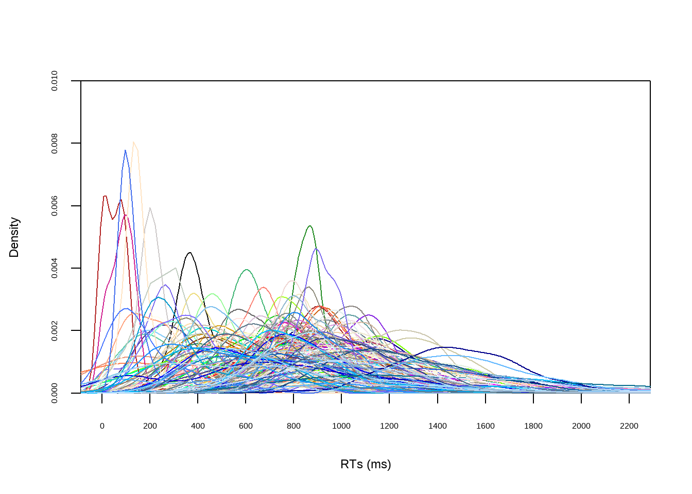
data_testing_rt_means <- aggregate(data_testing$rt, list(data_testing$sbj_ID), FUN=mean, na.rm=TRUE);
summary(data_testing_rt_means$x); # good med & mean Min. 1st Qu. Median Mean 3rd Qu. Max.
174.5 725.7 920.1 914.2 1092.7 1986.1 plot(data_testing_rt_means$x, ylab="Mean participant RT (ms)",xlab="Participants",main="",xaxt = "n",pch=3,yaxs="i",ylim=c(0,2750))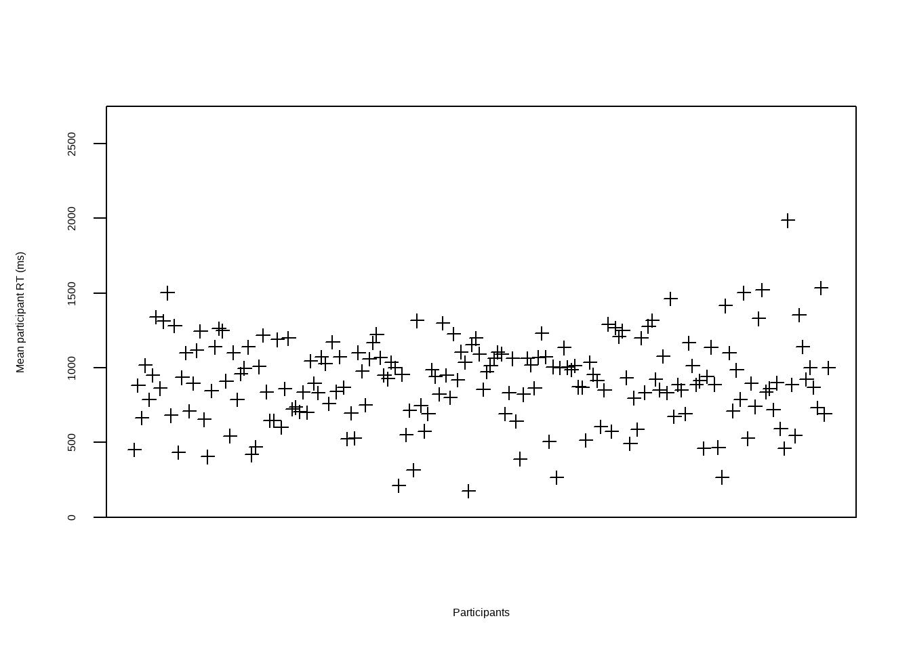
# looks healthy overall
## problematic participant RTs ##
summary(data_testing$rt[data_testing$sbj_ID=="5e6449ae5932461d728d2152"]); Min. 1st Qu. Median Mean 3rd Qu. Max.
490 1102 1250 1502 1567 21759 plot(data_testing$rt[data_testing$sbj_ID=="5e6449ae5932461d728d2152"],ylim=c(2000,22000));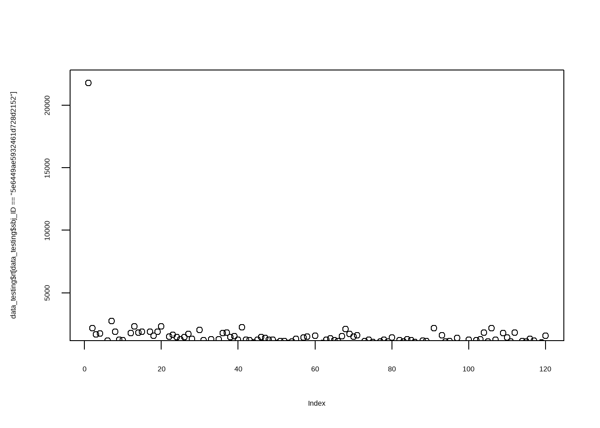
plot(data_testing$rt[data_testing$sbj_ID=="5e6449ae5932461d728d2152"&data_testing$rt>2000]);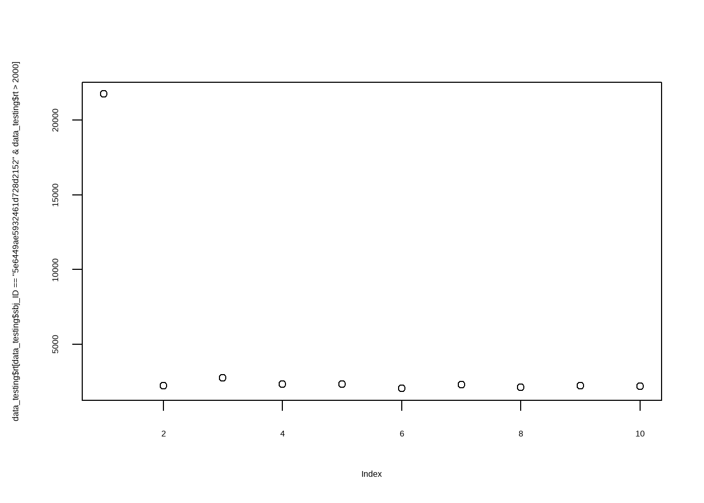
# include 5e6449ae5932461d728d2152: mean RT of 1502 slow, but only 10 trials too slow
summary(data_testing$rt[data_testing$sbj_ID=="667d631ef036f8ef4ff2f4f3"]); Min. 1st Qu. Median Mean 3rd Qu. Max.
641 1034 1532 1986 2182 21398 plot(data_testing$rt[data_testing$sbj_ID=="667d631ef036f8ef4ff2f4f3"],ylim=c(2000,22000));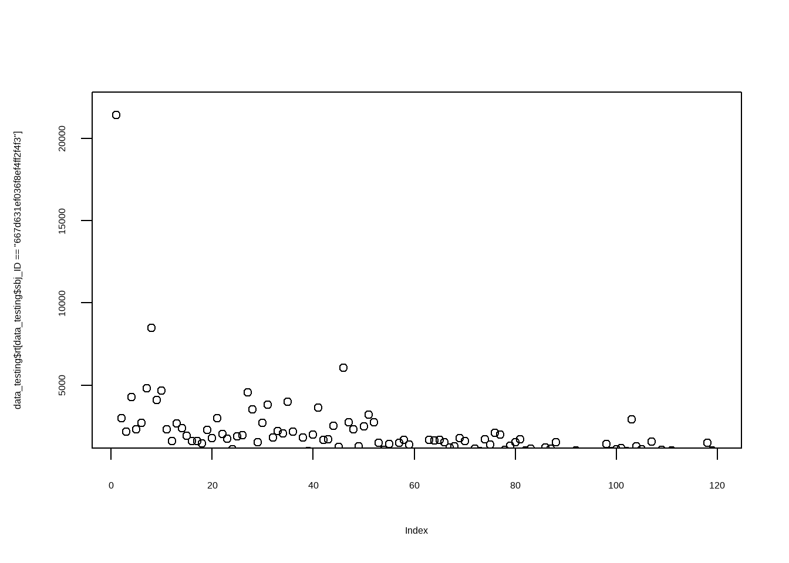
plot(data_testing$rt[data_testing$sbj_ID=="667d631ef036f8ef4ff2f4f3"&data_testing$rt>2000]);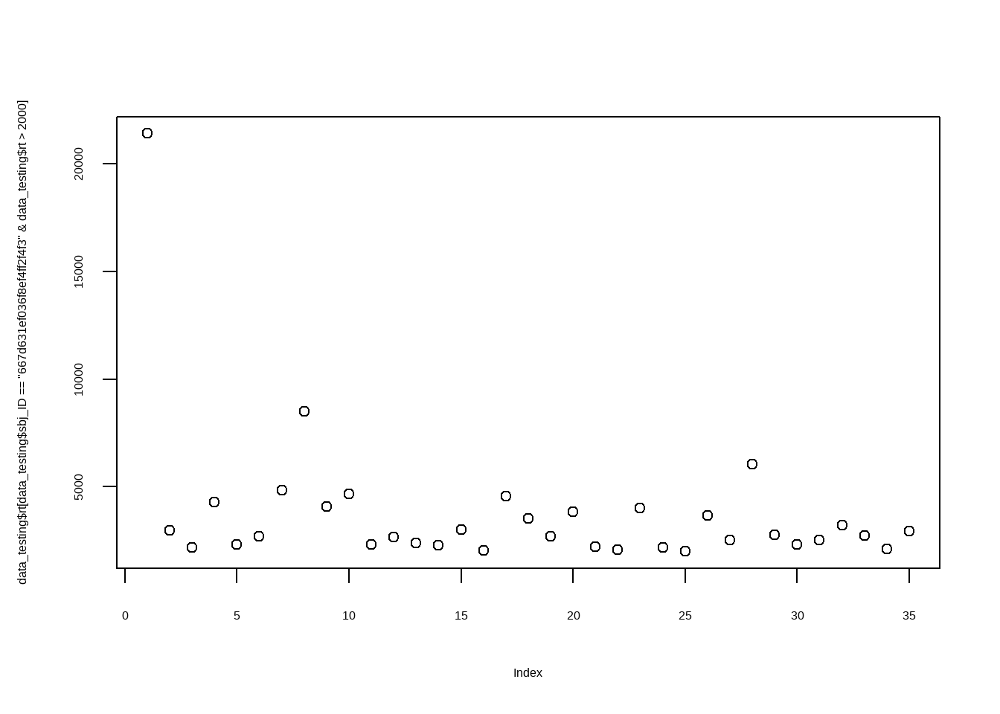
# exclude 667d631ef036f8ef4ff2f4f3: mean RT of 1986 slow, and 35 trials too slow
data_testing <- data_testing[!data_testing$sbj_ID %in% c('667d631ef036f8ef4ff2f4f3'),];
data_testing_rt_means <- data_testing_rt_means[!data_testing_rt_means$Group.1 %in% c('667d631ef036f8ef4ff2f4f3'),]
# now n=189
summary(data_testing$rt[data_testing$sbj_ID=="6488afe97766c9083ffc3171"]); Min. 1st Qu. Median Mean 3rd Qu. Max.
0.00 59.75 101.00 174.47 149.25 3474.00 # exclude 6488afe97766c9083ffc3171: mean RT of 175ms too fast
data_testing <- data_testing[!data_testing$sbj_ID %in% c('6488afe97766c9083ffc3171'),];
data_testing_rt_means <- data_testing_rt_means[!data_testing_rt_means$Group.1 %in% c('6488afe97766c9083ffc3171'),]
# now n=188
plot(data_testing$rt[data_testing$sbj_ID=="660c265dce47171c0dd7d359"]);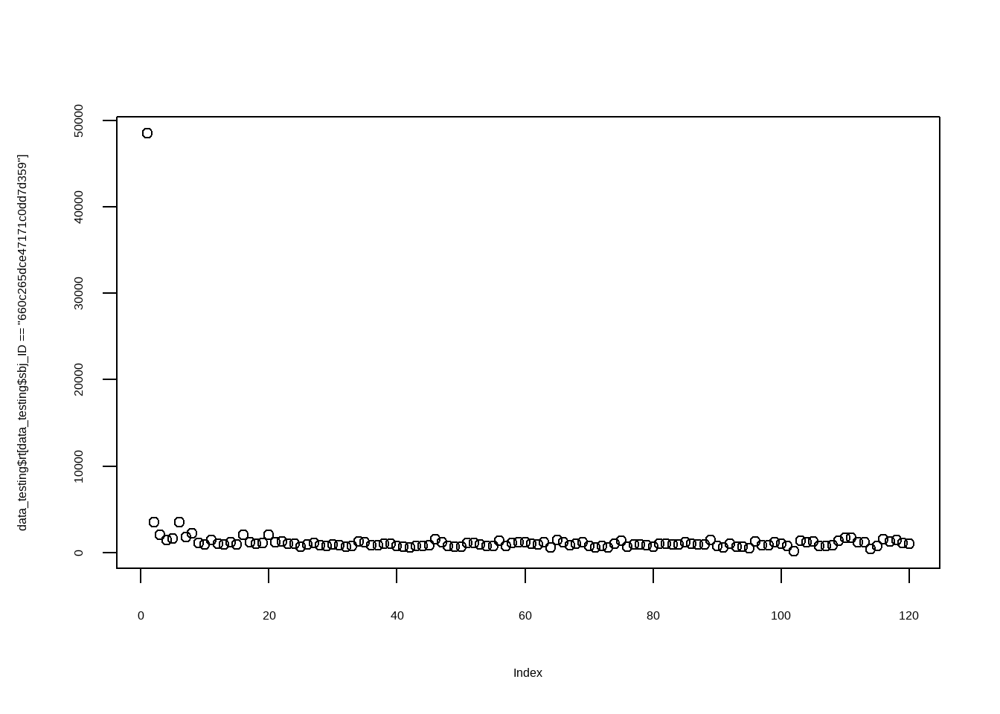
#fine to include: very long with the first item (50s!) but others all around 1s afterwards
summary(data_testing_rt_means$x); Min. 1st Qu. Median Mean 3rd Qu. Max.
211.6 730.1 920.1 912.5 1092.6 1533.9 mean_yes <- aggregate(data_testing$observed,by=list(data_testing$sbj_ID), FUN=function(x) sum(x == 'within_lang'));
names(mean_yes) <- c("sbj_ID", "yes");
summary(mean_yes$yes); Min. 1st Qu. Median Mean 3rd Qu. Max.
0.00 61.00 68.00 69.77 79.00 120.00 #never said "yes": 660310c1b1a7ea09dee682e2
#always said "yes": 5faacca24cd0384c1fa08be1, 65f7be6ac59662b24ac0f9b0, 664b7cd6b5a772dd1eddca37
data_testing <- data_testing[!data_testing$sbj_ID %in% c('660310c1b1a7ea09dee682e2','5faacca24cd0384c1fa08be1','65f7be6ac59662b24ac0f9b0','664b7cd6b5a772dd1eddca37'),];
data_testing_rt_means <- data_testing_rt_means[!data_testing_rt_means$Group.1 %in% c('660310c1b1a7ea09dee682e2','5faacca24cd0384c1fa08be1','65f7be6ac59662b24ac0f9b0','664b7cd6b5a772dd1eddca37'),]
# now n=184data_testing_0M_yes <- aggregate(data_testing$observed[data_testing$testing_condition=='0M'], by=list(data_testing$sbj_ID[data_testing$testing_condition=='0M']), FUN = function(x) sum(x == 'within_lang'));
names(data_testing_0M_yes) <- c("sbj_ID","yes_0M");
data_testing_0M_yes$yes_0M <- data_testing_0M_yes$yes_0M/40*100; #transform into percent
summary(data_testing_0M_yes$yes_0M); Min. 1st Qu. Median Mean 3rd Qu. Max.
7.50 42.50 52.50 52.26 62.50 87.50 t.test(data_testing_0M_yes$yes_0M, mu=50);
One Sample t-test
data: data_testing_0M_yes$yes_0M
t = 1.9448, df = 183, p-value = 0.05334
alternative hypothesis: true mean is not equal to 50
95 percent confidence interval:
49.96725 54.54362
sample estimates:
mean of x
52.25543 # 0M "yes" not sig above chance
data_testing <- merge(data_testing,data_testing_0M_yes,by="sbj_ID");data_testing_1M_yes <- aggregate(data_testing$observed[data_testing$testing_condition=='1M'], by=list(data_testing$sbj_ID[data_testing$testing_condition=='1M']), FUN = function(x) sum(x == 'within_lang'));
names(data_testing_1M_yes) <- c("sbj_ID","yes_1M");
data_testing_1M_yes$yes_1M <- data_testing_1M_yes$yes_1M/40*100; #transform into percent
summary(data_testing_1M_yes$yes_1M); Min. 1st Qu. Median Mean 3rd Qu. Max.
17.5 50.0 57.5 58.0 67.5 90.0 t.test(data_testing_1M_yes$yes_1M, mu=50);
One Sample t-test
data: data_testing_1M_yes$yes_1M
t = 8.1476, df = 183, p-value = 5.65e-14
alternative hypothesis: true mean is not equal to 50
95 percent confidence interval:
56.06480 59.94063
sample estimates:
mean of x
58.00272 # sig above chance
data_testing <- merge(data_testing,data_testing_1M_yes,by="sbj_ID");data_testing_2M_yes <- aggregate(data_testing$observed[data_testing$testing_condition=='2M'], by=list(data_testing$sbj_ID[data_testing$testing_condition=='2M']), FUN = function(x) sum(x == 'within_lang'));
names(data_testing_2M_yes) <- c("sbj_ID","yes_2M");
data_testing_2M_yes$yes_2M <- data_testing_2M_yes$yes_2M/40*100; #transform into percent
summary(data_testing_2M_yes$yes_2M); Min. 1st Qu. Median Mean 3rd Qu. Max.
30.00 52.50 62.50 63.07 72.50 95.00 t.test(data_testing_2M_yes$yes_2M, mu=50);
One Sample t-test
data: data_testing_2M_yes$yes_2M
t = 12.443, df = 183, p-value < 2.2e-16
alternative hypothesis: true mean is not equal to 50
95 percent confidence interval:
60.99818 65.14313
sample estimates:
mean of x
63.07065 # sig above chance
data_testing <- merge(data_testing,data_testing_2M_yes,by="sbj_ID");
data_testing_2M_aggr <- data_testing %>%
mutate(correct01 = case_when(correct == TRUE ~ 1,
correct == FALSE ~ 0),
yesno01 = case_when(observed == 'between_lang' ~ 0,
observed == 'within_lang' ~ 1)) %>%
filter(testing_condition == '2M') %>%
group_by(expected, sbj_ID) %>%
dplyr::summarise(meanCorrect = mean(correct01), se = sd(correct01/sqrt(n())),
meanYes = mean(yesno01), se = sd(yesno01/sqrt(n()))) %>%
mutate(meanNo = 1 - meanYes);`summarise()` has regrouped the output.
ℹ Summaries were computed grouped by expected and sbj_ID.
ℹ Output is grouped by expected.
ℹ Use `summarise(.groups = "drop_last")` to silence this message.
ℹ Use `summarise(.by = c(expected, sbj_ID))` for per-operation grouping
(`?dplyr::dplyr_by`) instead.data_testing_2M_aggr <- data_testing_2M_aggr %>%
pivot_longer(
cols = c(meanYes, meanNo),
names_to = "response",
values_to = "meanValue"
);
data_testing_2M_aggr$response <- as.factor(data_testing_2M_aggr$response);
ggplot(data_testing_2M_aggr[ which(data_testing_2M_aggr$response=='meanYes'),], aes(x=expected, y=meanValue, fill=expected)) +
geom_hline(yintercept=0.5, linetype="dashed", color="darkgrey",lwd=1.25) +
geom_violin(alpha=0.75,width=1) +
geom_boxplot(width=0.1,position=position_dodge(width=1)) +
scale_fill_manual(values=c(cols2[100],cols2[200]),
name="Participant response",labels=c("Between-language","Within-language")) +
scale_x_discrete(labels=c('Between-language', 'Within-language')) +
labs(x = "String nature", y = 'Proportion of "within-language" responses') +
theme(panel.grid.major = element_blank(), panel.grid.minor = element_blank(),
panel.background = element_blank(), axis.line = element_line(colour = "black"),
axis.text = element_text(family = "CMU Serif", size = 30, color = "black"),
text=element_text(family="CMU Serif",size=30),
legend.position="none",
legend.background=element_rect(fill=NA));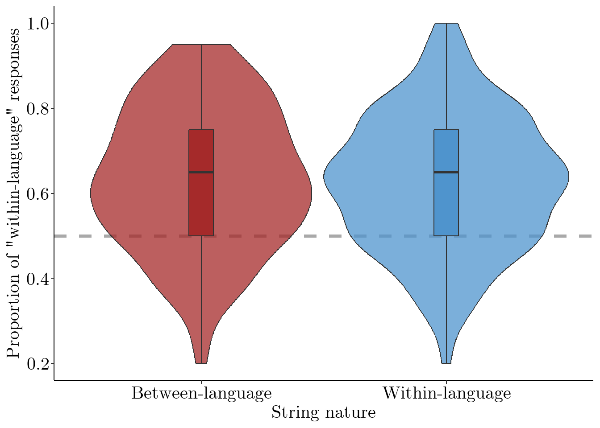
data_testing_2M_means <- aggregate(data_testing$correct[data_testing$testing_condition=='2M'], list(data_testing$sbj_ID[data_testing$testing_condition=='2M']), FUN=mean, na.rm=TRUE);
names(data_testing_2M_means) <- c("sbj_ID","score_2M");
ggplot(data_testing_2M_means, aes(x="", y=score_2M)) +
geom_hline(yintercept=0.5, linetype="dashed", color="darkgrey",lwd=1.25) +
geom_boxplot(fill="grey") +
ylim(0,1) +
labs(y='Participant 2M scores') +
theme(axis.title.x=element_blank(),axis.text.x=element_blank(),
axis.ticks.x=element_blank(),
panel.grid.major = element_blank(), panel.grid.minor = element_blank(),
panel.background = element_blank(), axis.line = element_line(colour = "black"),
axis.text = element_text(family = "CMU Serif", size = 20, color = "black"),
text=element_text(family="CMU Serif",size=20),
legend.position="inside",legend.position.inside = c(0.85,0.09),
legend.background=element_rect(fill=NA));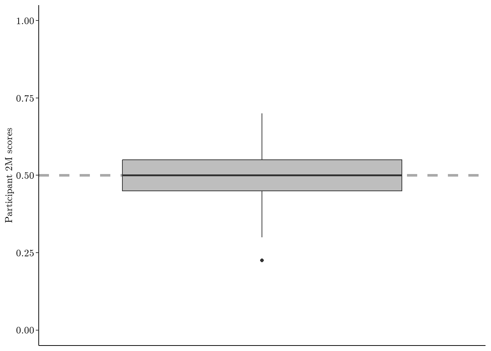
summary(data_testing_2M_means$score_2M); Min. 1st Qu. Median Mean 3rd Qu. Max.
0.2250 0.4500 0.5000 0.4954 0.5500 0.7000 var(data_testing_2M_means$score_2M); #var=0.006[1] 0.005982641plot(data_testing_2M_means$score_2M,pch=3,ylim=c(0,1));
abline(h=0.5, lty=5); # clustered around chance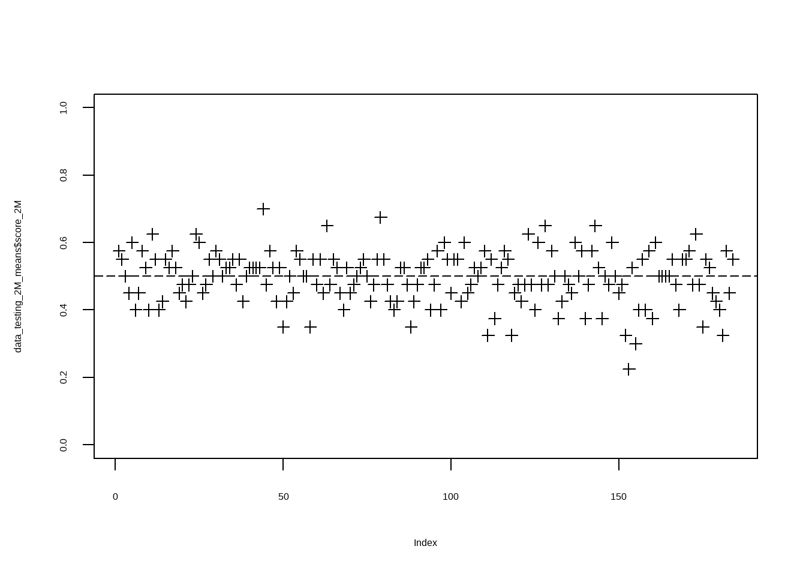
hist(data_testing_2M_means$score_2M); # normally distributed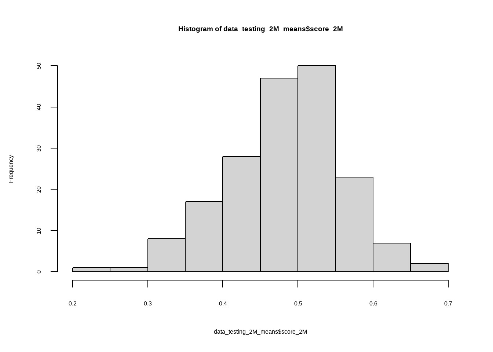
t.test(data_testing_2M_means$score_2M, mu=0.50);
One Sample t-test
data: data_testing_2M_means$score_2M
t = -0.81015, df = 183, p-value = 0.4189
alternative hypothesis: true mean is not equal to 0.5
95 percent confidence interval:
0.4841301 0.5066308
sample estimates:
mean of x
0.4953804 # not sig different from chance
data_testing <- merge(data_testing,data_testing_2M_means,by="sbj_ID");data_testing_2M <- data_testing[data_testing$testing_condition == '2M',];
data_testing_2M$expected_bi[data_testing_2M$expected == "between_lang"] <- 0;
data_testing_2M$expected_bi[data_testing_2M$expected == "within_lang"] <- 1;
data_testing_2M$observed_bi[data_testing_2M$observed == "between_lang"] <- 0;
data_testing_2M$observed_bi[data_testing_2M$observed == "within_lang"] <- 1;
dprimes2M <- dPrime(data_testing_2M$sbj_ID, data_testing_2M$expected_bi, data_testing_2M$observed_bi);
names(dprimes2M) <- c("sbj_ID","dprime","log_beta","c");
summary(dprimes2M); sbj_ID dprime log_beta c
Length :184 Min. :-1.7060 Min. :-1.26600 Min. :-1.5800
N.unique :184 1st Qu.:-0.2745 1st Qu.:-0.06700 1st Qu.:-0.5790
N.blank : 0 Median : 0.0000 Median : 0.00000 Median :-0.3080
Min.nchar: 24 Mean :-0.0255 Mean : 0.01408 Mean :-0.3541
Max.nchar: 24 3rd Qu.: 0.2710 3rd Qu.: 0.08375 3rd Qu.:-0.0600
Max. : 0.9940 Max. : 1.04400 Max. : 0.5020 # mean(d') = -0.03, mean(c) = -0.35
data_testing <- merge(data_testing,dprimes2M,by="sbj_ID");
cor.test(dprimes2M$dprime,dprimes2M$c, method="pearson");
Pearson's product-moment correlation
data: dprimes2M$dprime and dprimes2M$c
t = 0.39267, df = 182, p-value = 0.695
alternative hypothesis: true correlation is not equal to 0
95 percent confidence interval:
-0.1160549 0.1730273
sample estimates:
cor
0.02909456 # significant but tiny positive correlation
# more "YES" responses doesn't help you respond accurately
testing_short <- data_testing[!duplicated(data_testing$sbj_ID), ];
t.test(testing_short$dprime, mu=0);
One Sample t-test
data: testing_short$dprime
t = -0.80447, df = 183, p-value = 0.4222
alternative hypothesis: true mean is not equal to 0
95 percent confidence interval:
-0.08804007 0.03704007
sample estimates:
mean of x
-0.0255 # not sig different from chance
t.test(testing_short$c, mu=0);
One Sample t-test
data: testing_short$c
t = -11.827, df = 183, p-value < 2.2e-16
alternative hypothesis: true mean is not equal to 0
95 percent confidence interval:
-0.4131936 -0.2950456
sample estimates:
mean of x
-0.3541196 # sig above chance# evaluating the differences between conditions
data_testing_conditions <- merge(data_testing_0M_yes,data_testing_1M_yes, by='sbj_ID');
data_testing_conditions <- merge(data_testing_conditions,data_testing_2M_yes, by='sbj_ID');
conditions_table <- table(data_testing$testing_condition, data_testing$observed);
chisq.test(conditions_table);
Pearson's Chi-squared test
data: conditions_table
X-squared = 176.68, df = 2, p-value < 2.2e-16data_testing_conditions <- data_testing_conditions %>%
gather(condition, score, -sbj_ID);
data_testing_conditions$score <- data_testing_conditions$score/100;
# plotting all "yes" responses across conditions
yes_all_plt <- ggplot(data_testing_conditions, aes(x = condition, y = score, color = condition)) +
geom_hline(yintercept=0.5, linetype="dashed",
color = "darkgray",lwd=1.25) +
geom_jitter(width = 0.1, height = 0, alpha = 0.3,color= "black",size=2) +
labs(x = "Condition", y = 'Proportion of "yes" responses') +
theme(panel.grid.major = element_blank(), panel.grid.minor = element_blank(),
panel.background = element_blank(), axis.line = element_line(colour = "black"),
axis.text = element_text(family = "CMU Serif", size = 80, color = "black"),
text=element_text(family="CMU Serif",size=80)) +
ylim(0,1.01) +
stat_summary(geom = "point",fun = "mean",col = "red",size = 4,shape = 19) +
stat_summary(geom = "errorbar", fun.data = "mean_se", width = 0.1,col="red",position = position_dodge(width = 0.5)) +
scale_x_discrete(labels=c("0M", "1M", "2M"));
ggsave("exp2_yes_allconditions_scatterplot.png",width=10,height=7,yes_all_plt,path=output_folder,device="png");
# 2M accuracy*RTs
cor.test(data_testing_2M_means$score_2M, data_testing_rt_means$x, method="pearson");
Pearson's product-moment correlation
data: data_testing_2M_means$score_2M and data_testing_rt_means$x
t = 1.2668, df = 182, p-value = 0.2068
alternative hypothesis: true correlation is not equal to 0
95 percent confidence interval:
-0.05186913 0.23497640
sample estimates:
cor
0.09349341 # non-significant correlationstrats <- subset(data_testing, select = c(sbj_ID, strategy));
strats <- strats[!duplicated(strats),];
write.csv(strats,"BASL_exp2_strats.csv", row.names = FALSE);chunkID_strategists <- list('5ed14691e983f5067842fd20','5ef0b54037a90c618ad9e97f','602d2adcef81ce6b843da09b','6046435099c3d00becdb2dfb','6057a8fe2d302939fc759940','60bf28df4926a8b6391df575','60d26e7cd9f0761e4d12b9f8','60db9c9850c39eea109ef1d3','611d180283c1129def9284e6','6134d182408816f4c1284496','6136a1e1159dc808ad660d89','6148b49d6ac652cefd310332','6171946a19f6673fb215c0c7','628ed30ae7ff849e8bc91c86','631a1795de5efe7d3395caa3','63c5335da2b625ab1ade7e7c','6495a5f76daf70e418baf5f7','64e9d6f596308448ac67bb95','65361483b7f9881afa9b4cda','65672c69a3737224f1d0bbfa','65a97217d4fb858939a16b0f','65c23d4dbad7238169292b54','65dce7715387badaf80e875d','65e7259b24116547c5512668','660c265dce47171c0dd7d359','661c24ab06db7f1ff0146700','6634f754adfec54a4b1aaed4','664f70fcf77160132d600e2c','6661bf2ef4b2d0892ad7a007','666306b0bf2de127943c419f','668992b2f868cb89829346c2','6692b87aad65e83d4230c307');
data_chunkIDstrategists <- data_testing[data_testing$sbj_ID %in% chunkID_strategists,];
data_chunkIDstrategists <- data_chunkIDstrategists[data_chunkIDstrategists$testing_condition=='2M',];
data_chunkIDstrategists <- data_chunkIDstrategists[!duplicated(data_chunkIDstrategists$sbj_ID), ];
data_chunkIDstrategists$strat <- "chunkID";
summary(data_chunkIDstrategists$score_2M); Min. 1st Qu. Median Mean 3rd Qu. Max.
0.3250 0.4250 0.5250 0.4938 0.5500 0.6500 t.test(data_chunkIDstrategists$score_2M, mu=0.50);
One Sample t-test
data: data_chunkIDstrategists$score_2M
t = -0.40935, df = 31, p-value = 0.6851
alternative hypothesis: true mean is not equal to 0.5
95 percent confidence interval:
0.4626105 0.5248895
sample estimates:
mean of x
0.49375 # not sig different from chance
summary(data_chunkIDstrategists$dprime); Min. 1st Qu. Median Mean 3rd Qu. Max.
-0.96700 -0.40400 0.12250 0.00675 0.32700 0.84800 summary(data_chunkIDstrategists$c); Min. 1st Qu. Median Mean 3rd Qu. Max.
-1.5800 -0.6790 -0.4930 -0.4780 -0.1693 0.4560 # dprime:0.01 c:-0.48
t.test(data_chunkIDstrategists$dprime, mu=0);
One Sample t-test
data: data_chunkIDstrategists$dprime
t = 0.073151, df = 31, p-value = 0.9422
alternative hypothesis: true mean is not equal to 0
95 percent confidence interval:
-0.1814457 0.1949457
sample estimates:
mean of x
0.00675 # not sig different from chance
t.test(data_chunkIDstrategists$c, mu=0);
One Sample t-test
data: data_chunkIDstrategists$c
t = -5.1837, df = 31, p-value = 1.268e-05
alternative hypothesis: true mean is not equal to 0
95 percent confidence interval:
-0.6660689 -0.2899311
sample estimates:
mean of x
-0.478 # sig above chance
ggplot(data_chunkIDstrategists, aes(x="", y=score_2M)) +
geom_hline(yintercept=0.5, linetype="dashed", color="darkgrey",lwd=1.25) +
geom_violin(alpha=0.75,fill="gold1") +
geom_boxplot(width=0.1,fill="gold1") +
ylim(0,1) +
labs(y='Participant 2M scores') +
theme(axis.title.x=element_blank(),axis.text.x=element_blank(),
axis.ticks.x=element_blank(),
panel.grid.major = element_blank(), panel.grid.minor = element_blank(),
panel.background = element_blank(), axis.line = element_line(colour = "black"),
axis.text = element_text(family = "CMU Serif", size = 20, color = "black"),
text=element_text(family="CMU Serif",size=20),
legend.position="inside",legend.position.inside = c(0.85,0.09),
legend.background=element_rect(fill=NA));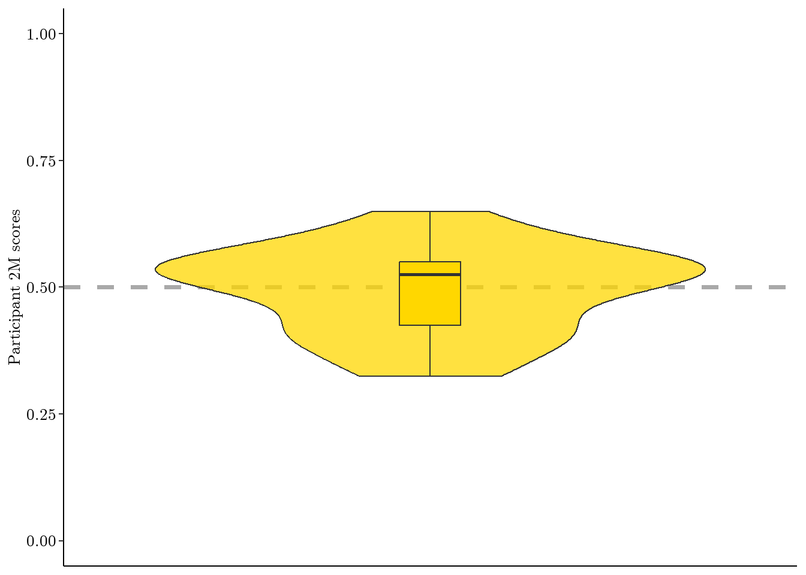
intuition_strategists <- list('579e18fc4a84da00014c6f4f','5c840aedbad8fb000106cb44','5d696d1c55742f001af29220','5e248b6f0c0b31718a9d3f31','5e2b03f0005f2a02c5a64f7b','5ebd8f8679146d0a116bc257','5eee55e93867d30a7771e616','5f1165307d03fb0009716b8e','5f21c29511084913913af654','5f35782429beab53ef93cc2d','5f6f3d061214fe49ec2b9619','5f8af153e27f001bcc23ffc4','5f8b724dc36e8c2ac6d5fb6e','5fade36bdde8092117469a42','5ffd4230d96f6b2649d31f72','60379326171365000ac6ae93','604d5e61486bd0622d2102c0','60907b8091341e8724ba80ed','60c873a65a9883b52f70db6c','60ca0b60979a23c83652c303','60d9dfd4dcc09cf57dc92cb1','60e586145b73b702a608bace','60e5ac4f3d93f294f5fa543b','60f9739250a5c6f6e4726336','6102ee48644f517877d64d2b','6106ac34408681f3b0d07396','610d45e26c9b141264755d3c','611e00dc377e4fb7a27725e8','61242dd5be1a06b174975a1f','61248a51eefb6797024ecb85','612cc44439ccefbbd5d4b278','613054cf8dffc8bbb1fc9cc4','613758e7a80409ba7f5affb6','613ca0a2040055a4e87c5d71','6166ef334de9e433e83bfb79','616ad7ac6299f99ce33cdc78','61717173748006894b2b54ff','6413799cf7721ee0ce637e09','646e0d2370c16a7561ae7dcb','649264e0b601af80c5677791','6492c23a1a7735dfaab2b095','6497e970e2621e753513a695','64e8bd55c9089d5bf26c90cd','64e8c14bbe184c20cb9d0583','64f7a35c5f6503caaa59f79f','6505a9adbb769aeea736a2f5','650aed9eb9cc2c717ba70c30','65352001dbe3e18eae5a8300','653fb764c9aed77c01457531','654632f222cb15acd453c0d3','65523123662559399b1aa48a','6557def45fc0ffbd46ad01de','655f5b404a09c686df3b0143','655f8b959477c803eb906622','657bfe6e245848c8fef0b389','6597e935328d41ae3aeef33b','6598994f0e7e5db183bfe3ee','659ada2d6df23a57d8e56752','65a97afe116a650acc588c5b','65b96f3bbecf5e7d0f5853cd','65cf6d92ac6f7932b1470fb4','65f33b94cd6885d54029582d','66031000461c44484ac359a8','6606c9d692990fbf223f63bb','66168e55cb60649609600268','661ff04db0e4a8222d5c4dd7','663e08a82c273a8ea28be4e7','664f48afa42c9a4a7ed2bb88','6659ca4701d47b95a09ba736','665f79d15be62c63a74883d6','6662d40766c8aa595834461d','6666cf176a54945ba62e8ca9','6667488c5f46f3da0c085419','6672ee650699d871b742ca6b','667dd7126e7a9073e0af73fd','6681625ff9dfa8a95bb0359d','66844cc1407c6afd0e100482','6693f13e028361f102a9ed86','66951e094b5bd0caf94e844f');
data_intuitionstrategists <- data_testing[data_testing$sbj_ID %in% intuition_strategists,];
data_intuitionstrategists <- data_intuitionstrategists[data_intuitionstrategists$testing_condition=='2M',];
data_intuitionstrategists <- data_intuitionstrategists[!duplicated(data_intuitionstrategists$sbj_ID), ];
data_intuitionstrategists$strat <- "intuition";
summary(data_intuitionstrategists$score_2M); Min. 1st Qu. Median Mean 3rd Qu. Max.
0.3000 0.4500 0.5000 0.4858 0.5250 0.6750 t.test(data_intuitionstrategists$score_2M, mu=0.50);
One Sample t-test
data: data_intuitionstrategists$score_2M
t = -1.6932, df = 78, p-value = 0.0944
alternative hypothesis: true mean is not equal to 0.5
95 percent confidence interval:
0.4690159 0.5025031
sample estimates:
mean of x
0.4857595 # not sig different from chance
summary(data_intuitionstrategists$dprime); Min. 1st Qu. Median Mean 3rd Qu. Max.
-1.00400 -0.31600 0.00000 -0.07311 0.15400 0.87900 summary(data_intuitionstrategists$c); Min. 1st Qu. Median Mean 3rd Qu. Max.
-1.4650 -0.5160 -0.2490 -0.2935 0.0000 0.5020 # dprime:-0.07 c:-0.29
t.test(data_intuitionstrategists$dprime, mu=0);
One Sample t-test
data: data_intuitionstrategists$dprime
t = -1.638, df = 78, p-value = 0.1055
alternative hypothesis: true mean is not equal to 0
95 percent confidence interval:
-0.16197954 0.01575169
sample estimates:
mean of x
-0.07311392 # not sig different from chance
t.test(data_intuitionstrategists$c, mu=0);
One Sample t-test
data: data_intuitionstrategists$c
t = -6.8311, df = 78, p-value = 1.648e-09
alternative hypothesis: true mean is not equal to 0
95 percent confidence interval:
-0.3789964 -0.2079403
sample estimates:
mean of x
-0.2934684 # sig above chance
ggplot(data_intuitionstrategists, aes(x="", y=score_2M)) +
geom_hline(yintercept=0.5, linetype="dashed", color="darkgrey",lwd=1.25) +
geom_violin(alpha=0.75,fill="palevioletred") +
geom_boxplot(width=0.1,fill="palevioletred") +
ylim(0,1) +
labs(y='Participant 2M scores') +
theme(axis.title.x=element_blank(),axis.text.x=element_blank(),
axis.ticks.x=element_blank(),
panel.grid.major = element_blank(), panel.grid.minor = element_blank(),
panel.background = element_blank(), axis.line = element_line(colour = "black"),
axis.text = element_text(family = "CMU Serif", size = 20, color = "black"),
text=element_text(family="CMU Serif",size=20),
legend.position="inside",legend.position.inside = c(0.85,0.09),
legend.background=element_rect(fill=NA));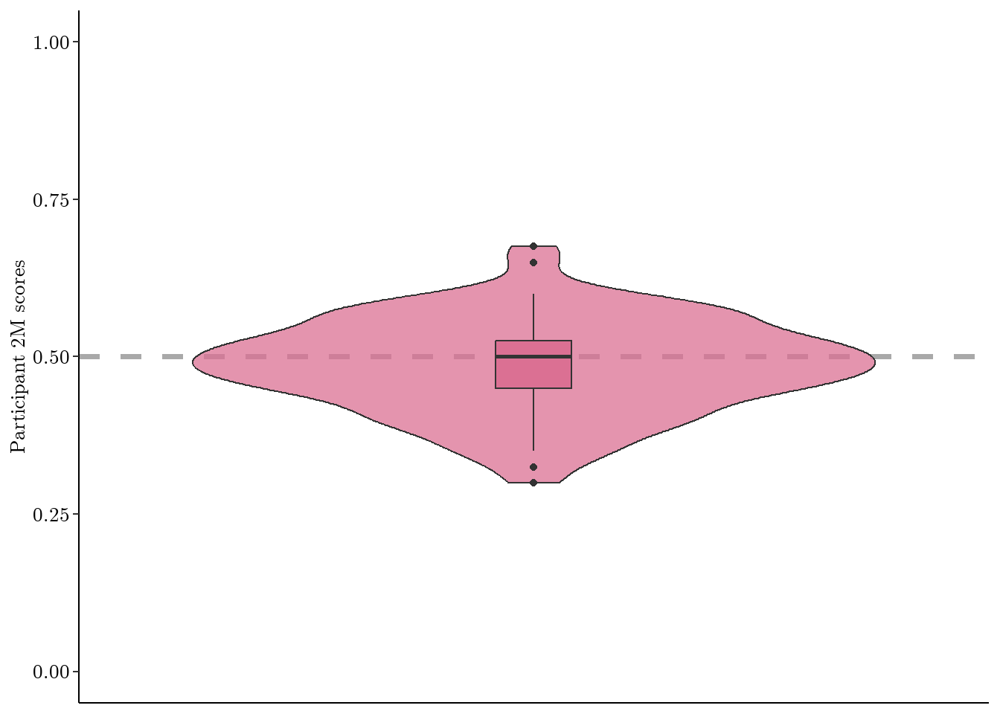
scores_strategies <- rbind(data_chunkIDstrategists,data_intuitionstrategists);
ggplot(scores_strategies, aes(x=strat, y=score_2M, fill=strat)) +
geom_hline(yintercept=0.5, linetype="dashed", color="darkgrey",lwd=1.25) +
geom_violin(alpha=0.75,width=1) +
geom_boxplot(width=0.1,position=position_dodge(width=1)) +
ylim(0,1) +
scale_fill_manual(values=c("gold1","palevioletred")) +
scale_x_discrete(labels=c('Chunk ID', 'Intuition')) +
labs(x="Strategy used",y="Participant 2M scores") +
theme(panel.grid.major = element_blank(), panel.grid.minor = element_blank(),
panel.background = element_blank(), axis.line = element_line(colour = "black"),
axis.text = element_text(family = "CMU Serif", size = 30, color = "black"),
text=element_text(family="CMU Serif",size=30),
legend.position="none",legend.background=element_rect(fill=NA));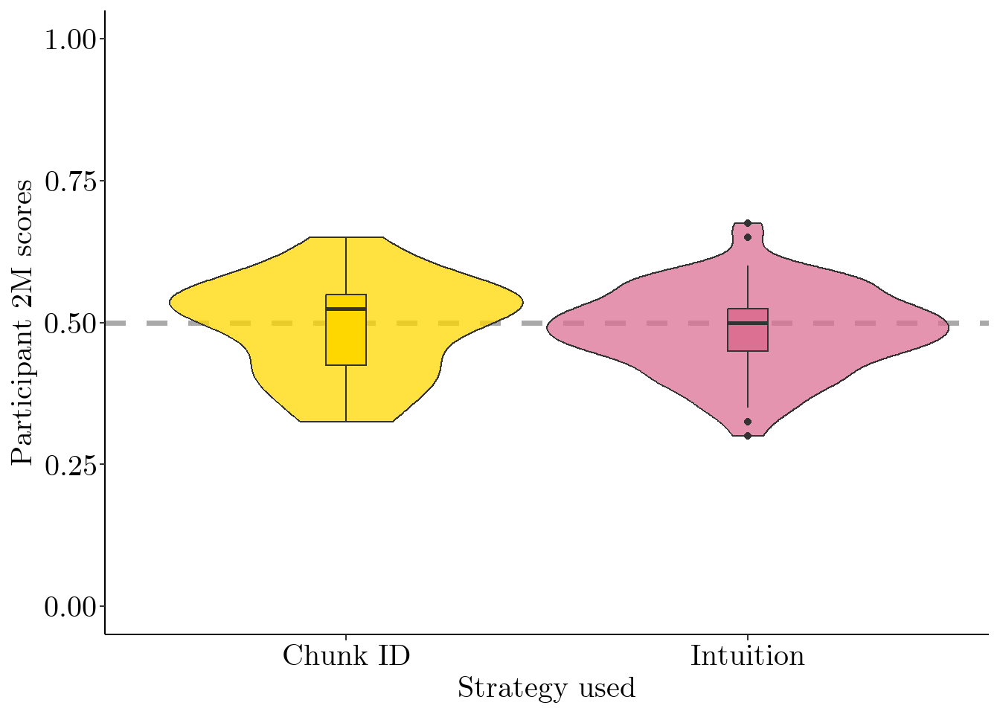
ggplot(scores_strategies, aes(x=strat, y=dprime, fill=strat)) +
geom_hline(yintercept=0, linetype="dashed", color="darkgrey",lwd=1.25) +
geom_violin(alpha=0.75,width=1) +
geom_boxplot(width=0.1,position=position_dodge(width=1)) +
scale_fill_manual(values=c("gold1","palevioletred")) +
scale_x_discrete(labels=c('Chunk ID', 'Intuition')) +
labs(x="Strategy used",y="Participant D prime") +
theme(panel.grid.major = element_blank(), panel.grid.minor = element_blank(),
panel.background = element_blank(), axis.line = element_line(colour = "black"),
axis.text = element_text(family = "CMU Serif", size = 30, color = "black"),
text=element_text(family="CMU Serif",size=30),
legend.position="none",legend.background=element_rect(fill=NA));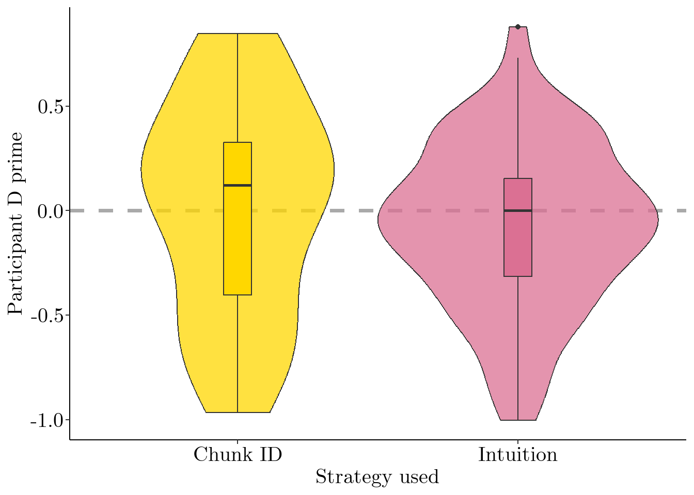
data_all_familiarity <- read.csv("exp2_familiarity_preprocessed.csv",header=T,sep=",");
data_all_familiarity <- subset(data_all_familiarity, select = -c(X)) # remove redundant column added by Pavlovia
data_familiarity <- data_all_familiarity[data_all_familiarity$sbj_ID %in% participants,]; # n = 187 participants
data_familiarity <- data_familiarity[!data_familiarity$sbj_ID %in% c('667d631ef036f8ef4ff2f4f3','6488afe97766c9083ffc3171','666f0fb7d9900bb03f5d99a1','660310c1b1a7ea09dee682e2','5faacca24cd0384c1fa08be1', '65f7be6ac59662b24ac0f9b0', '664b7cd6b5a772dd1eddca37'),];
# make some variables factors
data_familiarity$sbj_ID <- as.factor(data_familiarity$sbj_ID);
data_familiarity$task <- as.factor(data_familiarity$task);
data_familiarity$correct <- as.logical(data_familiarity$correct);
data_familiarity$target <- as.factor(data_familiarity$target);
data_familiarity$confound <- as.factor(data_familiarity$confound);data_familiarity_means <- aggregate(data_familiarity$correct, list(data_familiarity$sbj_ID), FUN=mean);
colnames(data_familiarity_means)[colnames(data_familiarity_means)=="Group.1"]="sbj_ID";
colnames(data_familiarity_means)[colnames(data_familiarity_means)=="x"]="fam_mean";
summary(data_familiarity_means$fam_mean); Min. 1st Qu. Median Mean 3rd Qu. Max.
0.3667 0.5000 0.5667 0.5737 0.6333 0.9333 hist(data_familiarity_means$fam_mean); # mostly normally distributed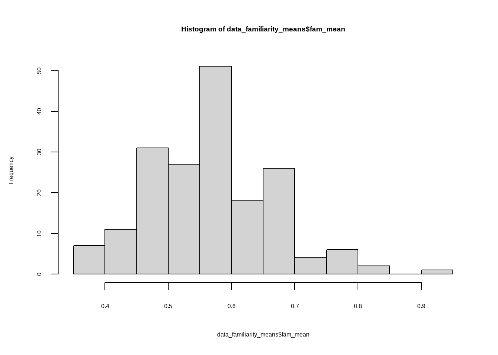
t.test(data_familiarity_means$fam_mean, mu=0.50);
One Sample t-test
data: data_familiarity_means$fam_mean
t = 10.196, df = 183, p-value < 2.2e-16
alternative hypothesis: true mean is not equal to 0.5
95 percent confidence interval:
0.5594642 0.5879995
sample estimates:
mean of x
0.5737319 # sig above chance
var(data_familiarity_means$fam_mean);[1] 0.009621941data_familiarity <- merge(data_familiarity,data_familiarity_means,by="sbj_ID");
# familiarity accuracy violin plot
ggplot(data_familiarity_means, aes(y=fam_mean, x=x)) +
geom_hline(yintercept=0.5, linetype="dashed",
color = "darkgray",lwd=1.25) +
geom_violin(alpha=0.75,fill="orchid4") +
geom_boxplot(width=0.1,fill="orchid4") +
ylim(0,1) +
scale_fill_manual(values=cols2[350]) +
labs(y = 'Proportion of correct familiarity responses') +
theme(panel.grid.major = element_blank(), panel.grid.minor = element_blank(),
panel.background = element_blank(), axis.line = element_line(colour = "black"),
axis.text = element_text(family = "CMU Serif", size = 30, color = "black"),
text=element_text(family="CMU Serif",size=30),legend.position = "none",
axis.title.x=element_blank(),axis.text.x=element_blank(),
axis.ticks.x=element_blank());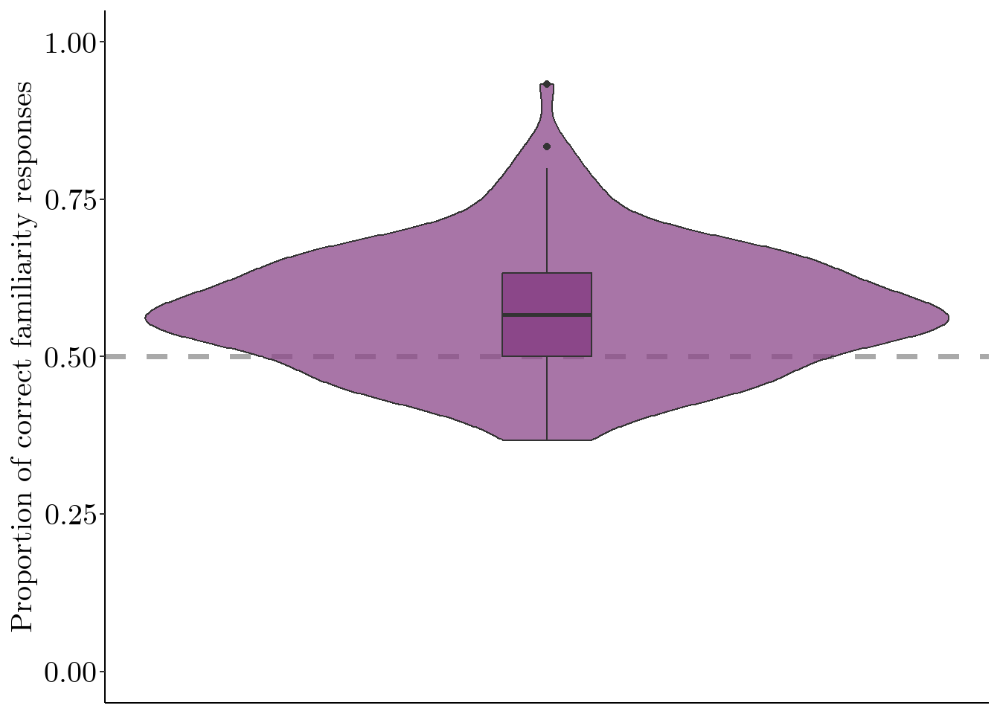
IDs <- list(data_familiarity$sbj_ID);
IDs <- sapply(IDs, unique);
plot(density(data_familiarity$rt[data_familiarity$sbj_ID==IDs[1]]),xlim=c(0,4000),ylim=c(0,0.01),xlab="Familiarity RTs (ms)",main="",xaxt = "n",col=cols2[1],lwd=2,yaxs="i");
axis(1, at = c(0,500,1000,1500,2000,2500,3000,3500,4000));
for (x in 2:184) {
lines(density(data_familiarity$rt[data_familiarity$sbj_ID==IDs[x]]),col=cols2[x],lwd=2)
};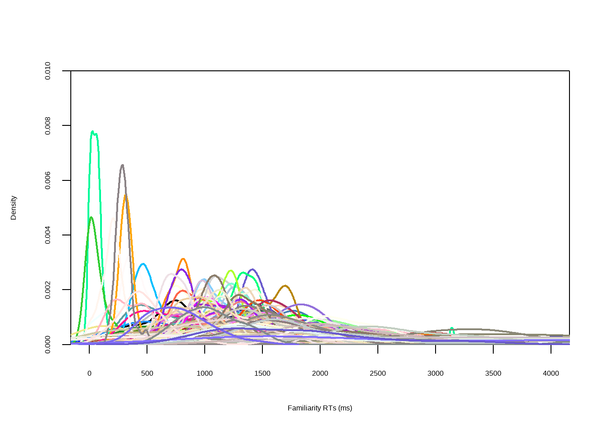
data_familiarity_rt_means <- aggregate(data_familiarity$rt, list(data_familiarity$sbj_ID), FUN=mean, na.rm=TRUE);
summary(data_familiarity_rt_means$x); Min. 1st Qu. Median Mean 3rd Qu. Max.
153.5 1212.5 1655.0 1681.2 1982.0 4519.3 # familiarity accuracy*RTs
cor.test(data_familiarity_means$fam_mean, data_familiarity_rt_means$x, method="pearson")
Pearson's product-moment correlation
data: data_familiarity_means$fam_mean and data_familiarity_rt_means$x
t = 4.3115, df = 182, p-value = 2.653e-05
alternative hypothesis: true correlation is not equal to 0
95 percent confidence interval:
0.1671181 0.4301383
sample estimates:
cor
0.3044196 # slower at responding = better accuracy# familiarity accuracy*testing accuracy
cor.test(data_familiarity_means$fam_mean, data_testing_2M_means$score_2M, method="pearson");
Pearson's product-moment correlation
data: data_familiarity_means$fam_mean and data_testing_2M_means$score_2M
t = 0.26893, df = 182, p-value = 0.7883
alternative hypothesis: true correlation is not equal to 0
95 percent confidence interval:
-0.1250914 0.1641181
sample estimates:
cor
0.01993027 # no correlation
# familiarity accuracy by testing strategy
data_strategistsfam <- data_familiarity_means;
data_strategistsfam$strat[data_strategistsfam$sbj_ID %in% intuition_strategists] <- 'intuition';
data_strategistsfam$strat[data_strategistsfam$sbj_ID %in% chunkID_strategists] <- 'chunks';
data_strategistsfam$strat[data_strategistsfam$sbj_ID %in% chunkID_strategists] <- 'chunks';
data_strategistsfam$strat <- data_strategistsfam$strat %>% replace_na('other');
summary(data_strategistsfam$fam_mean[data_strategistsfam$strat=='chunks']); Min. 1st Qu. Median Mean 3rd Qu. Max.
0.3667 0.5333 0.6000 0.6000 0.6333 0.9333 t.test(data_strategistsfam$fam_mean[data_strategistsfam$strat=='chunks'],mu=0.50);
One Sample t-test
data: data_strategistsfam$fam_mean[data_strategistsfam$strat == "chunks"]
t = 4.8729, df = 31, p-value = 3.091e-05
alternative hypothesis: true mean is not equal to 0.5
95 percent confidence interval:
0.5581454 0.6418546
sample estimates:
mean of x
0.6 # significantly positively correlated
summary(data_strategistsfam$fam_mean[data_strategistsfam$strat=='intuition']); Min. 1st Qu. Median Mean 3rd Qu. Max.
0.3667 0.5000 0.5667 0.5688 0.6333 0.8333 t.test(data_strategistsfam$fam_mean[data_strategistsfam$strat=='intuition'],mu=0.50);
One Sample t-test
data: data_strategistsfam$fam_mean[data_strategistsfam$strat == "intuition"]
t = 6.4391, df = 78, p-value = 9e-09
alternative hypothesis: true mean is not equal to 0.5
95 percent confidence interval:
0.5475122 0.5900406
sample estimates:
mean of x
0.5687764 # significantly positively correlated
par(mar=c(5,5,2,2));
boxplot(data_strategistsfam$fam_mean~data_strategistsfam$strat,ylab = "Familiarity score",xlab="Testing strategy",ylim=c(0.28,0.9),cex.lab=2,cex.axis=1.75,yaxs="i");
abline(h=0.5, lty=5);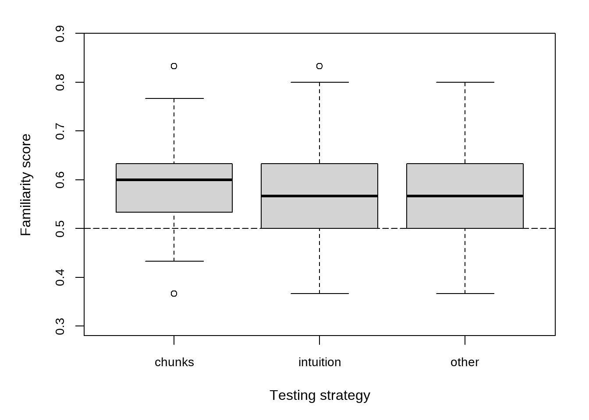
par(mar=c(5, 4, 4, 2) + 0.1); # back to defaultdata_all_BLP <- read.csv("exp2_BLP_preprocessed.csv",header=T,sep=",");
data_all_BLP <- subset(data_all_BLP, select = -c(X)); # remove redundant column added by Pavlovia
data_BLP <- data_all_BLP[data_all_BLP$sbj_ID %in% participants,]; # n = 190 participants
data_BLP <- data_BLP[!data_BLP$sbj_ID %in% c('667d631ef036f8ef4ff2f4f3','6488afe97766c9083ffc3171','666f0fb7d9900bb03f5d99a1','660310c1b1a7ea09dee682e2','5faacca24cd0384c1fa08be1', '65f7be6ac59662b24ac0f9b0', '664b7cd6b5a772dd1eddca37'),];
BLP_correction <- function(data_BLP)
{
data_BLP[data_BLP == "polish"] <- "Polish";
data_BLP[data_BLP == "english"|data_BLP=="English "|data_BLP=="ENGLISH"|data_BLP=="Englsih"|data_BLP=="Englsh"|data_BLP=="British"|data_BLP=="Engllish"|data_BLP=="ENGLISH "] <- "English";
data_BLP[data_BLP == "portuguese"|data_BLP=="Potuguese"] <- "Portuguese";
data_BLP[data_BLP =="SPANISH"|data_BLP=="Spnsh"|data_BLP=="spanish"] <- "Spanish";
data_BLP[data_BLP == "ITALIAN"|data_BLP=="italian"] <- "Italian";
data_BLP[data_BLP == "sotho"] <- "Sotho";
data_BLP[data_BLP == "Gree"|data_BLP=="GREEK"] <- "Greek";
data_BLP[data_BLP == "tshivenda"] <- "Tshivenda";
data_BLP[data_BLP == "Gujrau"] <- "Gujarati"; # to check
data_BLP[data_BLP == "ukrainian"|data_BLP=="ukranian"] <- "Ukrainian";
data_BLP[data_BLP == "SETSWANA"] <- "Setswana";
data_BLP[data_BLP == "afrikaans"] <- "Afrikaans";
data_BLP[data_BLP == "punjabi"] <- "Punjabi";
data_BLP[data_BLP == "siswati"] <- "Siswati";
data_BLP[data_BLP == "Germany"|data_BLP=="german"|data_BLP=="germany"|data_BLP=="GERMANY"] <- "German";
data_BLP[data_BLP == "russian"] <- "Russian";
data_BLP[data_BLP == "Isiulu"] <- "IsiZulu";
data_BLP[data_BLP == "ZULU"|data_BLP=="zulu"] <- "Zulu";
data_BLP[data_BLP == "northern sotho"] <- "Northern Sotho";
data_BLP[data_BLP == "chinese"] <- "Chinese";
data_BLP[data_BLP == "sesotho"] <- "Sesotho";
data_BLP[data_BLP == "sepedi"] <- "Sepedi";
data_BLP[data_BLP == "TSHIVENDA"] <- "Tshivenda";
data_BLP[data_BLP == "XHOSA"] <- "Xhosa";
data_BLP[data_BLP == "french"] <- "French";
data_BLP[data_BLP == "hungarian"] <- "Hungarian";
data_BLP[data_BLP == "POLISH"] <- "Polish";
data_BLP[data_BLP == "croatian"] <- "Croatian";
data_BLP[data_BLP == "bosnian"] <- "Bosnian";
data_BLP[data_BLP == "madarin"] <- "Mandarin";
data_BLP[data_BLP == "Icelandic and German"] <- "Icelandic";
data_BLP[data_BLP == "a little bit of russian"] <- "Russian";
data_BLP[data_BLP == "NDEBELE"] <- "Ndebele";
data_BLP[data_BLP == "urdu"] <- "Urdu";
data_BLP[data_BLP == "latvian"] <- "Latvian";
data_BLP[data_BLP == "Malayam"] <- "Malayan";
data_BLP[data_BLP == "swahili"] <- "Swahili";
data_BLP[data_BLP == "serbian"] <- "Serbian";
data_BLP[data_BLP == "SEPEDI"] <- "Sepedi";
data_BLP[data_BLP == "japanese"] <- "Japanese";
data_BLP[data_BLP == "N/A"|data_BLP=="---"] <- "n/a";
data_BLP["L1"][is.na(data_BLP["L1"])] <- "n/a";
data_BLP["L2"][is.na(data_BLP["L2"])] <- "n/a";
data_BLP["L3"][is.na(data_BLP["L3"])] <- "n/a";
data_BLP["L4"][is.na(data_BLP["L4"])] <- "n/a";
# correcting some participants' demographic information - correction based off of Prolific's information
data_BLP["Age"][data_BLP["sbj_ID"] == "60c4a402716a8f9074fcd92e"] <- "21";
data_BLP["Age"][data_BLP["sbj_ID"] == "6103cbc5310ffddfafa01661"] <- "25";
data_BLP["Age"][data_BLP["sbj_ID"] == "6598994f0e7e5db183bfe3ee"] <- "23";
data_BLP["Age"][data_BLP["sbj_ID"] == "66168e55cb60649609600268"] <- "22";
data_BLP["Age"][data_BLP["sbj_ID"] == "579e18fc4a84da00014c6f4f"] <- "23";
data_BLP["Age"][data_BLP["sbj_ID"] == "5c1a6bd8f9250d0001b7c589"] <- "24";
data_BLP["Age"][data_BLP["sbj_ID"] == "5f6f3d061214fe49ec2b9619"] <- "22";
data_BLP["Age"][data_BLP["sbj_ID"] == "60ca0b60979a23c83652c303"] <- "24";
data_BLP["Age"][data_BLP["sbj_ID"] == "653fb764c9aed77c01457531"] <- "20";
data_BLP["Age"][data_BLP["sbj_ID"] == "6557def45fc0ffbd46ad01de"] <- "18";
data_BLP["Age"][data_BLP["sbj_ID"] == "657bfe6e245848c8fef0b389"] <- "20";
data_BLP["Age"][data_BLP["sbj_ID"] == "65abe33e1c79ea32da32ab0f"] <- "19";
data_BLP["Age"][data_BLP["sbj_ID"] == "65f33b94cd6885d54029582d"] <- "23";
data_BLP["Age"][data_BLP["sbj_ID"] == "6634e4d4f1950b4dcd44d4d9"] <- "19";
data_BLP["Age"][data_BLP["sbj_ID"] == "664b7cd6b5a772dd1eddca37"] <- "25";
data_BLP["Age"][data_BLP["sbj_ID"] == "6659ca4701d47b95a09ba736"] <- "19";
data_BLP["Age"][data_BLP["sbj_ID"] == "667dd7126e7a9073e0af73fd"] <- "23";
data_BLP["Age"][data_BLP["sbj_ID"] == "6681625ff9dfa8a95bb0359d"] <- "21";
return (data_BLP)
};
data_BLP <- BLP_correction(data_BLP);
# make some variables factors
data_BLP$task <- as.factor(data_BLP$task)
data_BLP$sbj_ID <- as.factor(data_BLP$sbj_ID);
data_BLP$Age <- as.numeric(data_BLP$Age);
data_BLP$Gender <- as.factor(data_BLP$Gender);
data_BLP$Education <- as.factor(data_BLP$Education);
data_BLP$L1 <- as.factor(data_BLP$L1);
data_BLP$L2 <- as.factor(data_BLP$L2);
data_BLP$L3 <- as.factor(data_BLP$L3);
data_BLP$L4 <- as.factor(data_BLP$L4);
data_BLP$otherLs <- as.factor(data_BLP$otherLs);
data_BLP$AttentionL1 <- as.factor(data_BLP$AttentionL1);
data_BLP$AttentionL2 <- as.factor(data_BLP$AttentionL2);
data_BLP$AttentionL3 <- as.factor(data_BLP$AttentionL3);
data_BLP$AttentionL4 <- as.factor(data_BLP$AttentionL4);
summary(data_BLP); sbj_ID Age Gender Education
579e18fc4a84da00014c6f4f: 1 Min. :18.00 Man :93 College :55
5b6aa4aa0d748b0001fb5260: 1 1st Qu.:21.00 Woman:91 HighSchool :50
5c1a6bd8f9250d0001b7c589: 1 Median :22.00 Masters :18
5c437f6a4fe4f800016e3d52: 1 Mean :22.22 MinusCollege :32
5c840aedbad8fb000106cb44: 1 3rd Qu.:24.00 MinusHighSchool: 1
5d696d1c55742f001af29220: 1 Max. :25.00 PhD : 1
(Other) :178 PlusCollege :27
L1 L2 L3 L4 otherLs
English :56 English :122 n/a :91 n/a :142 no :60
Polish :29 n/a : 20 German :23 Spanish : 9 n/a :41
Portuguese:15 Afrikaans: 5 Spanish:12 French : 3 No :36
Spanish : 9 Sesotho : 3 Zulu : 8 German : 3 Yes : 5
Hungarian : 8 Zulu : 3 French : 7 Zulu : 3 - : 4
Italian : 7 na : 2 English: 5 Afrikaans: 2 (Other):37
(Other) :60 (Other) : 29 (Other):38 (Other) : 22 NAs : 1
task AoAL1 AoEaseL1 yearsEduL1 yearsCountryL1
BLP:184 Min. : 0.00 Min. : 0.00 Min. : 0.00 Min. : 0.00
1st Qu.:20.00 1st Qu.:20.00 1st Qu.:12.00 1st Qu.:20.00
Median :20.00 Median :20.00 Median :15.00 Median :20.00
Mean :18.98 Mean :18.21 Mean :15.04 Mean :18.98
3rd Qu.:20.00 3rd Qu.:20.00 3rd Qu.:20.00 3rd Qu.:20.00
Max. :20.00 Max. :20.00 Max. :20.00 Max. :20.00
yearsFamilyL1 yearsWorkL1 PercFriendsL1 PercFamilyL1
Min. : 0.00 Min. : 0.00 Min. : 0.000 Min. : 0.000
1st Qu.:20.00 1st Qu.: 2.00 1st Qu.: 6.000 1st Qu.: 7.750
Median :20.00 Median :17.50 Median : 8.000 Median :10.000
Mean :19.25 Mean :11.49 Mean : 7.549 Mean : 8.315
3rd Qu.:20.00 3rd Qu.:20.00 3rd Qu.:10.000 3rd Qu.:10.000
Max. :20.00 Max. :20.00 Max. :10.000 Max. :10.000
PercWorkL1 PercSelfL1 PercCountL1 ProfSpeakL1
Min. : 0.00 Min. : 1.000 Min. : 0.000 Min. :4.000
1st Qu.: 5.00 1st Qu.: 5.000 1st Qu.: 5.000 1st Qu.:6.000
Median : 8.00 Median : 8.000 Median : 9.000 Median :6.000
Mean : 6.88 Mean : 7.147 Mean : 7.391 Mean :5.908
3rd Qu.:10.00 3rd Qu.:10.000 3rd Qu.:10.000 3rd Qu.:6.000
Max. :10.00 Max. :10.000 Max. :10.000 Max. :6.000
ProfUnderstandL1 ProfReadL1 AttentionL1 ProfWriteL1 AttSelfL1
Min. :4.000 Min. :3.000 true:184 Min. :2.000 Min. :2.000
1st Qu.:6.000 1st Qu.:6.000 1st Qu.:6.000 1st Qu.:6.000
Median :6.000 Median :6.000 Median :6.000 Median :6.000
Mean :5.962 Mean :5.864 Mean :5.745 Mean :5.777
3rd Qu.:6.000 3rd Qu.:6.000 3rd Qu.:6.000 3rd Qu.:6.000
Max. :6.000 Max. :6.000 Max. :6.000 Max. :6.000
AttCultureL1 AttNativeLevelL1 AttMothertongueL1 HistoryL1Score
Min. :0.000 Min. :2.000 Min. :0.000 Min. :17.71
1st Qu.:6.000 1st Qu.:6.000 1st Qu.:6.000 1st Qu.:42.22
Median :6.000 Median :6.000 Median :6.000 Median :46.53
Mean :5.538 Mean :5.788 Mean :5.565 Mean :46.28
3rd Qu.:6.000 3rd Qu.:6.000 3rd Qu.:6.000 3rd Qu.:52.21
Max. :6.000 Max. :6.000 Max. :6.000 Max. :54.48
HistoryL2Score HistoryL3Score HistoryL4Score UseL1Score
Min. : 0.00 Min. : 0.000 Min. : 0.000 Min. : 4.36
1st Qu.:12.26 1st Qu.: 0.000 1st Qu.: 0.000 1st Qu.:32.43
Median :18.61 Median : 0.000 Median : 0.000 Median :43.60
Mean :23.49 Mean : 7.523 Mean : 3.516 Mean :40.64
3rd Qu.:37.68 3rd Qu.:12.712 3rd Qu.: 0.000 3rd Qu.:51.23
Max. :54.48 Max. :52.210 Max. :51.756 Max. :54.50
UseL2Score UseL3Score UseL4Score ProficiencyL1Score
Min. : 0.000 Min. : 0.000 Min. :0.0000 Min. :34.05
1st Qu.: 3.270 1st Qu.: 0.000 1st Qu.:0.0000 1st Qu.:54.48
Median : 8.175 Median : 0.000 Median :0.0000 Median :54.48
Mean :12.031 Mean : 5.462 Mean :0.4798 Mean :53.30
3rd Qu.:18.530 3rd Qu.:10.900 3rd Qu.:0.0000 3rd Qu.:54.48
Max. :50.140 Max. :26.160 Max. :9.8100 Max. :54.48
ProficiencyL2Score ProficiencyL3Score ProficiencyL4Score AttitudeL1Score
Min. : 0.00 Min. : 0.00 Min. : 0.000 Min. :22.70
1st Qu.:43.13 1st Qu.: 0.00 1st Qu.: 0.000 1st Qu.:51.64
Median :49.94 Median : 0.00 Median : 0.000 Median :54.48
Mean :42.76 Mean :15.45 Mean : 6.045 Mean :51.46
3rd Qu.:54.48 3rd Qu.:30.08 3rd Qu.: 0.000 3rd Qu.:54.48
Max. :54.48 Max. :54.48 Max. :54.480 Max. :54.48
AttitudeL2Score AttitudeL3Score AttitudeL4Score L1Score
Min. : 0.00 Min. : 0.00 Min. : 0.000 Min. :128.7
1st Qu.:26.67 1st Qu.: 0.00 1st Qu.: 0.000 1st Qu.:177.7
Median :40.86 Median : 0.00 Median : 0.000 Median :197.1
Mean :35.52 Mean :12.35 Mean : 4.898 Mean :191.7
3rd Qu.:49.94 3rd Qu.:22.70 3rd Qu.: 0.000 3rd Qu.:207.0
Max. :54.48 Max. :54.48 Max. :54.480 Max. :217.9
L2Score L3Score L4Score AoAL2
Min. : 0.00 Min. : 0.00 Min. : 0.00 Min. : 5.00
1st Qu.: 93.59 1st Qu.: 0.00 1st Qu.: 0.00 1st Qu.:13.00
Median :125.04 Median : 10.44 Median : 0.00 Median :15.00
Mean :113.80 Mean : 40.78 Mean : 14.94 Mean :14.91
3rd Qu.:150.66 3rd Qu.: 75.66 3rd Qu.: 0.00 3rd Qu.:17.00
Max. :196.33 Max. :172.07 Max. :158.45 Max. :20.00
NAs :22
AoEaseL2 yearsEduL2 yearsCountryL2 yearsFamilyL2
Min. : 0.00 Min. : 0.00 Min. : 0.000 Min. : 0.000
1st Qu.: 6.00 1st Qu.: 9.00 1st Qu.: 0.000 1st Qu.: 0.000
Median :10.00 Median :13.00 Median : 1.000 Median : 0.500
Mean :10.65 Mean :12.43 Mean : 7.951 Mean : 8.383
3rd Qu.:15.00 3rd Qu.:16.00 3rd Qu.:20.000 3rd Qu.:20.000
Max. :20.00 Max. :20.00 Max. :20.000 Max. :20.000
NAs :22 NAs :22 NAs :22 NAs :22
yearsWorkL2 PercFriendsL2 PercFamilyL2 PercWorkL2
Min. : 0.000 Min. : 0.000 Min. : 0.000 Min. : 0
1st Qu.: 0.000 1st Qu.: 1.000 1st Qu.: 0.000 1st Qu.: 1
Median : 1.000 Median : 2.000 Median : 0.000 Median : 2
Mean : 4.457 Mean : 2.383 Mean : 1.605 Mean : 3
3rd Qu.: 4.750 3rd Qu.: 3.000 3rd Qu.: 2.000 3rd Qu.: 5
Max. :20.000 Max. :10.000 Max. :10.000 Max. :10
NAs :22 NAs :22 NAs :22 NAs :22
PercSelfL2 PercCountL2 ProfSpeakL2 ProfUnderstandL2
Min. :0.000 Min. : 0.000 Min. :2.000 Min. :2.00
1st Qu.:1.000 1st Qu.: 0.000 1st Qu.:5.000 1st Qu.:6.00
Median :2.000 Median : 1.000 Median :6.000 Median :6.00
Mean :2.858 Mean : 2.691 Mean :5.216 Mean :5.63
3rd Qu.:5.000 3rd Qu.: 5.000 3rd Qu.:6.000 3rd Qu.:6.00
Max. :9.000 Max. :10.000 Max. :6.000 Max. :6.00
NAs :22 NAs :22 NAs :22 NAs :22
ProfReadL2 AttentionL2 ProfWriteL2 AttSelfL2 AttCultureL2
Min. :0.0 : 22 Min. :0.000 Min. :0.000 Min. :0.00
1st Qu.:5.0 true:162 1st Qu.:4.000 1st Qu.:4.000 1st Qu.:2.00
Median :6.0 Median :6.000 Median :6.000 Median :4.00
Mean :5.5 Mean :5.049 Mean :4.846 Mean :3.58
3rd Qu.:6.0 3rd Qu.:6.000 3rd Qu.:6.000 3rd Qu.:6.00
Max. :6.0 Max. :6.000 Max. :6.000 Max. :6.00
NAs :22 NAs :22 NAs :22 NAs :22
AttNativeLevelL2 AttMothertongueL2 AoAL3 AoEaseL3
Min. :0.000 Min. :0.000 Min. : 0.00 Min. : 0.00
1st Qu.:4.000 1st Qu.:3.000 1st Qu.: 5.00 1st Qu.: 0.00
Median :6.000 Median :6.000 Median : 9.00 Median : 3.50
Mean :4.981 Mean :4.364 Mean : 9.38 Mean : 5.12
3rd Qu.:6.000 3rd Qu.:6.000 3rd Qu.:14.00 3rd Qu.: 8.00
Max. :6.000 Max. :6.000 Max. :20.00 Max. :20.00
NAs :22 NAs :22 NAs :92 NAs :92
yearsEduL3 yearsCountryL3 yearsFamilyL3 yearsWorkL3
Min. : 0.000 Min. : 0.000 Min. : 0.000 Min. : 0.000
1st Qu.: 0.000 1st Qu.: 0.000 1st Qu.: 0.000 1st Qu.: 0.000
Median : 4.000 Median : 1.000 Median : 0.000 Median : 0.000
Mean : 5.587 Mean : 6.272 Mean : 4.054 Mean : 2.728
3rd Qu.:10.000 3rd Qu.:20.000 3rd Qu.: 3.250 3rd Qu.: 2.250
Max. :20.000 Max. :20.000 Max. :20.000 Max. :20.000
NAs :92 NAs :92 NAs :92 NAs :92
PercFriendsL3 PercFamilyL3 PercWorkL3 PercSelfL3
Min. :0.0000 Min. :0.0000 Min. :0.0000 Min. :0.0000
1st Qu.:0.0000 1st Qu.:0.0000 1st Qu.:0.0000 1st Qu.:0.0000
Median :0.0000 Median :0.0000 Median :0.0000 Median :0.0000
Mean :0.5217 Mean :0.3804 Mean :0.7065 Mean :0.4783
3rd Qu.:1.0000 3rd Qu.:0.0000 3rd Qu.:1.0000 3rd Qu.:1.0000
Max. :6.0000 Max. :7.0000 Max. :8.0000 Max. :7.0000
NAs :92 NAs :92 NAs :92 NAs :92
PercCountL3 ProfSpeakL3 ProfUnderstandL3 ProfReadL3 AttentionL3
Min. :0.0000 Min. :0.000 Min. :0.000 Min. :0.000 :92
1st Qu.:0.0000 1st Qu.:2.000 1st Qu.:3.000 1st Qu.:2.000 true:92
Median :0.0000 Median :3.000 Median :4.000 Median :4.000
Mean :0.3913 Mean :3.076 Mean :3.826 Mean :3.739
3rd Qu.:0.0000 3rd Qu.:4.000 3rd Qu.:5.000 3rd Qu.:5.250
Max. :8.0000 Max. :6.000 Max. :6.000 Max. :6.000
NAs :92 NAs :92 NAs :92 NAs :92
ProfWriteL3 AttSelfL3 AttCultureL3 AttNativeLevelL3
Min. :0.000 Min. :0.000 Min. :0.000 Min. :0.000
1st Qu.:2.000 1st Qu.:0.000 1st Qu.:0.000 1st Qu.:1.000
Median :3.000 Median :2.000 Median :2.000 Median :3.000
Mean :2.967 Mean :2.261 Mean :2.478 Mean :3.304
3rd Qu.:4.000 3rd Qu.:3.000 3rd Qu.:4.000 3rd Qu.:6.000
Max. :6.000 Max. :6.000 Max. :6.000 Max. :6.000
NAs :92 NAs :92 NAs :92 NAs :92
AttMothertongueL3 AoAL4 AoEaseL4 yearsEduL4
Min. :0.000 Min. : 0.000 Min. : 0.000 Min. : 0.000
1st Qu.:0.000 1st Qu.: 4.000 1st Qu.: 0.000 1st Qu.: 0.000
Median :3.000 Median : 8.000 Median : 3.000 Median : 2.000
Mean :2.837 Mean : 8.829 Mean : 4.512 Mean : 4.902
3rd Qu.:6.000 3rd Qu.:12.000 3rd Qu.: 6.000 3rd Qu.: 8.000
Max. :6.000 Max. :20.000 Max. :20.000 Max. :20.000
NAs :92 NAs :143 NAs :143 NAs :143
yearsCountryL4 yearsFamilyL4 yearsWorkL4 PercFriendsL4
Min. : 0.000 Min. : 0.000 Min. : 0.00 Min. :0.0000
1st Qu.: 0.000 1st Qu.: 0.000 1st Qu.: 0.00 1st Qu.:0.0000
Median : 1.000 Median : 0.000 Median : 0.00 Median :0.0000
Mean : 7.317 Mean : 5.585 Mean : 3.61 Mean :0.4146
3rd Qu.:20.000 3rd Qu.:12.000 3rd Qu.: 3.00 3rd Qu.:1.0000
Max. :20.000 Max. :20.000 Max. :20.00 Max. :2.0000
NAs :143 NAs :143 NAs :143 NAs :143
PercFamilyL4 PercWorkL4 PercSelfL4 PercCountL4
Min. :0.0000 Min. :0.000 Min. :0.000 Min. :0.0000
1st Qu.:0.0000 1st Qu.:0.000 1st Qu.:0.000 1st Qu.:0.0000
Median :0.0000 Median :0.000 Median :0.000 Median :0.0000
Mean :0.3659 Mean :0.561 Mean :0.439 Mean :0.1951
3rd Qu.:0.0000 3rd Qu.:1.000 3rd Qu.:1.000 3rd Qu.:0.0000
Max. :5.0000 Max. :5.000 Max. :5.000 Max. :2.0000
NAs :143 NAs :143 NAs :143 NAs :143
ProfSpeakL4 ProfUnderstandL4 ProfReadL4 AttentionL4 ProfWriteL4
Min. :0.000 Min. :0.000 Min. :0.000 :143 Min. :0.000
1st Qu.:2.000 1st Qu.:2.000 1st Qu.:2.000 true: 41 1st Qu.:1.000
Median :2.000 Median :3.000 Median :3.000 Median :2.000
Mean :2.585 Mean :3.488 Mean :3.537 Mean :2.341
3rd Qu.:3.000 3rd Qu.:5.000 3rd Qu.:5.000 3rd Qu.:4.000
Max. :6.000 Max. :6.000 Max. :6.000 Max. :6.000
NAs :143 NAs :143 NAs :143 NAs :143
AttSelfL4 AttCultureL4 AttNativeLevelL4 AttMothertongueL4
Min. :0.000 Min. :0.000 Min. :0.000 Min. :0.000
1st Qu.:0.000 1st Qu.:0.000 1st Qu.:0.000 1st Qu.:0.000
Median :2.000 Median :2.000 Median :3.000 Median :2.000
Mean :2.122 Mean :2.244 Mean :2.878 Mean :2.439
3rd Qu.:3.000 3rd Qu.:4.000 3rd Qu.:6.000 3rd Qu.:6.000
Max. :6.000 Max. :6.000 Max. :6.000 Max. :6.000
NAs :143 NAs :143 NAs :143 NAs :143 # 93/91 M/F split
# mean age = 22.22
# Eng top L1 & L2 lang# languages visualisation
df <- read.csv("BASL_exp2_langs_summary.csv",header=T,sep=",");
df <- df %>% mutate(pathString = paste(family, branch, language, sep="/"));
tree_dt <- as.Node(df, pathName = "pathString");
tree_phylo <- as.phylo(tree_dt);
get_descendant_tips <- function(tree, node) {
children_edges <- which(tree$edge[,1] == node)
tips <- c()
for (i in children_edges) {
child <- tree$edge[i,2]
if (child <= length(tree$tip.label)) {
tips <- c(tips, child)
} else {
tips <- c(tips, get_descendant_tips(tree, child))
}
}
return(tips)
};
family_vec <- setNames(df$family, df$language);
branch_vec <- setNames(df$branch, df$language);
count_vec <- setNames(df$count, df$language);
edge_df <- ggtree::fortify(tree_phylo);
edge_df <- edge_df %>%
rowwise() %>%
mutate(
edge_width = if (isTip) {
cnt <- count_vec[label]
if(length(cnt) == 0) 0 else cnt
} else {
tips <- get_descendant_tips(tree_phylo, node)
sum(count_vec[tree_phylo$tip.label[tips]])
}
) %>% ungroup();
edge_df <- edge_df %>%
mutate(
node_family = ifelse(
isTip, family_vec[label],
NA_character_
),
node_branch = ifelse(
isTip, branch_vec[label],
NA_character_
)
);
for (n in unique(edge_df$node)) {
if (!edge_df$isTip[edge_df$node == n]) {
tips <- get_descendant_tips(tree_phylo, n)
languages <- tree_phylo$tip.label[tips]
fams <- unique(family_vec[languages])
brs <- unique(branch_vec[languages])
if (length(fams) == 1)
edge_df$node_family[edge_df$node == n] <- fams
if (length(brs) == 1)
edge_df$node_branch[edge_df$node == n] <- brs
}
};
edge_df$edge_family <- edge_df$node_family;
edge_df$node_family <- ifelse(edge_df$isTip,
family_vec[edge_df$label],
NA);
for (n in unique(edge_df$node)) {
if (!edge_df$isTip[edge_df$node == n]) {
tips <- get_descendant_tips(tree_phylo, n)
langs <- tree_phylo$tip.label[tips]
fams <- family_vec[langs]
edge_df$node_family[edge_df$node == n] <- names(sort(table(fams), decreasing = TRUE))[1]
}
};
edge_df$edge_family <- edge_df$node_family;
language_tree <- ggtree(tree_phylo, layout="circular") %<+% edge_df +
geom_tree(aes(linewidth=edge_width, color=edge_family)) +
geom_tiplab(aes(label=gsub("_", " ", label), color=edge_family), size=15, align=TRUE,
show.legend=FALSE,family="CMU Serif") +
geom_text2(aes(subset = !isTip & !is.na(node_branch),
label=gsub("_", " ", node_branch),
color=edge_family,
angle=angle),
size=10, hjust=1.1, vjust=1.4, show.legend=FALSE,
family="CMU Serif") +
scale_linewidth(breaks = c(1, 50, 100, 150),
range = c(0.5, 10)) +
scale_color_manual(values=cols3,guide = guide_legend(override.aes=list(linewidth=6))) +
theme_tree() +
theme(text = element_text(family = "CMU Serif",size=40)) +
labs(color="Family", linewidth="Count");
ggsave("exp2_languages.png",width=10,height=9.5,language_tree,path=output_folder,device="png");scores_list <- subset(data_BLP, select=c('sbj_ID','L1Score','L2Score','L3Score','L4Score')); # combine scores into 1 list
write.csv(scores_list,"BASL_exp2_scores.csv", row.names = FALSE);
use_scores_list <- subset(data_BLP, select=c('sbj_ID','UseL1Score','UseL2Score','UseL3Score','UseL4Score')); # combine use scores into 1 list
write.csv(use_scores_list,"BASL_exp2_usescores.csv", row.names = FALSE);# correlations of BLP scores
BLP_scores <- subset(data_BLP,select=c(HistoryL1Score,HistoryL2Score,HistoryL3Score,HistoryL4Score,
UseL1Score,UseL2Score,UseL3Score,UseL4Score,
ProficiencyL1Score,ProficiencyL2Score,ProficiencyL3Score,ProficiencyL4Score,
AttitudeL1Score,AttitudeL2Score,AttitudeL3Score,AttitudeL4Score));png('exp2_corrPlot_BLP.png', width=1000, height=1000);
corrplot::corrplot(cor(BLP_scores),type="lower", order="original", diag=T, method="color", outline=F, addgrid.col=F, tl.col='black', tl.pos='ld', addCoef.col='black',tl.cex=1.5);
dev.off();png
2 grid.raster(readPNG("exp2_corrPlot_BLP.png"));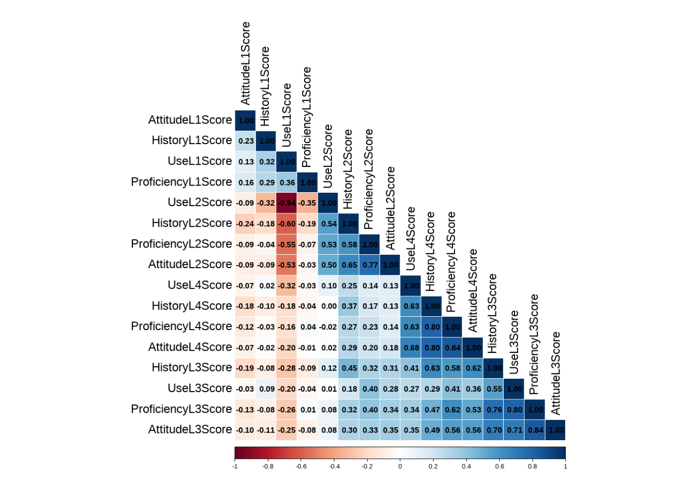
png('exp2_corrPlot_BLP_hclust.png', width=1000, height=1000);
corrplot::corrplot(cor(BLP_scores),type="lower", order="hclust", diag=T, method="color", outline=F, addgrid.col=F, tl.col='black', tl.pos='ld', addCoef.col='black',tl.cex=1.5);
dev.off();png
2 grid.raster(readPNG("exp2_corrPlot_BLP_hclust.png"));
# BLP scores PCA
pca_varimax <- psych::principal(BLP_scores, nfactors=16, rotate='varimax');
pca_varimaxPrincipal Components Analysis
Call: psych::principal(r = BLP_scores, nfactors = 16, rotate = "varimax")
Standardized loadings (pattern matrix) based upon correlation matrix
RC1 RC3 RC2 RC10 RC5 RC6 RC4 RC7 RC9 RC11
HistoryL1Score -0.02 0.01 -0.19 -0.01 0.11 0.97 0.12 -0.03 0.03 -0.01
HistoryL2Score 0.20 0.10 0.39 0.32 -0.13 -0.06 -0.07 0.80 0.04 0.12
HistoryL3Score 0.45 0.49 0.09 0.09 -0.10 -0.03 -0.05 0.17 0.05 0.70
HistoryL4Score 0.86 0.16 0.01 0.01 -0.09 -0.06 -0.03 0.16 0.13 0.16
UseL1Score -0.10 -0.14 -0.92 -0.16 0.04 0.13 0.15 -0.14 -0.14 -0.03
UseL2Score -0.04 -0.04 0.95 0.17 -0.02 -0.12 -0.13 0.12 -0.02 0.03
UseL3Score 0.14 0.95 0.03 0.08 0.01 0.09 -0.04 0.01 0.07 0.01
UseL4Score 0.56 0.12 0.14 0.02 -0.01 0.05 -0.01 0.04 0.80 0.04
ProficiencyL1Score 0.01 -0.01 -0.22 0.03 0.07 0.12 0.96 -0.04 0.00 -0.02
ProficiencyL2Score 0.09 0.26 0.39 0.47 -0.03 0.03 0.01 0.17 -0.01 0.03
ProficiencyL3Score 0.34 0.84 0.08 0.10 -0.05 -0.06 0.05 0.08 0.03 0.21
ProficiencyL4Score 0.89 0.30 0.01 0.01 -0.05 -0.01 0.04 0.05 0.11 0.02
AttitudeL1Score -0.06 -0.03 -0.04 -0.02 0.98 0.11 0.07 -0.07 -0.01 -0.04
AttitudeL2Score 0.05 0.18 0.34 0.87 -0.03 -0.02 0.04 0.22 0.02 0.05
AttitudeL3Score 0.36 0.74 0.06 0.15 -0.03 -0.08 -0.04 0.06 0.04 0.15
AttitudeL4Score 0.90 0.22 0.04 0.08 0.01 0.01 0.00 0.03 0.16 0.12
RC8 RC13 RC12 RC14 RC15 RC16 h2 u2 com
HistoryL1Score 0.01 -0.02 -0.01 0.00 0.00 0.00 1 1.1e-16 1.1
HistoryL2Score 0.13 0.02 0.02 0.00 0.01 0.00 1 8.9e-16 2.3
HistoryL3Score 0.03 0.06 0.03 -0.01 0.01 0.00 1 3.3e-16 2.9
HistoryL4Score 0.02 0.03 0.40 0.00 -0.02 0.00 1 -1.3e-15 1.8
UseL1Score -0.08 -0.01 -0.01 0.01 0.01 0.10 1 1.3e-15 1.4
UseL2Score 0.11 0.01 -0.01 0.01 0.02 0.09 1 8.9e-16 1.2
UseL3Score 0.12 -0.10 0.03 -0.02 -0.18 -0.01 1 2.2e-16 1.2
UseL4Score -0.01 0.01 0.02 0.00 0.00 0.00 1 -6.7e-16 1.9
ProficiencyL1Score 0.00 -0.01 0.00 0.00 0.00 0.00 1 8.9e-16 1.2
ProficiencyL2Score 0.72 0.00 0.00 0.00 0.00 0.00 1 1.1e-16 2.9
ProficiencyL3Score 0.06 0.05 -0.03 0.04 0.30 0.00 1 3.3e-16 1.9
ProficiencyL4Score 0.07 0.01 -0.11 0.27 0.06 0.00 1 -2.2e-16 1.5
AttitudeL1Score -0.01 -0.01 -0.01 0.00 0.00 0.00 1 3.3e-16 1.1
AttitudeL2Score 0.19 0.04 0.00 0.00 0.00 0.00 1 1.1e-16 1.7
AttitudeL3Score 0.00 0.52 0.02 -0.01 0.02 0.00 1 5.6e-16 2.6
AttitudeL4Score 0.00 0.07 -0.14 -0.25 -0.02 0.00 1 -4.4e-16 1.5
RC1 RC3 RC2 RC10 RC5 RC6 RC4 RC7 RC9 RC11 RC8
SS loadings 3.2 2.71 2.29 1.19 1.03 1.02 1.00 0.83 0.73 0.62 0.62
Proportion Var 0.2 0.17 0.14 0.07 0.06 0.06 0.06 0.05 0.05 0.04 0.04
Cumulative Var 0.2 0.37 0.51 0.59 0.65 0.71 0.78 0.83 0.87 0.91 0.95
Proportion Explained 0.2 0.17 0.14 0.07 0.06 0.06 0.06 0.05 0.05 0.04 0.04
Cumulative Proportion 0.2 0.37 0.51 0.59 0.65 0.71 0.78 0.83 0.87 0.91 0.95
RC13 RC12 RC14 RC15 RC16
SS loadings 0.29 0.19 0.14 0.12 0.02
Proportion Var 0.02 0.01 0.01 0.01 0.00
Cumulative Var 0.97 0.98 0.99 1.00 1.00
Proportion Explained 0.02 0.01 0.01 0.01 0.00
Cumulative Proportion 0.97 0.98 0.99 1.00 1.00
Mean item complexity = 1.8
Test of the hypothesis that 16 components are sufficient.
The root mean square of the residuals (RMSR) is 0
with the empirical chi square 0 with prob < NA
Fit based upon off diagonal values = 1data_BLP <- cbind(data_BLP, pca_varimax$scores[,c('RC1','RC3','RC2','RC7','RC9')]);
colnames(data_BLP)[which(names(data_BLP) == "RC1")] <- "RC1_L4";
colnames(data_BLP)[which(names(data_BLP) == "RC3")] <- "RC3_L3";
colnames(data_BLP)[which(names(data_BLP) == "RC2")] <- "RC2_use_L1vsL2";
colnames(data_BLP)[which(names(data_BLP) == "RC7")] <- "RC7_hist_L2";
colnames(data_BLP)[which(names(data_BLP) == "RC9")] <- "RC9_use_L4";# scree plot
scree_data <- data.frame(Component = 1:16,Variance = pca_varimax$values[1:16]);
ggplot(scree_data, aes(x = Component, y = Variance)) +
geom_line(linewidth=1) +
geom_point(size=4) +
labs(title = "Scree Plot", x = "Principal Components", y = "Variance Explained") +
scale_x_discrete(limits=c(seq(from=1,to=16))) +
theme(panel.grid.major = element_blank(), panel.grid.minor = element_blank(),
panel.background = element_blank(), axis.line = element_line(colour = "black"),
axis.text = element_text(family = "CMU Serif", size = 20, color = "black"),
text=element_text(family="CMU Serif",size=20),
legend.background=element_rect(fill=NA));Warning in scale_x_discrete(limits = c(seq(from = 1, to = 16))): Continuous limits supplied to discrete scale.
ℹ Did you mean `limits = factor(...)` or `scale_*_continuous()`?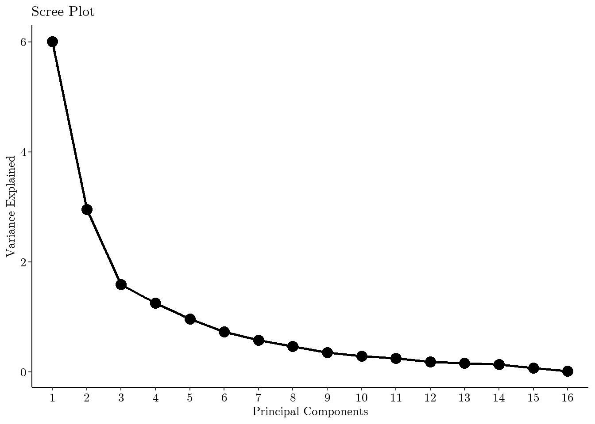
# biplot of 1st 2 PCs
#biplot(pca_varimax, main="Biplot of First Two Principal Components");# loadings plot for 1st 2 PCs
loadings_data <- as.data.frame(pca_varimax$loadings[1:16, ]);
loadings_data$BLP_var <- c("L1 History","L2 History", "L3 History", "L4 History",
"L1 Use","L2 Use","L3 Use","L4 Use",
"L1 Proficiency","L2 Proficiency","L3 Proficiency","L4 Proficiency",
"L1 Attitude","L2 Attitude","L3 Attitude","L4 Attitude");
loadings_data$lang <- c(rep(c("L1","L2","L3","L4"),times=4));
ggplot(loadings_data, aes(x=RC1, y=RC3)) +
geom_point(size=4,colour=c(rep(c(cols2[100],cols2[310],cols2[200],cols2[285]),times=4))) +
geom_text_repel(aes(label=rownames(loadings_data)),vjust=2,family="CMU Serif",
position=position_dodge(width=0.01),force=2,size=10,
colour=c(rep(c(cols2[100],cols2[310],cols2[200],cols2[285]),times=4))) +
labs(title="PCA Loadings Plot (PC1 vs PC3)",x="PC1 (L4)",y="PC3 (L3)") +
theme(panel.grid.major = element_blank(), panel.grid.minor = element_blank(),
panel.background = element_blank(), axis.line = element_line(colour = "black"),
axis.text = element_text(family = "CMU Serif", size = 20, color = "black"),
text=element_text(family="CMU Serif",size=20),legend.position="none",
legend.background=element_rect(fill=NA));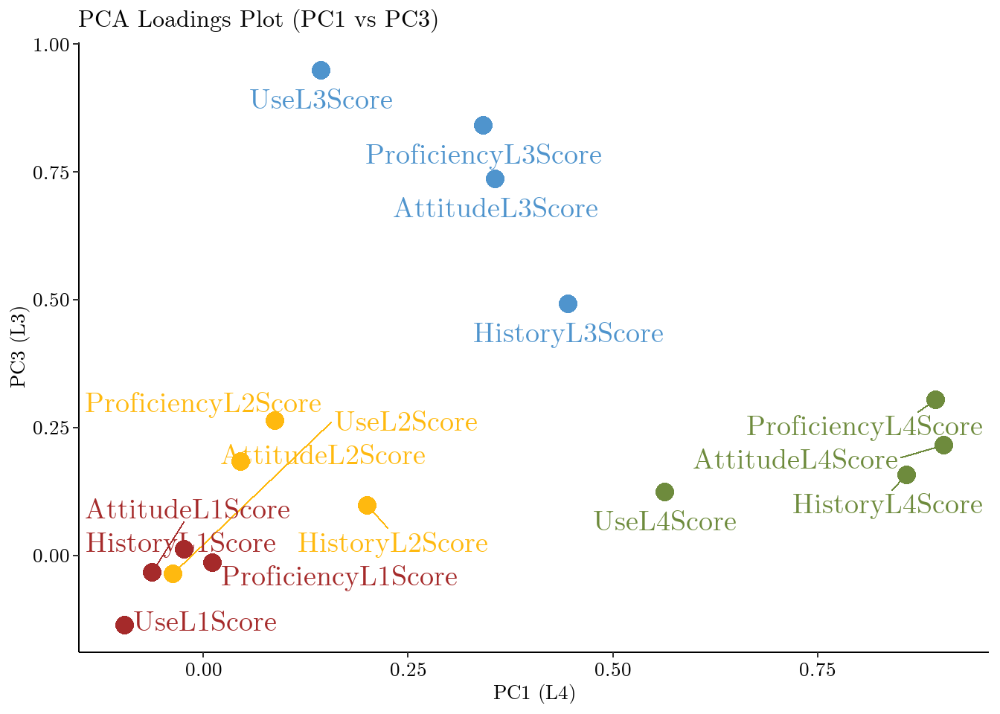
# PC1
ggplot(loadings_data, aes(x=BLP_var, y=RC1, fill=lang)) +
geom_bar(stat="identity") +
geom_hline(yintercept=0) +
scale_fill_manual(values=c("L1"=cols2[100],"L2"=cols2[310],"L3"=cols2[200],"L4"=cols2[285]),
name="") +
labs(title="PCA Loadings Plot (PC1 - L4)",y="PC1 loading",x="BLP variables") +
theme(panel.grid.major = element_blank(), panel.grid.minor = element_blank(),
panel.background = element_blank(), axis.line = element_line(colour = "black"),
axis.text = element_text(family = "CMU Serif", size = 20, color = "black"),
text=element_text(family="CMU Serif",size=20),axis.text.x=element_text(angle=45,vjust=1,hjust=1),
legend.position=c(0.05,0.9),legend.background=element_rect(fill=NA));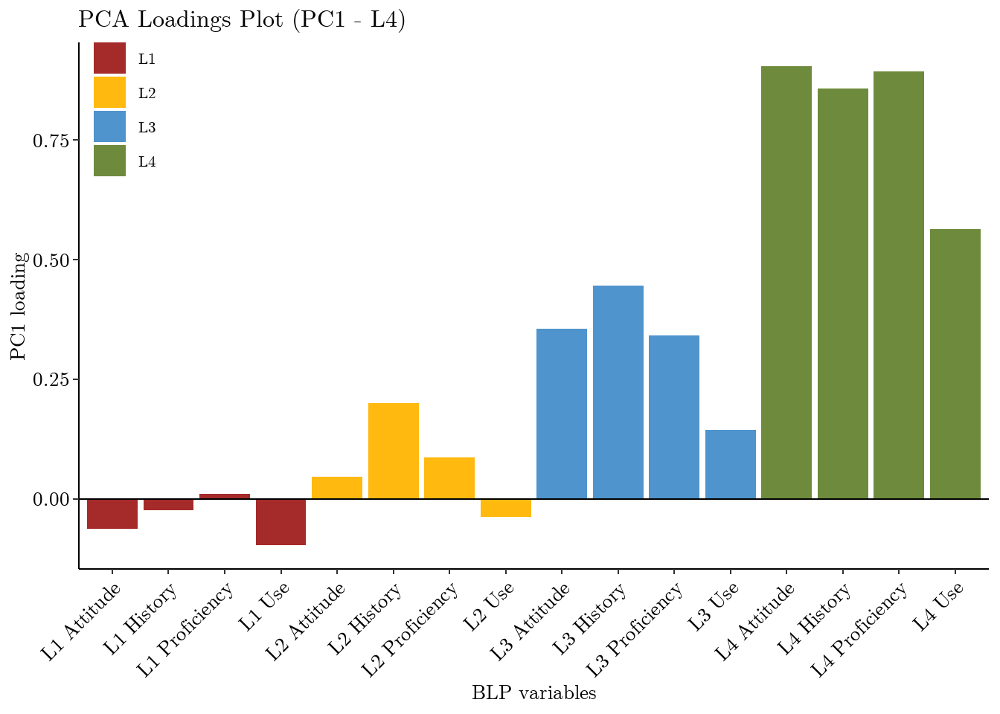
# PC3
ggplot(loadings_data, aes(x=BLP_var, y=RC3, fill=lang)) +
geom_bar(stat="identity") +
geom_hline(yintercept=0) +
scale_fill_manual(values=c("L1"=cols2[100],"L2"=cols2[310],"L3"=cols2[200],"L4"=cols2[285]),
name="") +
labs(title="PCA Loadings Plot (PC3 - L3)",y="PC3 loading",x="BLP variables") +
theme(panel.grid.major = element_blank(), panel.grid.minor = element_blank(),
panel.background = element_blank(), axis.line = element_line(colour = "black"),
axis.text = element_text(family = "CMU Serif", size = 20, color = "black"),
text=element_text(family="CMU Serif",size=20),axis.text.x=element_text(angle=45,vjust=1,hjust=1),
legend.position=c(0.05,0.9),legend.background=element_rect(fill=NA));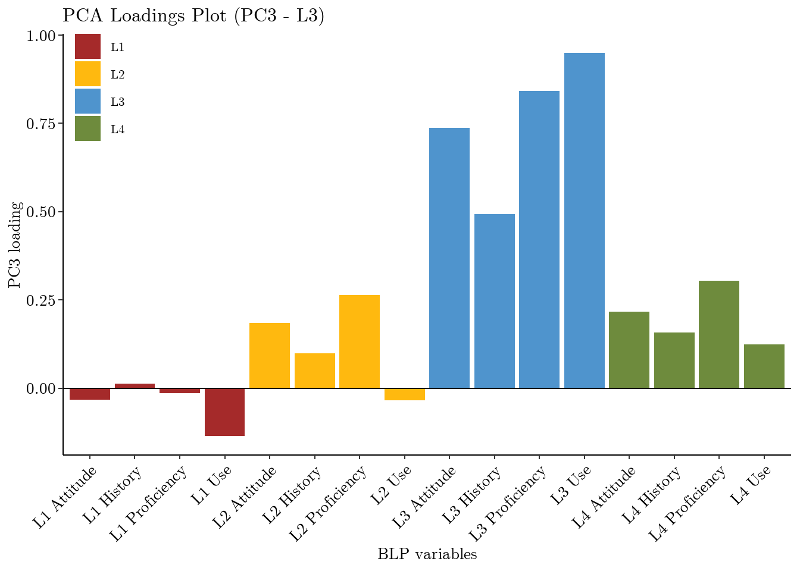
# PC2
ggplot(loadings_data, aes(x=BLP_var, y=RC2, fill=lang)) +
geom_bar(stat="identity") +
geom_hline(yintercept=0) +
scale_fill_manual(values=c("L1"=cols2[100],"L2"=cols2[310],"L3"=cols2[200],"L4"=cols2[285]),
name="") +
labs(title="PCA Loadings Plot (PC2 - L1 Use vs L2 Use)",y="PC2 loading",x="BLP variables") +
theme(panel.grid.major = element_blank(), panel.grid.minor = element_blank(),
panel.background = element_blank(), axis.line = element_line(colour = "black"),
axis.text = element_text(family = "CMU Serif", size = 20, color = "black"),
text=element_text(family="CMU Serif",size=20),axis.text.x=element_text(angle=45,vjust=1,hjust=1),
legend.position=c(0.05,0.9),legend.background=element_rect(fill=NA));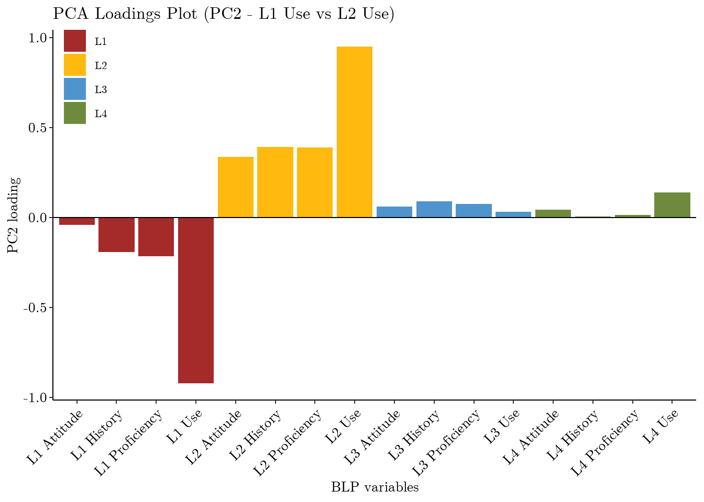
# PC7
ggplot(loadings_data, aes(x=BLP_var, y=RC7, fill=lang)) +
geom_bar(stat="identity") +
geom_hline(yintercept=0) +
scale_fill_manual(values=c("L1"=cols2[100],"L2"=cols2[310],"L3"=cols2[200],"L4"=cols2[285]),
name="") +
labs(title="PCA Loadings Plot (PC7 - L2 History)",y="PC7 loading",x="BLP variables") +
theme(panel.grid.major = element_blank(), panel.grid.minor = element_blank(),
panel.background = element_blank(), axis.line = element_line(colour = "black"),
axis.text = element_text(family = "CMU Serif", size = 20, color = "black"),
text=element_text(family="CMU Serif",size=20),axis.text.x=element_text(angle=45,vjust=1,hjust=1),
legend.position=c(0.05,0.9),legend.background=element_rect(fill=NA));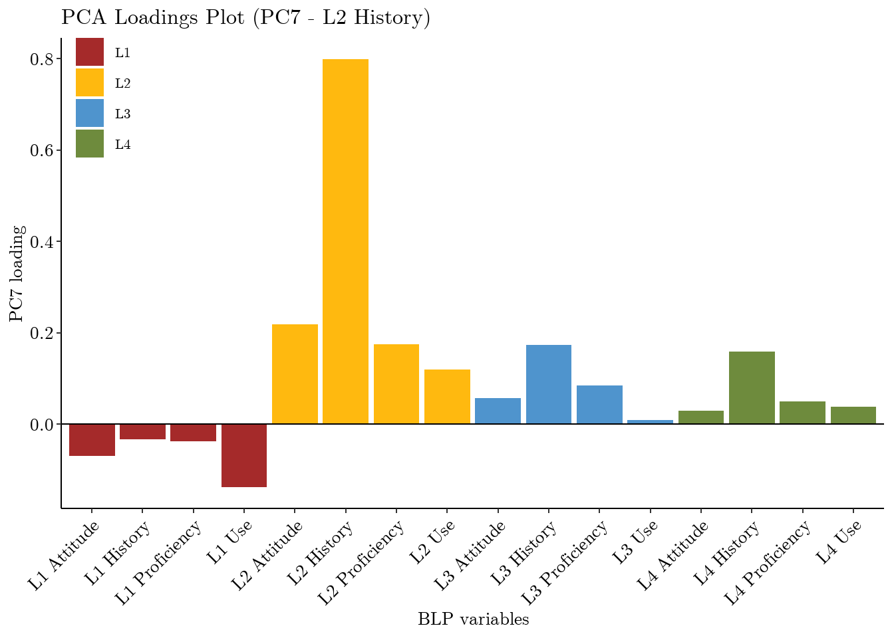
# PC9
ggplot(loadings_data, aes(x=BLP_var, y=RC9, fill=lang)) +
geom_bar(stat="identity") +
geom_hline(yintercept=0) +
scale_fill_manual(values=c("L1"=cols2[100],"L2"=cols2[310],"L3"=cols2[200],"L4"=cols2[285]),
name="") +
labs(title="PCA Loadings Plot (PC9 - L4 Use)",y="PC9 loading",x="BLP variables") +
theme(panel.grid.major = element_blank(), panel.grid.minor = element_blank(),
panel.background = element_blank(), axis.line = element_line(colour = "black"),
axis.text = element_text(family = "CMU Serif", size = 20, color = "black"),
text=element_text(family="CMU Serif",size=20),axis.text.x=element_text(angle=45,vjust=1,hjust=1),
legend.position=c(0.05,0.9),legend.background=element_rect(fill=NA));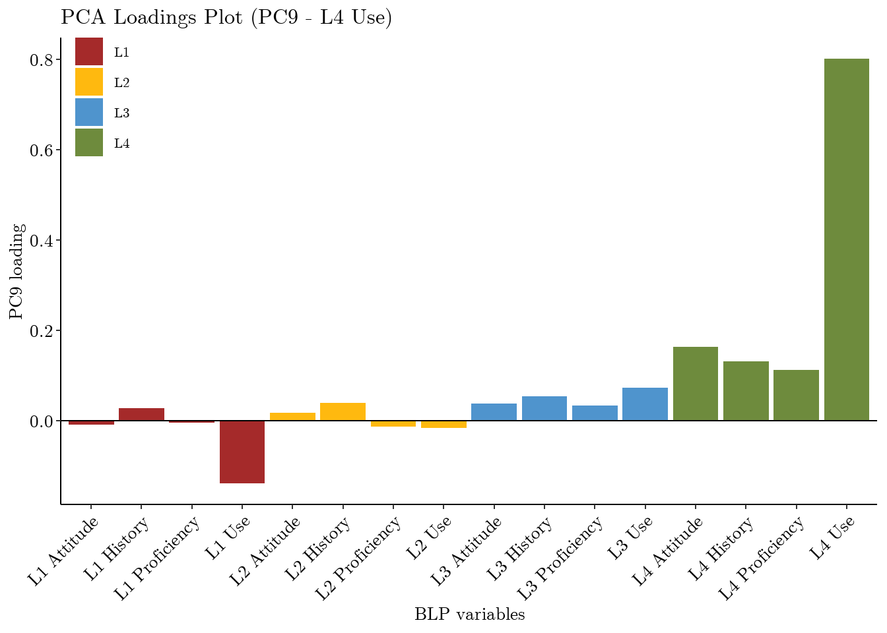
# Cluster plot of 1st 2 PCs} cluster_data <- data.frame(pca_varimax$scores[, 1:2]); colnames(cluster_data) <- c("PC1", "PC2"); ggplot(cluster_data, aes(x = PC1, y = PC2)) + geom_point() + labs(title = "PCA Cluster Plot (First Two PCs)", x = "Principal Component 1", y = "Principal Component 2") + theme_minimal();multilingual_metrics <- data.frame();
for (i in 1:184) {
temp <- scores_list[which(scores_list$sbj_ID==unique(scores_list$sbj_ID)[i]),];
sbj_ID <- temp$sbj_ID[1];
temp_scores <- as.list(temp);
temp_scores <- temp_scores[-1];
temp_scores <- unlist(temp_scores);
use_temp <- use_scores_list[which(use_scores_list$sbj_ID==unique(use_scores_list$sbj_ID)[i]),];
use_temp_scores <- as.list(use_temp);
use_temp_scores <- use_temp_scores[-1];
use_temp_scores <- unlist(use_temp_scores);
# variance
variance <- var(temp_scores,na.rm=TRUE);
# entropy
entropy <- Entropy(temp_scores,na.rm=TRUE);
use_entropy <- Entropy(use_temp_scores,na.rm=TRUE);
# multilingual experience
multiexp <- sum(temp_scores);
# L1 - L2 score
L1L2 <- abs(temp_scores[[1]]-temp_scores[[2]]);
multilingual_metrics <- rbind(multilingual_metrics,
list(sbj_ID,variance,entropy,use_entropy,multiexp,L1L2));
};
names(multilingual_metrics) <- c("sbj_ID","var","ent","use_ent","multiexp","L1_L2_diff");
data_BLP <- merge(data_BLP,multilingual_metrics,by="sbj_ID");cossim <- read.csv("distances_exp2_NOLOWSCORES.csv",header=T,sep=",");
cossim <- subset(cossim, select = -c(X)); # remove redundant column added by Python
names(cossim) <- c('sbj_ID','cossim');
data_BLP <- merge(data_BLP,cossim,by="sbj_ID");
use_cossim <- read.csv("distances_exp2_usescores.csv",header=T,sep=",");
use_cossim <- subset(use_cossim, select = -c(X)); # remove redundant column added by Python
names(use_cossim) <- c('sbj_ID','use_cossim');
data_BLP <- merge(data_BLP,use_cossim,by="sbj_ID");data_BLP$category <- "mono";
data_BLP$category[data_BLP$L2Score>0] <- "bi";
data_BLP$category[data_BLP$L3Score>0] <- "tri";
data_BLP$category[data_BLP$L4Score>0] <- "quadri";
data_BLP$category <- factor(data_BLP$category,levels=c("mono","bi","tri","quadri"));
summary(data_BLP$category); mono bi tri quadri
22 70 51 41 diff_script_sbjID <- c('5e8b85a61e16e9057a996e36','60c715c89bb47f3847a690f0','655f8b959477c803eb906622','65a97afe116a650acc588c5b','65cba84263ac644fa79702ca','65fae6b84fa6b3101d2ca4b1','66031000461c44484ac359a8','66271b4aaaf60fd058302f09','6667488c5f46f3da0c085419','667972671949d2e1c0c9ff54');
# n=10
mixed_script_sbjID <- c('5ebd8f8679146d0a116bc257','5eff8b9ad19111064484eff7','5f5a5d4618746310515e2828','6057a8fe2d302939fc759940','60907b8091341e8724ba80ed','60f9739250a5c6f6e4726336','6106ac34408681f3b0d07396','61242dd5be1a06b174975a1f','6492c23a1a7735dfaab2b095','64e9d6f596308448ac67bb95','650330fa0cbc534b423f41e9','65352001dbe3e18eae5a8300','65672c69a3737224f1d0bbfa','65a97217d4fb858939a16b0f','65dce7715387badaf80e875d','660c265dce47171c0dd7d359','663a5bb8f7f79c7e04abc9b3','668992b2f868cb89829346c2');
# n=18
sbj_IDs_included <- list(unique(data_BLP$sbj_ID))[[1]];
same_script_sbjID <- sbj_IDs_included[!sbj_IDs_included %in% diff_script_sbjID];
same_script_sbjID <- same_script_sbjID[!same_script_sbjID %in% mixed_script_sbjID];
# n=156
data_BLP$script[data_BLP$sbj_ID %in% diff_script_sbjID] <- 'mixed/diff';
data_BLP$script[data_BLP$sbj_ID %in% mixed_script_sbjID] <- 'mixed/diff';
data_BLP$script[data_BLP$sbj_ID %in% same_script_sbjID] <- 'same';
data_BLP$script <- factor(data_BLP$script,levels=c("same","mixed/diff"));#var
summary(data_BLP$var); Min. 1st Qu. Median Mean 3rd Qu. Max.
378.7 6402.1 8261.6 7726.3 9727.9 11874.5 var(data_BLP$var);[1] 7898408#ent
summary(data_BLP$ent); Min. 1st Qu. Median Mean 3rd Qu. Max.
0.000 0.930 1.118 1.165 1.542 1.991 var(data_BLP$ent);[1] 0.3093324cor.test(data_BLP$var,data_BLP$ent,method="pearson");
Pearson's product-moment correlation
data: data_BLP$var and data_BLP$ent
t = -20.294, df = 182, p-value < 2.2e-16
alternative hypothesis: true correlation is not equal to 0
95 percent confidence interval:
-0.8723484 -0.7823719
sample estimates:
cor
-0.8327799 # significantly very strongly negatively correlated
ggplot(data_BLP, aes(x=sbj_ID,y=ent,colour=category)) +
geom_point(size=4) +
labs(x = "Participant ID", y = "Multilingual balance (entropy)") +
theme(panel.grid.major = element_blank(), panel.grid.minor = element_blank(),
panel.background = element_blank(), axis.line = element_line(colour = "black"),
axis.text = element_text(family = "CMU Serif", size = 20, color = "black"),
axis.text.x=element_blank(),
text=element_text(family="CMU Serif",size=20),
legend.position=c(0.15,0.25),legend.background=element_rect(fill=NA)) +
scale_color_manual(values=c(cols2[100],cols2[150],cols2[200],cols2[250]),
name="Category",
labels=c("Monolingual","Bilingual","Trilingual","Quadrilingual"));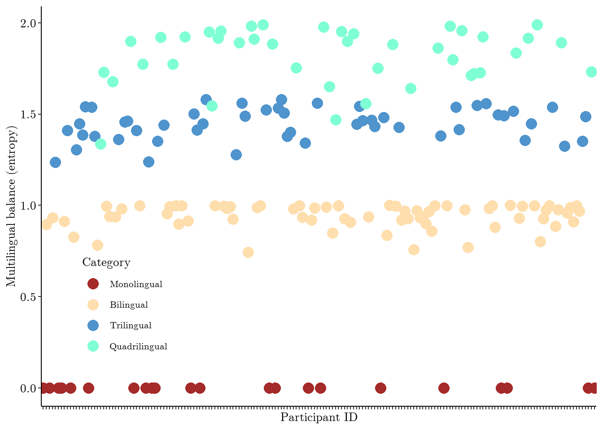
hist(data_BLP$ent,breaks=1000,xlab="Multilingual balance (entropy)",
main="",cex.lab=2,cex.axis=1.5);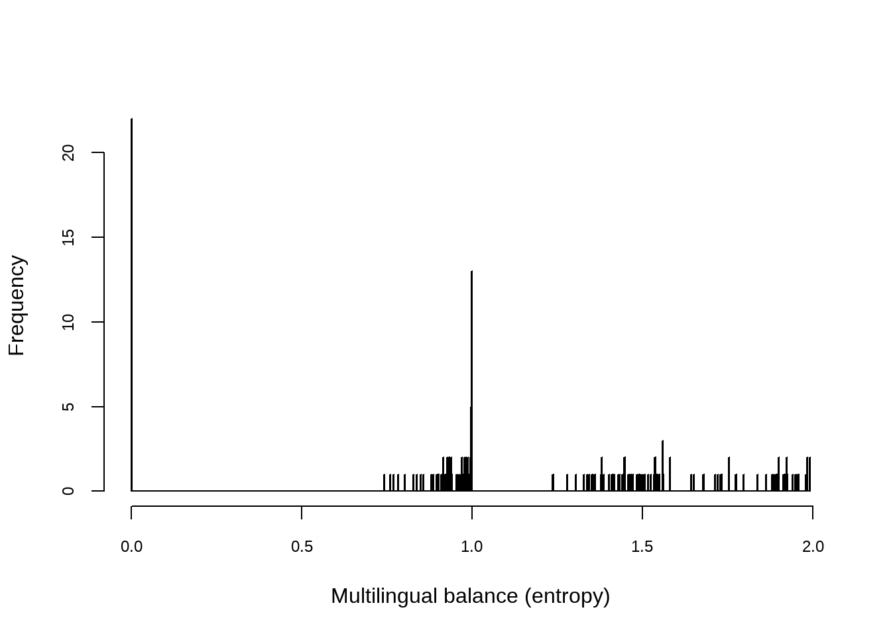
# lots at 0 and 1#use_ent
summary(data_BLP$use_ent); Min. 1st Qu. Median Mean 3rd Qu. Max.
0.0000 0.4022 0.9427 0.8761 1.2670 1.9229 var(data_BLP$use_ent);[1] 0.2575335#multiexp
summary(data_BLP$multiexp); Min. 1st Qu. Median Mean 3rd Qu. Max.
153.9 303.2 346.3 361.2 412.9 701.9 var(data_BLP$multiexp);[1] 9347.634#L1_L2_diff
summary(data_BLP$L1_L2_diff); Min. 1st Qu. Median Mean 3rd Qu. Max.
0.00 37.99 69.97 82.29 110.39 217.94 var(data_BLP$L1_L2_diff);[1] 3686.283#cossim
summary(data_BLP$cossim); Min. 1st Qu. Median Mean 3rd Qu. Max.
0.8402 0.9349 0.9659 0.9593 0.9960 1.0000 var(data_BLP$cossim);[1] 0.001427596ggplot(data_BLP, aes(x=sbj_ID,y=cossim,colour=category)) +
geom_point(size=4) +
labs(x = "Participant ID", y = "Multilingual balance (cosine similarity)") +
theme(panel.grid.major = element_blank(), panel.grid.minor = element_blank(),
panel.background = element_blank(), axis.line = element_line(colour = "black"),
axis.text = element_text(family = "CMU Serif", size = 20, color = "black"),
axis.text.x=element_blank(),
text=element_text(family="CMU Serif",size=20),
legend.position=c(0.15,0.15),legend.background=element_rect(fill=NA)) +
scale_color_manual(values=c(cols2[100],cols2[150],cols2[200],cols2[250]),
name="Category",
labels=c("Monolingual","Bilingual","Trilingual","Quadrilingual"));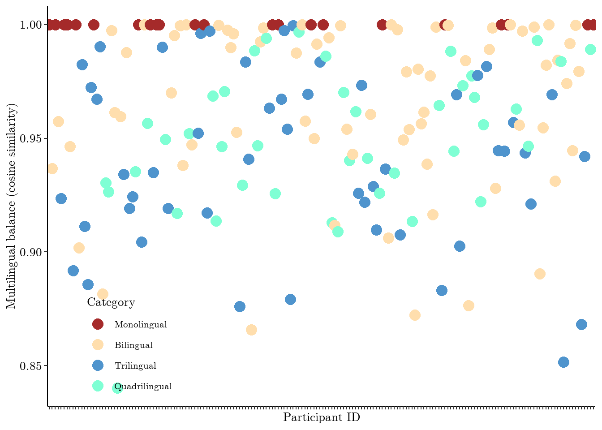
hist(data_BLP$cossim,breaks=1000,
xlab="Multilingual balance (cosine similarity)",main="",
cex.lab=2,cex.axis=1.5);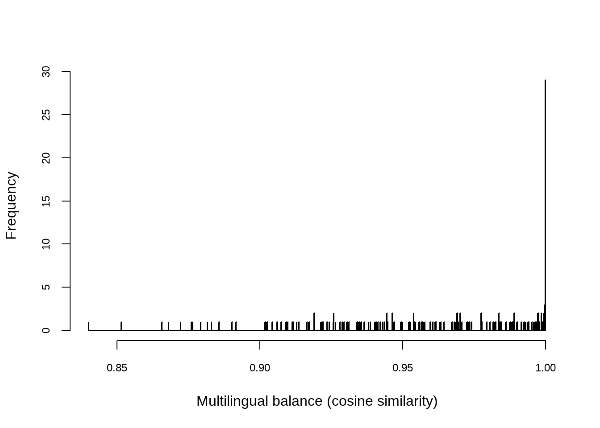
# lots at 1
hist(data_BLP$cossim[data_BLP$category!="mono"],breaks=1000,
xlab="Multilingual balance (cosine similarity)",main="",
cex.lab=2,cex.axis=1.5);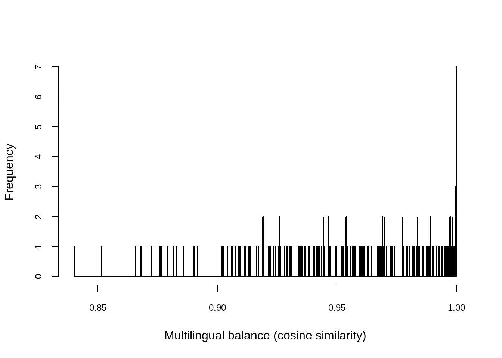
# exponential distributionggplot(data_BLP, aes(x=cossim,y=ent,colour=category)) +
geom_point(size=4) +
labs(x = "Multilingual balance (cosine similarity)", y = "Multilingual balance (entropy)") +
theme(panel.grid.major = element_blank(), panel.grid.minor = element_blank(),
panel.background = element_blank(), axis.line = element_line(colour = "black"),
axis.text = element_text(family = "CMU Serif", size = 20, color = "black"),
text=element_text(family="CMU Serif",size=20),
legend.position=c(0.17,0.2),legend.background=element_rect(fill=NA)) +
scale_color_manual(values=c(cols2[100],cols2[150],cols2[200],cols2[250]),
name="Category",
labels=c("Monolingual (n=22)","Bilingual (n=70)",
"Trilingual (n=51)","Quadrilingual (n=41)"));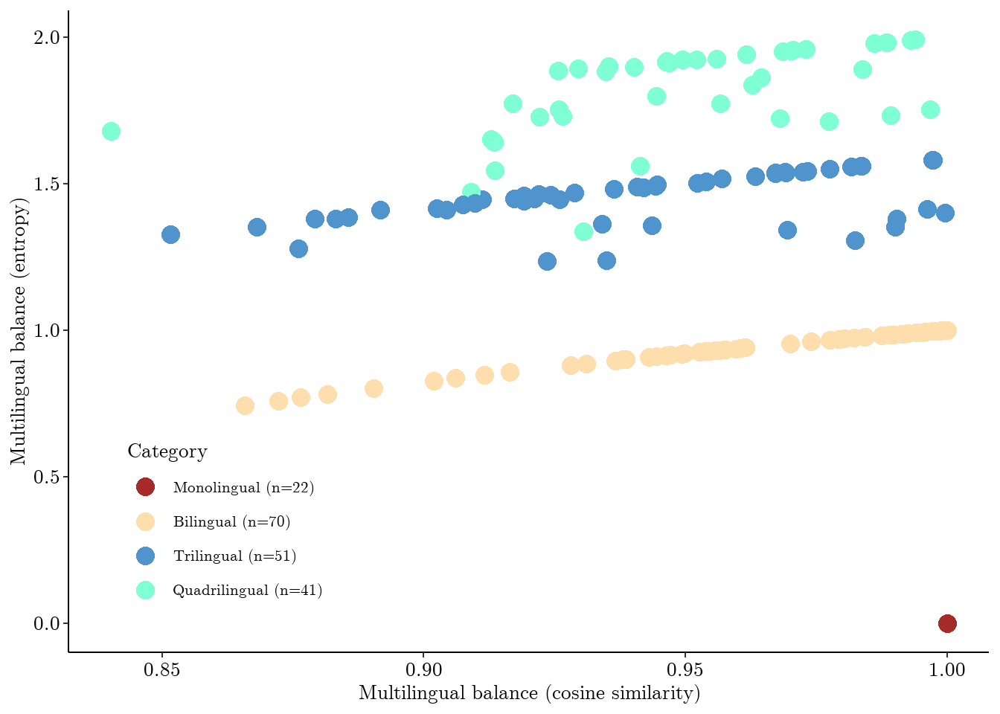
#use_cossim
summary(data_BLP$use_cossim); Min. 1st Qu. Median Mean 3rd Qu. Max.
0.6258 0.7637 0.8484 0.8557 0.9547 1.0000 var(data_BLP$use_cossim);[1] 0.01106089# cossim & use_cossim
cor.test(data_BLP$cossim,data_BLP$use_cossim,method="pearson");
Pearson's product-moment correlation
data: data_BLP$cossim and data_BLP$use_cossim
t = 10.764, df = 182, p-value < 2.2e-16
alternative hypothesis: true correlation is not equal to 0
95 percent confidence interval:
0.5265440 0.7047709
sample estimates:
cor
0.6236977 # significantly strongly positively correlated#ent & multiexp
cor.test(data_BLP$ent,data_BLP$multiexp,method="pearson");
Pearson's product-moment correlation
data: data_BLP$ent and data_BLP$multiexp
t = 30.175, df = 182, p-value < 2.2e-16
alternative hypothesis: true correlation is not equal to 0
95 percent confidence interval:
0.8851475 0.9342010
sample estimates:
cor
0.9129133 # significantly very strongly positively correlated
ggplot(data_BLP, aes(x=cossim,y=multiexp)) +
geom_point(size=4) +
labs(y = "Multilingual experience", x = "Multilingual balance (cosine similarity)") +
theme(panel.grid.major = element_blank(), panel.grid.minor = element_blank(),
panel.background = element_blank(), axis.line = element_line(colour = "black"),
axis.text = element_text(family = "CMU Serif", size = 20, color = "black"),
text=element_text(family="CMU Serif",size=20),
legend.position=c(0.17,0.8),legend.background=element_rect(fill=NA));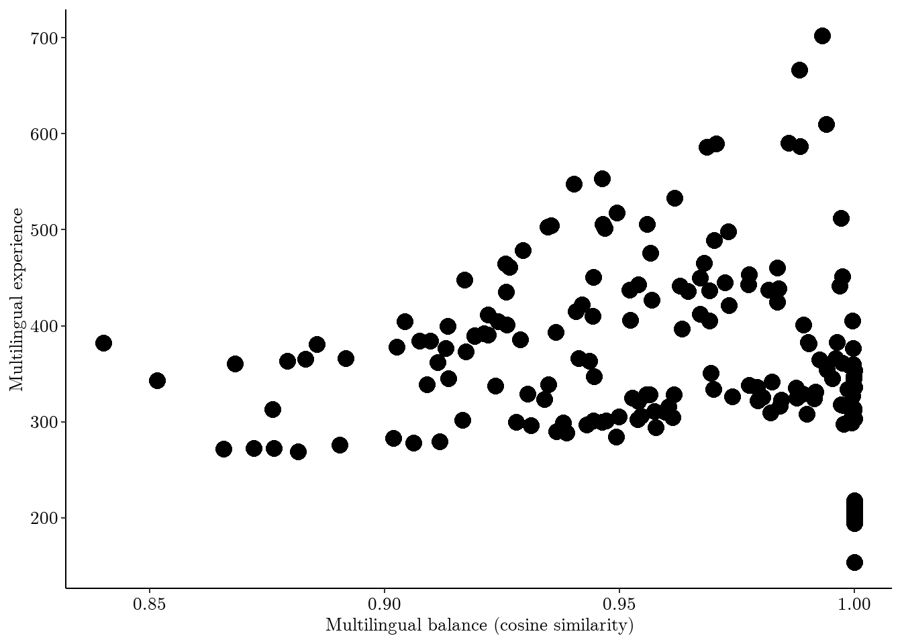
ggplot(data_BLP, aes(x=ent,y=multiexp)) +
geom_point(size=4) +
labs(y = "Multilingual experience", x = "Multilingual balance (entropy)") +
theme(panel.grid.major = element_blank(), panel.grid.minor = element_blank(),
panel.background = element_blank(), axis.line = element_line(colour = "black"),
axis.text = element_text(family = "CMU Serif", size = 20, color = "black"),
text=element_text(family="CMU Serif",size=20),
legend.position=c(0.17,0.8),legend.background=element_rect(fill=NA));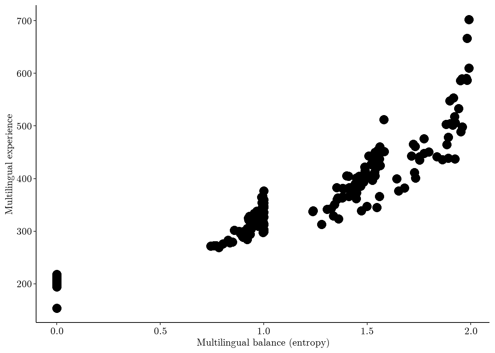
#cossim & multiexp
cor.test(data_BLP$cossim,data_BLP$multiexp,method="pearson");
Pearson's product-moment correlation
data: data_BLP$cossim and data_BLP$multiexp
t = -1.617, df = 182, p-value = 0.1076
alternative hypothesis: true correlation is not equal to 0
95 percent confidence interval:
-0.25920922 0.02609954
sample estimates:
cor
-0.1190108 # not significant
ggplot(data_BLP, aes(x=cossim,y=multiexp,colour=category)) +
geom_point(size=4) +
labs(y = "Multilingual experience", x = "Multilingual balance (entropy)") +
theme(panel.grid.major = element_blank(), panel.grid.minor = element_blank(),
panel.background = element_blank(), axis.line = element_line(colour = "black"),
axis.text = element_text(family = "CMU Serif", size = 20, color = "black"),
text=element_text(family="CMU Serif",size=20),
legend.position=c(0.17,0.8),legend.background=element_rect(fill=NA)) +
scale_color_manual(values=c(cols2[100],cols2[150],cols2[200],cols2[250]),
name="Category",
labels=c("Monolingual (n=22)","Bilingual (n=70)",
"Trilingual (n=51)","Quadrilingual (n=41)"));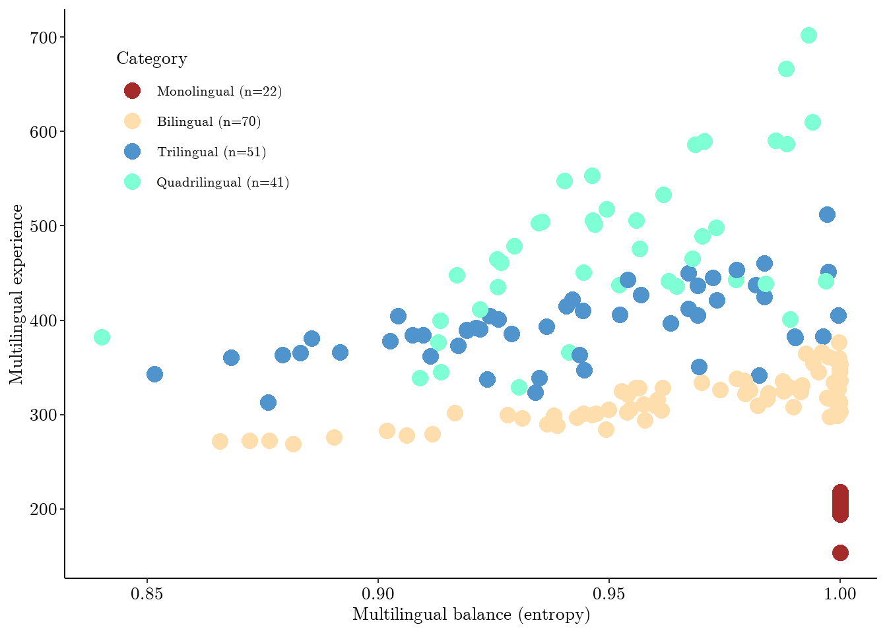
#cossim & ent
cor.test(data_BLP$cossim,data_BLP$ent,method="pearson");
Pearson's product-moment correlation
data: data_BLP$cossim and data_BLP$ent
t = -4.8513, df = 182, p-value = 2.625e-06
alternative hypothesis: true correlation is not equal to 0
95 percent confidence interval:
-0.4605072 -0.2036992
sample estimates:
cor
-0.3383888 # no monos:
cor.test(data_BLP$cossim[data_BLP$category!="mono"],data_BLP$ent[data_BLP$category!="mono"],method="pearson");
Pearson's product-moment correlation
data: data_BLP$cossim[data_BLP$category != "mono"] and data_BLP$ent[data_BLP$category != "mono"]
t = -0.66071, df = 160, p-value = 0.5097
alternative hypothesis: true correlation is not equal to 0
95 percent confidence interval:
-0.2047118 0.1028599
sample estimates:
cor
-0.05216291 # no corr#ent & use_ent
cor.test(data_BLP$ent,data_BLP$use_ent,method="pearson");
Pearson's product-moment correlation
data: data_BLP$ent and data_BLP$use_ent
t = 24.096, df = 182, p-value < 2.2e-16
alternative hypothesis: true correlation is not equal to 0
95 percent confidence interval:
0.8330447 0.9032087
sample estimates:
cor
0.8725549 # significantly strongly positively correlated# correlations of multilingual metrics
M <- cor(subset(data_BLP,select=c('var','ent','use_ent','multiexp','L1_L2_diff','cossim','use_cossim')));
png('exp2_corrPlot_multimetrics.png', width=1000, height=1000);
corrplot::corrplot(M,type="lower", order="original", diag=T, method="color", outline=F, addgrid.col=F, tl.col='black', tl.pos='ld', addCoef.col='black',number.cex=1.5,tl.cex=1.5);
dev.off();png
2 grid.raster(readPNG("exp2_corrPlot_multimetrics.png"));
png('exp2_corrPlot_multimetrics_hclust.png', width=1000, height=1000);
corrplot::corrplot(M,type="lower", order="hclust", diag=T, method="color", outline=F, addgrid.col=F, tl.col='black', tl.pos='ld', addCoef.col='black', number.cex=1.5,tl.cex=1.5);
dev.off();png
2 grid.raster(readPNG("exp2_corrPlot_multimetrics_hclust.png"));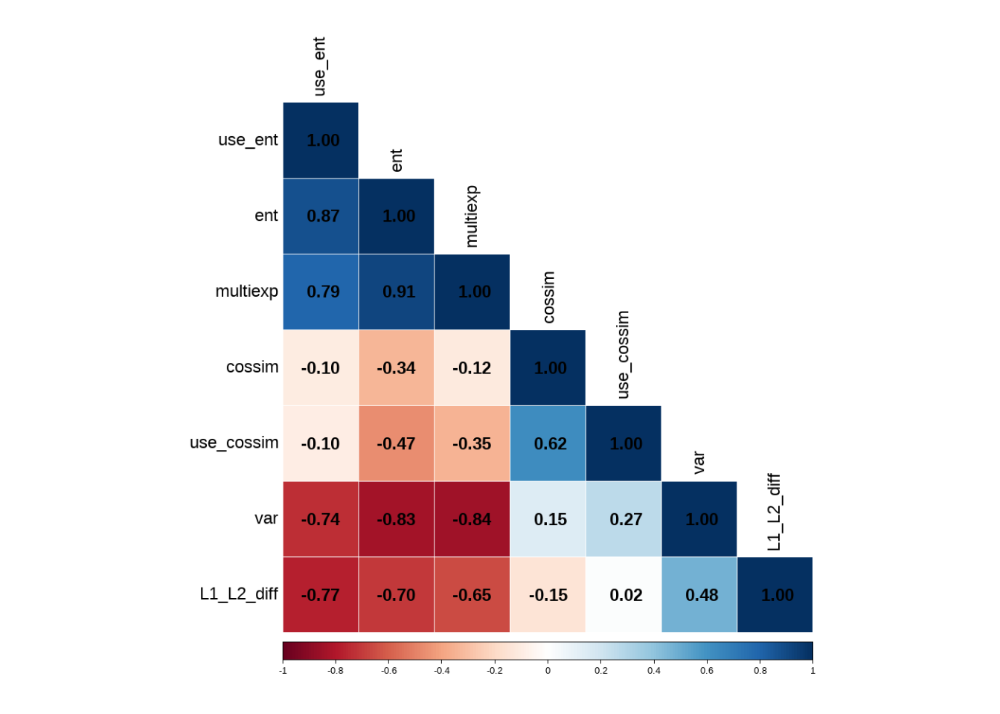
# export BLP dataframe
write.csv(data_BLP,"BASL_exp2_BLP.csv", row.names = FALSE);# combining BLP & testing scores
data_BLP_shortened <- subset(data_BLP, select=c(sbj_ID,Gender,Age,
HistoryL1Score,HistoryL2Score,HistoryL3Score,HistoryL4Score,
UseL1Score,UseL2Score,UseL3Score,UseL4Score,
ProficiencyL1Score,ProficiencyL2Score,ProficiencyL3Score,ProficiencyL4Score,
AttitudeL1Score,AttitudeL2Score,AttitudeL3Score,AttitudeL4Score,
L1Score,L2Score,L3Score,L4Score,
var,ent,use_ent,multiexp,L1_L2_diff,cossim,use_cossim,
RC1_L4,RC3_L3,RC2_use_L1vsL2,RC7_hist_L2,RC9_use_L4,
category,script));
data_BLP_testing <- list(data_testing,data_BLP_shortened) %>% reduce(inner_join, by='sbj_ID');
data_BLP_familiarity <- list(data_familiarity,data_BLP_shortened) %>% reduce(inner_join, by='sbj_ID');# correlations of BLP metrics with testing scores
M <- cor(subset(data_BLP_testing,select=c(score_2M,dprime,c,
var,ent,use_ent,multiexp,L1_L2_diff,cossim,use_cossim,
RC1_L4,RC3_L3,RC2_use_L1vsL2,RC7_hist_L2,RC9_use_L4)));
png('exp2_corrPlot_BLP_testing.png', width=1000, height=1000);
corrplot::corrplot(M,type="lower", order="original", diag=T, method="color", outline=F, addgrid.col=F, tl.col='black', tl.pos='ld', addCoef.col='black',tl.cex=1.5);
dev.off();png
2 grid.raster(readPNG("exp2_corrPlot_BLP_testing.png"));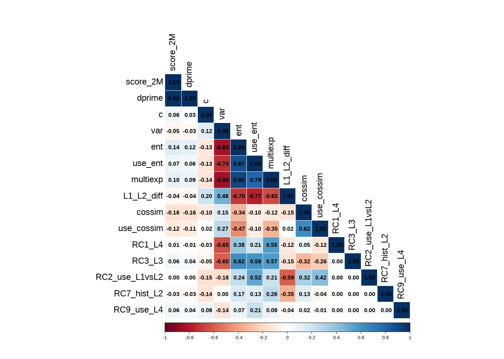
png('exp2_corrPlot_BLP_testing_hclust.png', width=1000, height=1000);
corrplot::corrplot(M,type="lower", order="hclust", diag=T, method="color", outline=F, addgrid.col=F, tl.col='black', tl.pos='ld', addCoef.col='black',tl.cex=1.5);
dev.off();png
2 grid.raster(readPNG("exp2_corrPlot_BLP_testing_hclust.png"));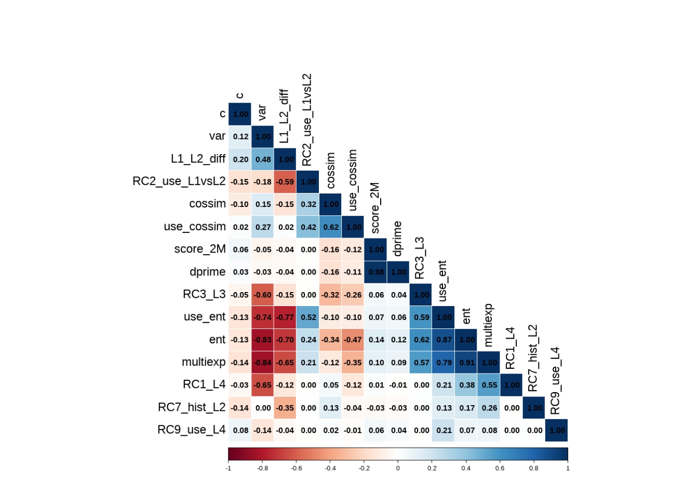
# export BLP testing dataframe
write.csv(data_BLP_testing,"BASL_exp2_BLPtesting.csv", row.names = FALSE);lm_TestingConditions <- glmer(observed ~ scale(trialn) + testing_condition + (1+testing_condition|sbj_ID), data=subset(data_BLP_testing, rt>300 & rt<3000), family='binomial');
summary(lm_TestingConditions);Generalized linear mixed model fit by maximum likelihood (Laplace
Approximation) [glmerMod]
Family: binomial ( logit )
Formula:
observed ~ scale(trialn) + testing_condition + (1 + testing_condition |
sbj_ID)
Data: subset(data_BLP_testing, rt > 300 & rt < 3000)
AIC BIC logLik -2*log(L) df.resid
26497.5 26576.7 -13238.7 26477.5 20243
Scaled residuals:
Min 1Q Median 3Q Max
-2.9217 -1.0280 0.5827 0.8396 2.3607
Random effects:
Groups Name Variance Std.Dev. Corr
sbj_ID (Intercept) 0.3713 0.6093
testing_condition1M 0.1039 0.3223 -0.61
testing_condition2M 0.2160 0.4647 -0.46 0.95
Number of obs: 20253, groups: sbj_ID, 184
Fixed effects:
Estimate Std. Error z value Pr(>|z|)
(Intercept) 0.09041 0.05181 1.745 0.081 .
scale(trialn) -0.08256 0.01486 -5.557 2.74e-08 ***
testing_condition1M 0.25155 0.04304 5.845 5.08e-09 ***
testing_condition2M 0.54632 0.05036 10.848 < 2e-16 ***
---
Signif. codes: 0 '***' 0.001 '**' 0.01 '*' 0.05 '.' 0.1 ' ' 1
Correlation of Fixed Effects:
(Intr) scl(t) tst_1M
scale(trln) 0.013
tstng_cnd1M -0.583 -0.015
tstng_cnd2M -0.524 -0.019 0.663effect_conditions <- as.data.frame(effect('testing_condition',
lm_TestingConditions, confint=list(alpha=.95)),
xlevels = list(testing_condition=c('0M','1M','2M')));Warning in Analyze.model(focal.predictors, mod, xlevels, default.levels, : the
predictor scale(trialn) is a one-column matrix that was converted to a vectoreffect_conditions testing_condition fit se lower upper
1 0M 0.5225872 0.01292601 0.4972162 0.5478421
2 1M 0.5846657 0.01068693 0.5635788 0.6054471
3 2M 0.6540149 0.01128012 0.6315866 0.6757787export_output(model=lm_TestingConditions,name="Exp. 2 `Yes' responses - Conditions",
pred_levels=c('0M','1M','2M'),pred_type='categorical',
outcome_levels=c('0M','1M','2M'));Warning: the 'findbars' function has moved to the reformulas package. Please update your imports, or ask an upstream package maintainer to do so.
This warning is displayed once per session.lm_Gender <- glmer(observed ~ scale(trialn) + testing_condition*Gender + (1+testing_condition|sbj_ID), data=subset(data_BLP_testing, rt>300 & rt<3000), family='binomial');
summary(lm_Gender);Generalized linear mixed model fit by maximum likelihood (Laplace
Approximation) [glmerMod]
Family: binomial ( logit )
Formula: observed ~ scale(trialn) + testing_condition * Gender + (1 +
testing_condition | sbj_ID)
Data: subset(data_BLP_testing, rt > 300 & rt < 3000)
AIC BIC logLik -2*log(L) df.resid
26496.4 26599.3 -13235.2 26470.4 20240
Scaled residuals:
Min 1Q Median 3Q Max
-2.9315 -1.0273 0.5812 0.8397 2.3381
Random effects:
Groups Name Variance Std.Dev. Corr
sbj_ID (Intercept) 0.37090 0.6090
testing_condition1M 0.09727 0.3119 -0.63
testing_condition2M 0.21226 0.4607 -0.47 0.96
Number of obs: 20253, groups: sbj_ID, 184
Fixed effects:
Estimate Std. Error z value Pr(>|z|)
(Intercept) 0.07621 0.07273 1.048 0.29469
scale(trialn) -0.08205 0.01486 -5.522 3.36e-08 ***
testing_condition1M 0.16807 0.05968 2.816 0.00486 **
testing_condition2M 0.48994 0.07018 6.982 2.92e-12 ***
GenderWoman 0.02836 0.10358 0.274 0.78423
testing_condition1M:GenderWoman 0.16933 0.08523 1.987 0.04696 *
testing_condition2M:GenderWoman 0.11435 0.10032 1.140 0.25438
---
Signif. codes: 0 '***' 0.001 '**' 0.01 '*' 0.05 '.' 0.1 ' ' 1
Correlation of Fixed Effects:
(Intr) scl(t) tst_1M tst_2M GndrWm t_1M:G
scale(trln) 0.013
tstng_cnd1M -0.591 -0.020
tstng_cnd2M -0.528 -0.017 0.662
GenderWoman -0.702 -0.005 0.415 0.371
tstng_1M:GW 0.414 0.014 -0.700 -0.464 -0.591
tstng_2M:GW 0.370 0.004 -0.463 -0.699 -0.527 0.659export_output(model=lm_Gender,name="Exp. 2 `Yes' responses - Gender",
pred_levels=c('Man','Woman'),pred_type='categorical',
outcome_levels=c('0M','1M','2M'));lm_Age <- glmer(observed ~ scale(trialn) + testing_condition*scale(Age) + (1+testing_condition|sbj_ID), data=subset(data_BLP_testing, rt>300 & rt<3000), family='binomial');
summary(lm_Age);Generalized linear mixed model fit by maximum likelihood (Laplace
Approximation) [glmerMod]
Family: binomial ( logit )
Formula: observed ~ scale(trialn) + testing_condition * scale(Age) + (1 +
testing_condition | sbj_ID)
Data: subset(data_BLP_testing, rt > 300 & rt < 3000)
AIC BIC logLik -2*log(L) df.resid
26497.3 26600.2 -13235.7 26471.3 20240
Scaled residuals:
Min 1Q Median 3Q Max
-2.9023 -1.0294 0.5813 0.8398 2.3448
Random effects:
Groups Name Variance Std.Dev. Corr
sbj_ID (Intercept) 0.37038 0.6086
testing_condition1M 0.09886 0.3144 -0.62
testing_condition2M 0.20444 0.4521 -0.47 0.95
Number of obs: 20253, groups: sbj_ID, 184
Fixed effects:
Estimate Std. Error z value Pr(>|z|)
(Intercept) 0.090037 0.051761 1.739 0.0819 .
scale(trialn) -0.082584 0.014857 -5.559 2.72e-08 ***
testing_condition1M 0.251730 0.042715 5.893 3.79e-09 ***
testing_condition2M 0.546665 0.049727 10.993 < 2e-16 ***
scale(Age) 0.002595 0.051790 0.050 0.9600
testing_condition1M:scale(Age) 0.061769 0.042676 1.447 0.1478
testing_condition2M:scale(Age) 0.100410 0.049661 2.022 0.0432 *
---
Signif. codes: 0 '***' 0.001 '**' 0.01 '*' 0.05 '.' 0.1 ' ' 1
Correlation of Fixed Effects:
(Intr) scl(t) tst_1M tst_2M scl(A) t_1M:(
scale(trln) 0.013
tstng_cnd1M -0.585 -0.015
tstng_cnd2M -0.528 -0.020 0.656
scale(Age) -0.003 0.000 0.000 0.000
tstn_1M:(A) 0.000 -0.003 0.004 0.001 -0.585
tstn_2M:(A) 0.000 -0.002 0.001 0.008 -0.528 0.658export_output(model=lm_Age,name="Exp. 2 `Yes' responses - Age",
pred_levels=c('scale(Age)'),pred_type='continuous',
outcome_levels=c('0M','1M','2M'));lm_RC1 <- glmer(observed ~ scale(trialn) + testing_condition*RC1_L4 + (1+testing_condition|sbj_ID), data=subset(data_BLP_testing, rt>300 & rt<3000), family='binomial');
summary(lm_RC1);Generalized linear mixed model fit by maximum likelihood (Laplace
Approximation) [glmerMod]
Family: binomial ( logit )
Formula: observed ~ scale(trialn) + testing_condition * RC1_L4 + (1 +
testing_condition | sbj_ID)
Data: subset(data_BLP_testing, rt > 300 & rt < 3000)
AIC BIC logLik -2*log(L) df.resid
26500.0 26602.9 -13237.0 26474.0 20240
Scaled residuals:
Min 1Q Median 3Q Max
-2.9331 -1.0277 0.5830 0.8403 2.3667
Random effects:
Groups Name Variance Std.Dev. Corr
sbj_ID (Intercept) 0.3623 0.6019
testing_condition1M 0.1031 0.3211 -0.60
testing_condition2M 0.2136 0.4622 -0.45 0.95
Number of obs: 20253, groups: sbj_ID, 184
Fixed effects:
Estimate Std. Error z value Pr(>|z|)
(Intercept) 0.09037 0.05134 1.760 0.0783 .
scale(trialn) -0.08261 0.01486 -5.560 2.69e-08 ***
testing_condition1M 0.25143 0.04299 5.848 4.97e-09 ***
testing_condition2M 0.54615 0.05024 10.871 < 2e-16 ***
RC1_L4 0.09279 0.05176 1.793 0.0730 .
testing_condition1M:RC1_L4 -0.02929 0.04389 -0.667 0.5046
testing_condition2M:RC1_L4 -0.05181 0.05130 -1.010 0.3125
---
Signif. codes: 0 '***' 0.001 '**' 0.01 '*' 0.05 '.' 0.1 ' ' 1
Correlation of Fixed Effects:
(Intr) scl(t) tst_1M tst_2M RC1_L4 t_1M:R
scale(trln) 0.013
tstng_cnd1M -0.582 -0.015
tstng_cnd2M -0.520 -0.019 0.662
RC1_L4 0.003 0.000 -0.005 -0.004
t_1M:RC1_L4 -0.005 -0.003 0.012 0.005 -0.584
t_2M:RC1_L4 -0.004 0.000 0.005 0.012 -0.521 0.653export_output(model=lm_RC1,name="Exp. 2 `Yes' responses - PC1 (L4)",
pred_levels=c('PC1_L4'),pred_type='continuous',
outcome_levels=c('0M','1M','2M'));lm_RC3 <- glmer(observed ~ scale(trialn) + testing_condition*RC3_L3 + (1+testing_condition|sbj_ID), data=subset(data_BLP_testing, rt>300 & rt<3000), family='binomial');
summary(lm_RC3);Generalized linear mixed model fit by maximum likelihood (Laplace
Approximation) [glmerMod]
Family: binomial ( logit )
Formula: observed ~ scale(trialn) + testing_condition * RC3_L3 + (1 +
testing_condition | sbj_ID)
Data: subset(data_BLP_testing, rt > 300 & rt < 3000)
AIC BIC logLik -2*log(L) df.resid
26499.2 26602.1 -13236.6 26473.2 20240
Scaled residuals:
Min 1Q Median 3Q Max
-2.9561 -1.0266 0.5817 0.8392 2.3230
Random effects:
Groups Name Variance Std.Dev. Corr
sbj_ID (Intercept) 0.36731 0.6061
testing_condition1M 0.09865 0.3141 -0.60
testing_condition2M 0.21524 0.4639 -0.46 0.97
Number of obs: 20253, groups: sbj_ID, 184
Fixed effects:
Estimate Std. Error z value Pr(>|z|)
(Intercept) 0.09092 0.05160 1.762 0.0781 .
scale(trialn) -0.08247 0.01486 -5.551 2.84e-08 ***
testing_condition1M 0.25048 0.04271 5.865 4.49e-09 ***
testing_condition2M 0.54601 0.05033 10.848 < 2e-16 ***
RC3_L3 0.05977 0.05184 1.153 0.2489
testing_condition1M:RC3_L3 -0.07474 0.04291 -1.742 0.0815 .
testing_condition2M:RC3_L3 -0.01793 0.05063 -0.354 0.7232
---
Signif. codes: 0 '***' 0.001 '**' 0.01 '*' 0.05 '.' 0.1 ' ' 1
Correlation of Fixed Effects:
(Intr) scl(t) tst_1M tst_2M RC3_L3 t_1M:R
scale(trln) 0.013
tstng_cnd1M -0.579 -0.015
tstng_cnd2M -0.524 -0.019 0.666
RC3_L3 0.008 0.002 -0.008 -0.008
t_1M:RC3_L3 -0.008 -0.001 0.015 0.009 -0.580
t_2M:RC3_L3 -0.007 0.000 0.009 0.016 -0.524 0.666export_output(model=lm_RC3,name="Exp. 2 `Yes' responses - PC3 (L3)",
pred_levels=c('PC3_L3'),pred_type='continuous',
outcome_levels=c('0M','1M','2M'));lm_RC2 <- glmer(observed ~ scale(trialn) + testing_condition*RC2_use_L1vsL2 + (1+testing_condition|sbj_ID), data=subset(data_BLP_testing, rt>300 & rt<3000), family='binomial');
summary(lm_RC2);Generalized linear mixed model fit by maximum likelihood (Laplace
Approximation) [glmerMod]
Family: binomial ( logit )
Formula: observed ~ scale(trialn) + testing_condition * RC2_use_L1vsL2 +
(1 + testing_condition | sbj_ID)
Data: subset(data_BLP_testing, rt > 300 & rt < 3000)
AIC BIC logLik -2*log(L) df.resid
26496.9 26599.8 -13235.5 26470.9 20240
Scaled residuals:
Min 1Q Median 3Q Max
-3.0236 -1.0288 0.5802 0.8396 2.3629
Random effects:
Groups Name Variance Std.Dev. Corr
sbj_ID (Intercept) 0.3716 0.6096
testing_condition1M 0.1005 0.3171 -0.62
testing_condition2M 0.2064 0.4543 -0.48 0.95
Number of obs: 20253, groups: sbj_ID, 184
Fixed effects:
Estimate Std. Error z value Pr(>|z|)
(Intercept) 0.090369 0.051828 1.744 0.0812 .
scale(trialn) -0.082327 0.014857 -5.541 3.00e-08 ***
testing_condition1M 0.251036 0.042822 5.862 4.56e-09 ***
testing_condition2M 0.545829 0.049837 10.952 < 2e-16 ***
RC2_use_L1vsL2 0.009866 0.051956 0.190 0.8494
testing_condition1M:RC2_use_L1vsL2 0.057082 0.043044 1.326 0.1848
testing_condition2M:RC2_use_L1vsL2 0.102576 0.050416 2.035 0.0419 *
---
Signif. codes: 0 '***' 0.001 '**' 0.01 '*' 0.05 '.' 0.1 ' ' 1
Correlation of Fixed Effects:
(Intr) scl(t) tst_1M tst_2M RC2__L t_1M:R
scale(trln) 0.013
tstng_cnd1M -0.589 -0.015
tstng_cnd2M -0.536 -0.020 0.659
RC2_s_L1vL2 -0.006 -0.003 0.003 0.003
t_1M:RC2__L 0.003 0.009 -0.004 -0.005 -0.586
t_2M:RC2__L 0.003 0.003 -0.004 0.006 -0.530 0.651export_output(model=lm_RC2,name="Exp. 2 `Yes' responses - PC2 (L1 vs L2 Use)",
pred_levels=c('PC2_L1vsL2_Use'),pred_type='continuous',
outcome_levels=c('0M','1M','2M'));lm_RC7 <- glmer(observed ~ scale(trialn) + testing_condition*RC7_hist_L2 + (1+testing_condition|sbj_ID), data=subset(data_BLP_testing, rt>300 & rt<3000), family='binomial');
summary(lm_RC7);Generalized linear mixed model fit by maximum likelihood (Laplace
Approximation) [glmerMod]
Family: binomial ( logit )
Formula: observed ~ scale(trialn) + testing_condition * RC7_hist_L2 +
(1 + testing_condition | sbj_ID)
Data: subset(data_BLP_testing, rt > 300 & rt < 3000)
AIC BIC logLik -2*log(L) df.resid
26496.5 26599.4 -13235.3 26470.5 20240
Scaled residuals:
Min 1Q Median 3Q Max
-2.9218 -1.0284 0.5820 0.8391 2.3697
Random effects:
Groups Name Variance Std.Dev. Corr
sbj_ID (Intercept) 0.3600 0.6000
testing_condition1M 0.1038 0.3222 -0.61
testing_condition2M 0.2161 0.4648 -0.47 0.95
Number of obs: 20253, groups: sbj_ID, 184
Fixed effects:
Estimate Std. Error z value Pr(>|z|)
(Intercept) 0.091371 0.051219 1.784 0.0744 .
scale(trialn) -0.082524 0.014857 -5.554 2.78e-08 ***
testing_condition1M 0.251446 0.043058 5.840 5.23e-09 ***
testing_condition2M 0.546084 0.050394 10.836 < 2e-16 ***
RC7_hist_L2 0.114224 0.051898 2.201 0.0277 *
testing_condition1M:RC7_hist_L2 -0.007359 0.043845 -0.168 0.8667
testing_condition2M:RC7_hist_L2 -0.008271 0.051308 -0.161 0.8719
---
Signif. codes: 0 '***' 0.001 '**' 0.01 '*' 0.05 '.' 0.1 ' ' 1
Correlation of Fixed Effects:
(Intr) scl(t) tst_1M tst_2M RC7__L t_1M:R
scale(trln) 0.013
tstng_cnd1M -0.588 -0.015
tstng_cnd2M -0.530 -0.019 0.662
RC7_hist_L2 0.015 -0.002 -0.014 -0.012
t_1M:RC7__L -0.013 0.005 0.029 0.015 -0.590
t_2M:RC7__L -0.012 0.001 0.015 0.030 -0.531 0.661export_output(model=lm_RC7,name="Exp. 2 `Yes' responses - PC7 (L2 History)",
pred_levels=c('PC7_L2_History'),pred_type='continuous',
outcome_levels=c('0M','1M','2M'));lm_RC9 <- glmer(observed ~ scale(trialn) + testing_condition*RC9_use_L4 + (1+testing_condition|sbj_ID), data=subset(data_BLP_testing, rt>300 & rt<3000), family='binomial');
summary(lm_RC9);Generalized linear mixed model fit by maximum likelihood (Laplace
Approximation) [glmerMod]
Family: binomial ( logit )
Formula: observed ~ scale(trialn) + testing_condition * RC9_use_L4 + (1 +
testing_condition | sbj_ID)
Data: subset(data_BLP_testing, rt > 300 & rt < 3000)
AIC BIC logLik -2*log(L) df.resid
26502.1 26605.0 -13238.1 26476.1 20240
Scaled residuals:
Min 1Q Median 3Q Max
-2.918 -1.027 0.584 0.840 2.361
Random effects:
Groups Name Variance Std.Dev. Corr
sbj_ID (Intercept) 0.3711 0.6092
testing_condition1M 0.1036 0.3219 -0.61
testing_condition2M 0.2156 0.4644 -0.46 0.96
Number of obs: 20253, groups: sbj_ID, 184
Fixed effects:
Estimate Std. Error z value Pr(>|z|)
(Intercept) 0.09046 0.05182 1.746 0.0809 .
scale(trialn) -0.08264 0.01486 -5.562 2.66e-08 ***
testing_condition1M 0.25022 0.04307 5.810 6.26e-09 ***
testing_condition2M 0.54717 0.05040 10.857 < 2e-16 ***
RC9_use_L4 -0.01290 0.05463 -0.236 0.8133
testing_condition1M:RC9_use_L4 -0.02669 0.04790 -0.557 0.5773
testing_condition2M:RC9_use_L4 0.01878 0.05583 0.336 0.7366
---
Signif. codes: 0 '***' 0.001 '**' 0.01 '*' 0.05 '.' 0.1 ' ' 1
Correlation of Fixed Effects:
(Intr) scl(t) tst_1M tst_2M RC9__L t_1M:R
scale(trln) 0.013
tstng_cnd1M -0.584 -0.015
tstng_cnd2M -0.524 -0.019 0.664
RC9_use_L4 0.025 0.001 -0.026 -0.024
t_1M:RC9__L -0.025 0.008 0.045 0.028 -0.599
t_2M:RC9__L -0.022 0.006 0.028 0.045 -0.539 0.644export_output(model=lm_RC9,name="Exp. 2 `Yes' responses - PC9 (L4 Use)",
pred_levels=c('PC9_L4_Use'),pred_type='continuous',
outcome_levels=c('0M','1M','2M'));lm_ent <- glmer(observed ~ testing_condition*ent + (1+testing_condition|sbj_ID), data=subset(data_BLP_testing, rt>300 & rt<3000), family='binomial');
summary(lm_ent);Generalized linear mixed model fit by maximum likelihood (Laplace
Approximation) [glmerMod]
Family: binomial ( logit )
Formula: observed ~ testing_condition * ent + (1 + testing_condition |
sbj_ID)
Data: subset(data_BLP_testing, rt > 300 & rt < 3000)
AIC BIC logLik -2*log(L) df.resid
26522.4 26617.4 -13249.2 26498.4 20241
Scaled residuals:
Min 1Q Median 3Q Max
-2.7801 -1.0301 0.5810 0.8402 2.2289
Random effects:
Groups Name Variance Std.Dev. Corr
sbj_ID (Intercept) 0.36219 0.6018
testing_condition1M 0.09773 0.3126 -0.59
testing_condition2M 0.21202 0.4605 -0.48 0.99
Number of obs: 20253, groups: sbj_ID, 184
Fixed effects:
Estimate Std. Error z value Pr(>|z|)
(Intercept) -0.09865 0.11896 -0.829 0.4069
testing_condition1M 0.41298 0.09869 4.185 2.85e-05 ***
testing_condition2M 0.50745 0.11560 4.390 1.13e-05 ***
ent 0.16623 0.09256 1.796 0.0725 .
testing_condition1M:ent -0.14243 0.07716 -1.846 0.0649 .
testing_condition2M:ent 0.02940 0.09055 0.325 0.7454
---
Signif. codes: 0 '***' 0.001 '**' 0.01 '*' 0.05 '.' 0.1 ' ' 1
Correlation of Fixed Effects:
(Intr) tst_1M tst_2M ent ts_1M:
tstng_cnd1M -0.569
tstng_cnd2M -0.533 0.674
ent -0.902 0.515 0.483
tstng_cn1M: 0.513 -0.902 -0.607 -0.571
tstng_cn2M: 0.479 -0.606 -0.901 -0.534 0.670export_output(model=lm_ent,name="Exp. 2 `Yes' responses - Multilingual balance (Entropy)",
pred_levels=c('Entropy'),pred_type='continuous',
outcome_levels=c('0M','1M','2M'));lm_use_ent <- glmer(observed ~ testing_condition*use_ent + (1+testing_condition|sbj_ID), data=subset(data_BLP_testing, rt>300 & rt<3000), family='binomial');
summary(lm_use_ent);Generalized linear mixed model fit by maximum likelihood (Laplace
Approximation) [glmerMod]
Family: binomial ( logit )
Formula: observed ~ testing_condition * use_ent + (1 + testing_condition |
sbj_ID)
Data: subset(data_BLP_testing, rt > 300 & rt < 3000)
AIC BIC logLik -2*log(L) df.resid
26521.4 26616.4 -13248.7 26497.4 20241
Scaled residuals:
Min 1Q Median 3Q Max
-2.7824 -1.0272 0.5772 0.8415 2.2197
Random effects:
Groups Name Variance Std.Dev. Corr
sbj_ID (Intercept) 0.36111 0.6009
testing_condition1M 0.09841 0.3137 -0.59
testing_condition2M 0.21204 0.4605 -0.48 0.99
Number of obs: 20253, groups: sbj_ID, 184
Fixed effects:
Estimate Std. Error z value Pr(>|z|)
(Intercept) -0.07112 0.10226 -0.695 0.4867
testing_condition1M 0.37947 0.08480 4.475 7.64e-06 ***
testing_condition2M 0.50110 0.09930 5.046 4.51e-07 ***
use_ent 0.18979 0.10167 1.867 0.0619 .
testing_condition1M:use_ent -0.15156 0.08486 -1.786 0.0741 .
testing_condition2M:use_ent 0.04643 0.09961 0.466 0.6411
---
Signif. codes: 0 '***' 0.001 '**' 0.01 '*' 0.05 '.' 0.1 ' ' 1
Correlation of Fixed Effects:
(Intr) tst_1M tst_2M use_nt t_1M:_
tstng_cnd1M -0.570
tstng_cnd2M -0.538 0.677
use_ent -0.865 0.496 0.467
tstng_c1M:_ 0.493 -0.864 -0.585 -0.573
tstng_c2M:_ 0.463 -0.583 -0.863 -0.538 0.673lm_multiexp <- glmer(observed ~ scale(trialn) + testing_condition*scale(multiexp) + (1|sbj_ID), data=subset(data_BLP_testing, rt>300 & rt<3000), family='binomial');
summary(lm_multiexp);Generalized linear mixed model fit by maximum likelihood (Laplace
Approximation) [glmerMod]
Family: binomial ( logit )
Formula: observed ~ scale(trialn) + testing_condition * scale(multiexp) +
(1 | sbj_ID)
Data: subset(data_BLP_testing, rt > 300 & rt < 3000)
AIC BIC logLik -2*log(L) df.resid
26529.5 26592.9 -13256.8 26513.5 20245
Scaled residuals:
Min 1Q Median 3Q Max
-2.9411 -1.0346 0.5913 0.8397 2.0551
Random effects:
Groups Name Variance Std.Dev.
sbj_ID (Intercept) 0.2515 0.5015
Number of obs: 20253, groups: sbj_ID, 184
Fixed effects:
Estimate Std. Error z value Pr(>|z|)
(Intercept) 0.08303 0.04486 1.851 0.064175 .
scale(trialn) -0.08053 0.01479 -5.445 5.19e-08 ***
testing_condition1M 0.26047 0.03558 7.321 2.46e-13 ***
testing_condition2M 0.54958 0.03621 15.177 < 2e-16 ***
scale(multiexp) 0.14905 0.04460 3.342 0.000831 ***
testing_condition1M:scale(multiexp) -0.08102 0.03575 -2.266 0.023444 *
testing_condition2M:scale(multiexp) -0.02360 0.03678 -0.642 0.521069
---
Signif. codes: 0 '***' 0.001 '**' 0.01 '*' 0.05 '.' 0.1 ' ' 1
Correlation of Fixed Effects:
(Intr) scl(t) tst_1M tst_2M scl(m) t_1M:(
scale(trln) 0.015
tstng_cnd1M -0.393 -0.018
tstng_cnd2M -0.386 -0.028 0.488
scal(mltxp) -0.003 0.000 -0.008 -0.007
tstng_1M:() -0.008 -0.005 0.016 0.009 -0.397
tstng_2M:() -0.007 0.003 0.009 0.034 -0.385 0.482export_output(model=lm_multiexp,name="Exp. 2 `Yes' responses - Multilingual experience",
pred_levels=c('scale(Multilingual experience)'),pred_type='continuous',
outcome_levels=c('0M','1M','2M'));lm_L1L2diff <- glmer(observed ~ scale(trialn) + testing_condition*scale(L1_L2_diff) + (1+testing_condition|sbj_ID), data=subset(data_BLP_testing, rt>300 & rt<3000), family='binomial');
summary(lm_L1L2diff);Generalized linear mixed model fit by maximum likelihood (Laplace
Approximation) [glmerMod]
Family: binomial ( logit )
Formula: observed ~ scale(trialn) + testing_condition * scale(L1_L2_diff) +
(1 + testing_condition | sbj_ID)
Data: subset(data_BLP_testing, rt > 300 & rt < 3000)
AIC BIC logLik -2*log(L) df.resid
26490.7 26593.6 -13232.3 26464.7 20240
Scaled residuals:
Min 1Q Median 3Q Max
-2.9874 -1.0256 0.5790 0.8398 2.3483
Random effects:
Groups Name Variance Std.Dev. Corr
sbj_ID (Intercept) 0.3605 0.6004
testing_condition1M 0.1027 0.3205 -0.60
testing_condition2M 0.2121 0.4605 -0.50 0.98
Number of obs: 20253, groups: sbj_ID, 184
Fixed effects:
Estimate Std. Error z value Pr(>|z|)
(Intercept) 0.08930 0.05124 1.743 0.0814 .
scale(trialn) -0.08218 0.01486 -5.531 3.18e-08 ***
testing_condition1M 0.25128 0.04297 5.848 4.97e-09 ***
testing_condition2M 0.54658 0.05016 10.897 < 2e-16 ***
scale(L1_L2_diff) -0.10387 0.05127 -2.026 0.0428 *
testing_condition1M:scale(L1_L2_diff) 0.03936 0.04291 0.917 0.3589
testing_condition2M:scale(L1_L2_diff) -0.05969 0.05006 -1.192 0.2331
---
Signif. codes: 0 '***' 0.001 '**' 0.01 '*' 0.05 '.' 0.1 ' ' 1
Correlation of Fixed Effects:
(Intr) scl(t) tst_1M tst_2M s(L1_L t_1M:(
scale(trln) 0.013
tstng_cnd1M -0.580 -0.015
tstng_cnd2M -0.546 -0.020 0.673
scl(L1_L2_) 0.005 0.002 0.002 0.001
t_1M:(L1_L2 0.002 -0.004 -0.007 -0.002 -0.579
t_2M:(L1_L2 0.001 -0.007 -0.002 -0.016 -0.545 0.673export_output(model=lm_L1L2diff,name="Exp. 2 `Yes' responses - Bilingual balance (L1-L2 difference)",
pred_levels=c('scale(L1-L2 difference)'),pred_type='continuous',
outcome_levels=c('0M','1M','2M'));lm_cossim <- glmer(observed ~ testing_condition*cossim + (1|sbj_ID), data=subset(data_BLP_testing, rt>300 & rt<3000), family='binomial',control=glmerControl(optimizer="bobyqa",optCtrl=list(maxfun=2e5)));
summary(lm_cossim);Generalized linear mixed model fit by maximum likelihood (Laplace
Approximation) [glmerMod]
Family: binomial ( logit )
Formula: observed ~ testing_condition * cossim + (1 | sbj_ID)
Data: subset(data_BLP_testing, rt > 300 & rt < 3000)
Control: glmerControl(optimizer = "bobyqa", optCtrl = list(maxfun = 2e+05))
AIC BIC logLik -2*log(L) df.resid
26562.5 26617.9 -13274.3 26548.5 20246
Scaled residuals:
Min 1Q Median 3Q Max
-2.7315 -1.0414 0.5969 0.8433 1.9688
Random effects:
Groups Name Variance Std.Dev.
sbj_ID (Intercept) 0.2589 0.5088
Number of obs: 20253, groups: sbj_ID, 184
Fixed effects:
Estimate Std. Error z value Pr(>|z|)
(Intercept) -1.37864 1.14608 -1.203 0.2290
testing_condition1M -1.38539 0.88919 -1.558 0.1192
testing_condition2M -0.07311 0.90164 -0.081 0.9354
cossim 1.52821 1.19408 1.280 0.2006
testing_condition1M:cossim 1.71537 0.92692 1.851 0.0642 .
testing_condition2M:cossim 0.64467 0.94009 0.686 0.4929
---
Signif. codes: 0 '***' 0.001 '**' 0.01 '*' 0.05 '.' 0.1 ' ' 1
Correlation of Fixed Effects:
(Intr) tst_1M tst_2M cossim ts_1M:
tstng_cnd1M -0.384
tstng_cnd2M -0.378 0.489
cossim -0.999 0.384 0.378
tstng_cn1M: 0.384 -0.999 -0.489 -0.384
tstng_cn2M: 0.378 -0.489 -0.999 -0.378 0.489export_output(model=lm_cossim,name="Exp. 2 `Yes' responses - Multilingual balance (cosine similarity)",
pred_levels=c('Cosine similarity'),pred_type='continuous',
outcome_levels=c('0M','1M','2M'));lm_cossim_nomonos <- glmer(observed ~ testing_condition*cossim + (1|sbj_ID), data=subset(data_BLP_testing, rt>300 & rt<3000 & category != "mono"), family='binomial',control=glmerControl(optimizer="bobyqa",optCtrl=list(maxfun=2e5)));
summary(lm_cossim_nomonos);Generalized linear mixed model fit by maximum likelihood (Laplace
Approximation) [glmerMod]
Family: binomial ( logit )
Formula: observed ~ testing_condition * cossim + (1 | sbj_ID)
Data: subset(data_BLP_testing, rt > 300 & rt < 3000 & category != "mono")
Control: glmerControl(optimizer = "bobyqa", optCtrl = list(maxfun = 2e+05))
AIC BIC logLik -2*log(L) df.resid
23305.6 23360.1 -11645.8 23291.6 17813
Scaled residuals:
Min 1Q Median 3Q Max
-2.784 -1.032 0.586 0.840 1.973
Random effects:
Groups Name Variance Std.Dev.
sbj_ID (Intercept) 0.264 0.5138
Number of obs: 17820, groups: sbj_ID, 162
Fixed effects:
Estimate Std. Error z value Pr(>|z|)
(Intercept) -1.8471 1.2517 -1.476 0.140
testing_condition1M -1.0972 0.9650 -1.137 0.256
testing_condition2M -0.7993 0.9815 -0.814 0.415
cossim 2.0351 1.3119 1.551 0.121
testing_condition1M:cossim 1.4031 1.0120 1.386 0.166
testing_condition2M:cossim 1.4319 1.0298 1.390 0.164
Correlation of Fixed Effects:
(Intr) tst_1M tst_2M cossim ts_1M:
tstng_cnd1M -0.383
tstng_cnd2M -0.375 0.489
cossim -0.999 0.382 0.375
tstng_cn1M: 0.382 -0.999 -0.488 -0.383
tstng_cn2M: 0.375 -0.488 -0.999 -0.375 0.488lm_use_cossim <- glmer(observed ~ testing_condition*use_cossim + (1|sbj_ID), data=subset(data_BLP_testing, rt>300 & rt<3000), family='binomial',control=glmerControl(optimizer="bobyqa",optCtrl=list(maxfun=2e5)));
summary(lm_use_cossim);Generalized linear mixed model fit by maximum likelihood (Laplace
Approximation) [glmerMod]
Family: binomial ( logit )
Formula: observed ~ testing_condition * use_cossim + (1 | sbj_ID)
Data: subset(data_BLP_testing, rt > 300 & rt < 3000)
Control: glmerControl(optimizer = "bobyqa", optCtrl = list(maxfun = 2e+05))
AIC BIC logLik -2*log(L) df.resid
26569.2 26624.6 -13277.6 26555.2 20246
Scaled residuals:
Min 1Q Median 3Q Max
-2.7197 -1.0391 0.5951 0.8395 1.9911
Random effects:
Groups Name Variance Std.Dev.
sbj_ID (Intercept) 0.2657 0.5155
Number of obs: 20253, groups: sbj_ID, 184
Fixed effects:
Estimate Std. Error z value Pr(>|z|)
(Intercept) -0.13158 0.37529 -0.351 0.72588
testing_condition1M 0.23811 0.29279 0.813 0.41609
testing_condition2M 0.81842 0.29775 2.749 0.00598 **
use_cossim 0.25620 0.43532 0.589 0.55618
testing_condition1M:use_cossim 0.02437 0.33983 0.072 0.94284
testing_condition2M:use_cossim -0.31973 0.34553 -0.925 0.35479
---
Signif. codes: 0 '***' 0.001 '**' 0.01 '*' 0.05 '.' 0.1 ' ' 1
Correlation of Fixed Effects:
(Intr) tst_1M tst_2M us_css t_1M:_
tstng_cnd1M -0.383
tstng_cnd2M -0.376 0.485
use_cossim -0.993 0.381 0.374
tstng_c1M:_ 0.381 -0.993 -0.482 -0.384
tstng_c2M:_ 0.373 -0.482 -0.993 -0.376 0.485lm_script <- glmer(observed ~ testing_condition*script + (1+testing_condition|sbj_ID), data=subset(data_BLP_testing, rt>300 & rt<3000), family='binomial');
summary(lm_script);Generalized linear mixed model fit by maximum likelihood (Laplace
Approximation) [glmerMod]
Family: binomial ( logit )
Formula: observed ~ testing_condition * script + (1 + testing_condition |
sbj_ID)
Data: subset(data_BLP_testing, rt > 300 & rt < 3000)
AIC BIC logLik -2*log(L) df.resid
26522.1 26617.1 -13249.0 26498.1 20241
Scaled residuals:
Min 1Q Median 3Q Max
-2.6826 -1.0289 0.5873 0.8392 2.2674
Random effects:
Groups Name Variance Std.Dev. Corr
sbj_ID (Intercept) 0.3705 0.6086
testing_condition1M 0.1001 0.3165 -0.60
testing_condition2M 0.2111 0.4594 -0.47 0.99
Number of obs: 20253, groups: sbj_ID, 184
Fixed effects:
Estimate Std. Error z value Pr(>|z|)
(Intercept) 0.08118 0.05622 1.444 0.149
testing_condition1M 0.27844 0.04644 5.996 2.02e-09 ***
testing_condition2M 0.52253 0.05428 9.626 < 2e-16 ***
scriptmixed/diff 0.08553 0.14392 0.594 0.552
testing_condition1M:scriptmixed/diff -0.19970 0.11925 -1.675 0.094 .
testing_condition2M:scriptmixed/diff 0.12695 0.14044 0.904 0.366
---
Signif. codes: 0 '***' 0.001 '**' 0.01 '*' 0.05 '.' 0.1 ' ' 1
Correlation of Fixed Effects:
(Intr) tst_1M tst_2M scrpt/ t_1M:/
tstng_cnd1M -0.579
tstng_cnd2M -0.529 0.674
scrptmxd/df -0.391 0.226 0.207
tstng_c1M:/ 0.226 -0.389 -0.262 -0.579
tstng_c2M:/ 0.205 -0.260 -0.387 -0.525 0.667export_output(model=lm_script,name="Exp. 2 `Yes' responses - Script",
pred_levels=c('Same script','Different script'),pred_type='categorical',
outcome_levels=c('0M','1M','2M'));lm_category <- glmer(observed ~ testing_condition*category + (1|sbj_ID), data=subset(data_BLP_testing, rt>300 & rt<3000), family='binomial',control=glmerControl(optimizer="bobyqa",optCtrl=list(maxfun=2e5)));
summary(lm_category);Generalized linear mixed model fit by maximum likelihood (Laplace
Approximation) [glmerMod]
Family: binomial ( logit )
Formula: observed ~ testing_condition * category + (1 | sbj_ID)
Data: subset(data_BLP_testing, rt > 300 & rt < 3000)
Control: glmerControl(optimizer = "bobyqa", optCtrl = list(maxfun = 2e+05))
AIC BIC logLik -2*log(L) df.resid
26568.7 26671.6 -13271.3 26542.7 20240
Scaled residuals:
Min 1Q Median 3Q Max
-2.7601 -1.0285 0.5914 0.8428 1.9594
Random effects:
Groups Name Variance Std.Dev.
sbj_ID (Intercept) 0.2626 0.5124
Number of obs: 20253, groups: sbj_ID, 184
Fixed effects:
Estimate Std. Error z value Pr(>|z|)
(Intercept) 0.04058 0.13094 0.310 0.7566
testing_condition1M 0.39842 0.10225 3.896 9.76e-05 ***
testing_condition2M 0.41008 0.10217 4.014 5.98e-05 ***
categorybi -0.04653 0.15014 -0.310 0.7566
categorytri 0.08012 0.15696 0.510 0.6097
categoryquadri 0.19648 0.16306 1.205 0.2282
testing_condition1M:categorybi -0.07753 0.11701 -0.663 0.5076
testing_condition2M:categorybi 0.20804 0.11743 1.772 0.0764 .
testing_condition1M:categorytri -0.20545 0.12255 -1.677 0.0936 .
testing_condition2M:categorytri 0.12704 0.12313 1.032 0.3022
testing_condition1M:categoryquadri -0.24720 0.12818 -1.929 0.0538 .
testing_condition2M:categoryquadri 0.09014 0.12930 0.697 0.4857
---
Signif. codes: 0 '***' 0.001 '**' 0.01 '*' 0.05 '.' 0.1 ' ' 1
Correlation of Fixed Effects:
(Intr) tst_1M tst_2M ctgryb ctgryt ctgryq
tstng_cnd1M -0.379
tstng_cnd2M -0.379 0.488
categorybi -0.872 0.330 0.331
categorytri -0.834 0.316 0.316 0.727
categoryqdr -0.803 0.304 0.305 0.700 0.670
tstng_cndtn1M:ctgryb 0.331 -0.874 -0.426 -0.380 -0.276 -0.266
tstng_cndtn2M:ctgryb 0.330 -0.425 -0.870 -0.378 -0.275 -0.265
tstng_cndtn1M:ctgryt 0.316 -0.834 -0.407 -0.276 -0.381 -0.254
tstng_cndtn2M:ctgryt 0.315 -0.405 -0.830 -0.274 -0.380 -0.253
tstng_cndtn1M:ctgryq 0.302 -0.798 -0.389 -0.264 -0.252 -0.385
tstng_cndtn2M:ctgryq 0.300 -0.386 -0.790 -0.261 -0.250 -0.381
tstng_cndtn1M:ctgryb tstng_cndtn2M:ctgryb
tstng_cnd1M
tstng_cnd2M
categorybi
categorytri
categoryqdr
tstng_cndtn1M:ctgryb
tstng_cndtn2M:ctgryb 0.488
tstng_cndtn1M:ctgryt 0.729 0.354
tstng_cndtn2M:ctgryt 0.354 0.722
tstng_cndtn1M:ctgryq 0.697 0.339
tstng_cndtn2M:ctgryq 0.337 0.688
tstng_cndtn1M:ctgryt tstng_cndtn2M:ctgryt
tstng_cnd1M
tstng_cnd2M
categorybi
categorytri
categoryqdr
tstng_cndtn1M:ctgryb
tstng_cndtn2M:ctgryb
tstng_cndtn1M:ctgryt
tstng_cndtn2M:ctgryt 0.488
tstng_cndtn1M:ctgryq 0.666 0.323
tstng_cndtn2M:ctgryq 0.322 0.656
tstng_cndtn1M:ctgryq
tstng_cnd1M
tstng_cnd2M
categorybi
categorytri
categoryqdr
tstng_cndtn1M:ctgryb
tstng_cndtn2M:ctgryb
tstng_cndtn1M:ctgryt
tstng_cndtn2M:ctgryt
tstng_cndtn1M:ctgryq
tstng_cndtn2M:ctgryq 0.487 export_output(model=lm_category,name="Exp. 2 `Yes' responses - Category",
pred_levels=c('Monolingual','Bilingual','Trilingual','Quadrilingual'),
pred_type='categorical',
outcome_levels=c('0M','1M','2M'));lm_2M <- glmer(observed ~ scale(trialn) + expected + (1+expected|sbj_ID), data=data_BLP_testing[data_BLP_testing$testing_condition=='2M' & data_BLP_testing$rt>300 & data_BLP_testing$rt<3000,], family='binomial');
summary(lm_2M);Generalized linear mixed model fit by maximum likelihood (Laplace
Approximation) [glmerMod]
Family: binomial ( logit )
Formula: observed ~ scale(trialn) + expected + (1 + expected | sbj_ID)
Data: data_BLP_testing[data_BLP_testing$testing_condition == "2M" &
data_BLP_testing$rt > 300 & data_BLP_testing$rt < 3000, ]
AIC BIC logLik -2*log(L) df.resid
8567.8 8608.7 -4277.9 8555.8 6728
Scaled residuals:
Min 1Q Median 3Q Max
-2.8178 -1.0883 0.5828 0.7471 1.3572
Random effects:
Groups Name Variance Std.Dev. Corr
sbj_ID (Intercept) 0.359855 0.59988
expectedwithin_lang 0.007935 0.08908 -0.64
Number of obs: 6734, groups: sbj_ID, 184
Fixed effects:
Estimate Std. Error z value Pr(>|z|)
(Intercept) 0.65764 0.05880 11.185 < 2e-16 ***
scale(trialn) -0.11291 0.02663 -4.240 2.23e-05 ***
expectedwithin_lang -0.05766 0.05402 -1.067 0.286
---
Signif. codes: 0 '***' 0.001 '**' 0.01 '*' 0.05 '.' 0.1 ' ' 1
Correlation of Fixed Effects:
(Intr) scl(t)
scale(trln) -0.005
expctdwthn_ -0.518 -0.008effect_2M <- as.data.frame(effect('expected',lm_2M,confint=list(alpha=.95)),
xlevels = list(expected=c(0,1)));Warning in Analyze.model(focal.predictors, mod, xlevels, default.levels, : the
predictor scale(trialn) is a one-column matrix that was converted to a vectorexport_output(model=lm_2M,name="Exp. 2 2M",
pred_levels=c('between_language','within_language'),
pred_type='categorical',
outcome_levels=c('between_language','within_language'));lm_2M_Gender <- glmer(observed ~ scale(trialn) + expected*Gender + (1+expected|sbj_ID), data=data_BLP_testing[data_BLP_testing$testing_condition=='2M' & data_BLP_testing$rt>300 & data_BLP_testing$rt<3000,], family='binomial');
summary(lm_2M_Gender);Generalized linear mixed model fit by maximum likelihood (Laplace
Approximation) [glmerMod]
Family: binomial ( logit )
Formula: observed ~ scale(trialn) + expected * Gender + (1 + expected |
sbj_ID)
Data: data_BLP_testing[data_BLP_testing$testing_condition == "2M" &
data_BLP_testing$rt > 300 & data_BLP_testing$rt < 3000, ]
AIC BIC logLik -2*log(L) df.resid
8570.0 8624.5 -4277.0 8554.0 6726
Scaled residuals:
Min 1Q Median 3Q Max
-2.7866 -1.0886 0.5829 0.7470 1.3612
Random effects:
Groups Name Variance Std.Dev. Corr
sbj_ID (Intercept) 0.355659 0.59637
expectedwithin_lang 0.008059 0.08977 -0.66
Number of obs: 6734, groups: sbj_ID, 184
Fixed effects:
Estimate Std. Error z value Pr(>|z|)
(Intercept) 0.59903 0.08182 7.321 2.46e-13 ***
scale(trialn) -0.11278 0.02663 -4.236 2.28e-05 ***
expectedwithin_lang -0.07045 0.07450 -0.946 0.344
GenderWoman 0.11842 0.11639 1.017 0.309
expectedwithin_lang:GenderWoman 0.02612 0.10614 0.246 0.806
---
Signif. codes: 0 '***' 0.001 '**' 0.01 '*' 0.05 '.' 0.1 ' ' 1
Correlation of Fixed Effects:
(Intr) scl(t) expct_ GndrWm
scale(trln) -0.003
expctdwthn_ -0.518 -0.008
GenderWoman -0.698 -0.002 0.358
expctdw_:GW 0.357 0.003 -0.689 -0.517export_output(model=lm_2M_Gender,name="Exp. 2 2M - Gender",
pred_levels=c('Man','Woman'),pred_type='categorical',
outcome_levels=c('between_language','within_language'));lm_2M_Age <- glmer(observed ~ scale(trialn) + expected*scale(Age) + (1+expected|sbj_ID), data=data_BLP_testing[data_BLP_testing$testing_condition=='2M' & data_BLP_testing$rt>300 & data_BLP_testing$rt<3000,], family='binomial');
summary(lm_2M_Age);Generalized linear mixed model fit by maximum likelihood (Laplace
Approximation) [glmerMod]
Family: binomial ( logit )
Formula: observed ~ scale(trialn) + expected * scale(Age) + (1 + expected |
sbj_ID)
Data: data_BLP_testing[data_BLP_testing$testing_condition == "2M" &
data_BLP_testing$rt > 300 & data_BLP_testing$rt < 3000, ]
AIC BIC logLik -2*log(L) df.resid
8567.8 8622.3 -4275.9 8551.8 6726
Scaled residuals:
Min 1Q Median 3Q Max
-2.8708 -1.0909 0.5832 0.7474 1.3751
Random effects:
Groups Name Variance Std.Dev. Corr
sbj_ID (Intercept) 0.351843 0.59316
expectedwithin_lang 0.007855 0.08863 -0.67
Number of obs: 6734, groups: sbj_ID, 184
Fixed effects:
Estimate Std. Error z value Pr(>|z|)
(Intercept) 0.657596 0.058424 11.256 < 2e-16 ***
scale(trialn) -0.113012 0.026629 -4.244 2.2e-05 ***
expectedwithin_lang -0.057772 0.054018 -1.069 0.2848
scale(Age) 0.097460 0.058032 1.679 0.0931 .
expectedwithin_lang:scale(Age) 0.004894 0.052890 0.093 0.9263
---
Signif. codes: 0 '***' 0.001 '**' 0.01 '*' 0.05 '.' 0.1 ' ' 1
Correlation of Fixed Effects:
(Intr) scl(t) expct_ scl(A)
scale(trln) -0.006
expctdwthn_ -0.523 -0.008
scale(Age) 0.015 0.003 -0.017
expctd_:(A) -0.017 -0.016 0.034 -0.517export_output(model=lm_2M_Age,name="Exp. 2 2M - Age",
pred_levels=c('scale(Age)'),pred_type='continuous',
outcome_levels=c('between_language','within_language'));lm_2M_RC1 <- glmer(observed ~ scale(trialn) + expected*RC1_L4 + (1+expected|sbj_ID), data=data_BLP_testing[data_BLP_testing$testing_condition=='2M' & data_BLP_testing$rt>300 & data_BLP_testing$rt<3000,], family='binomial');
summary(lm_2M_RC1);Generalized linear mixed model fit by maximum likelihood (Laplace
Approximation) [glmerMod]
Family: binomial ( logit )
Formula: observed ~ scale(trialn) + expected * RC1_L4 + (1 + expected |
sbj_ID)
Data: data_BLP_testing[data_BLP_testing$testing_condition == "2M" &
data_BLP_testing$rt > 300 & data_BLP_testing$rt < 3000, ]
AIC BIC logLik -2*log(L) df.resid
8571.2 8625.7 -4277.6 8555.2 6726
Scaled residuals:
Min 1Q Median 3Q Max
-2.7947 -1.0894 0.5822 0.7474 1.3566
Random effects:
Groups Name Variance Std.Dev. Corr
sbj_ID (Intercept) 0.35800 0.59833
expectedwithin_lang 0.00789 0.08883 -0.65
Number of obs: 6734, groups: sbj_ID, 184
Fixed effects:
Estimate Std. Error z value Pr(>|z|)
(Intercept) 0.657655 0.058708 11.202 < 2e-16 ***
scale(trialn) -0.112864 0.026625 -4.239 2.25e-05 ***
expectedwithin_lang -0.057566 0.054020 -1.066 0.287
RC1_L4 0.040648 0.059141 0.687 0.492
expectedwithin_lang:RC1_L4 0.001419 0.054810 0.026 0.979
---
Signif. codes: 0 '***' 0.001 '**' 0.01 '*' 0.05 '.' 0.1 ' ' 1
Correlation of Fixed Effects:
(Intr) scl(t) expct_ RC1_L4
scale(trln) -0.005
expctdwthn_ -0.519 -0.008
RC1_L4 0.008 0.000 -0.010
exp_:RC1_L4 -0.010 0.001 0.023 -0.519export_output(model=lm_2M_RC1,name="Exp. 2 2M - PC1 (L4)",
pred_levels=c('PC1_L4'),pred_type='continuous',
outcome_levels=c('between_language','within_language'));lm_2M_RC3 <- glmer(observed ~ scale(trialn) + expected*RC3_L3 + (1+expected|sbj_ID), data=data_BLP_testing[data_BLP_testing$testing_condition=='2M' & data_BLP_testing$rt>300 & data_BLP_testing$rt<3000,], family='binomial');
summary(lm_2M_RC3);Generalized linear mixed model fit by maximum likelihood (Laplace
Approximation) [glmerMod]
Family: binomial ( logit )
Formula: observed ~ scale(trialn) + expected * RC3_L3 + (1 + expected |
sbj_ID)
Data: data_BLP_testing[data_BLP_testing$testing_condition == "2M" &
data_BLP_testing$rt > 300 & data_BLP_testing$rt < 3000, ]
AIC BIC logLik -2*log(L) df.resid
8570.7 8625.2 -4277.4 8554.7 6726
Scaled residuals:
Min 1Q Median 3Q Max
-2.8150 -1.0901 0.5825 0.7470 1.3638
Random effects:
Groups Name Variance Std.Dev. Corr
sbj_ID (Intercept) 0.359356 0.59946
expectedwithin_lang 0.006478 0.08049 -0.73
Number of obs: 6734, groups: sbj_ID, 184
Fixed effects:
Estimate Std. Error z value Pr(>|z|)
(Intercept) 0.65761 0.05877 11.189 < 2e-16 ***
scale(trialn) -0.11306 0.02663 -4.246 2.18e-05 ***
expectedwithin_lang -0.05714 0.05395 -1.059 0.290
RC3_L3 0.02460 0.05860 0.420 0.675
expectedwithin_lang:RC3_L3 0.03311 0.05348 0.619 0.536
---
Signif. codes: 0 '***' 0.001 '**' 0.01 '*' 0.05 '.' 0.1 ' ' 1
Correlation of Fixed Effects:
(Intr) scl(t) expct_ RC3_L3
scale(trln) -0.005
expctdwthn_ -0.520 -0.008
RC3_L3 0.008 0.009 -0.007
exp_:RC3_L3 -0.008 -0.016 0.025 -0.512export_output(model=lm_2M_RC3,name="Exp. 2 2M - PC3 (L3)",
pred_levels=c('PC3_L3'),pred_type='continuous',
outcome_levels=c('between_language','within_language'));lm_2M_RC2 <- glmer(observed ~ scale(trialn) + expected*RC2_use_L1vsL2 + (1+expected|sbj_ID), data=data_BLP_testing[data_BLP_testing$testing_condition=='2M' & data_BLP_testing$rt>300 & data_BLP_testing$rt<3000,], family='binomial');
summary(lm_2M_RC2);Generalized linear mixed model fit by maximum likelihood (Laplace
Approximation) [glmerMod]
Family: binomial ( logit )
Formula:
observed ~ scale(trialn) + expected * RC2_use_L1vsL2 + (1 + expected |
sbj_ID)
Data: data_BLP_testing[data_BLP_testing$testing_condition == "2M" &
data_BLP_testing$rt > 300 & data_BLP_testing$rt < 3000, ]
AIC BIC logLik -2*log(L) df.resid
8565.9 8620.4 -4275.0 8549.9 6726
Scaled residuals:
Min 1Q Median 3Q Max
-2.7203 -1.0881 0.5794 0.7498 1.3486
Random effects:
Groups Name Variance Std.Dev. Corr
sbj_ID (Intercept) 0.340766 0.58375
expectedwithin_lang 0.007539 0.08683 -0.63
Number of obs: 6734, groups: sbj_ID, 184
Fixed effects:
Estimate Std. Error z value Pr(>|z|)
(Intercept) 0.65683 0.05789 11.347 < 2e-16 ***
scale(trialn) -0.11256 0.02662 -4.228 2.35e-05 ***
expectedwithin_lang -0.05737 0.05399 -1.063 0.2879
RC2_use_L1vsL2 0.13182 0.05864 2.248 0.0246 *
expectedwithin_lang:RC2_use_L1vsL2 -0.01930 0.05470 -0.353 0.7242
---
Signif. codes: 0 '***' 0.001 '**' 0.01 '*' 0.05 '.' 0.1 ' ' 1
Correlation of Fixed Effects:
(Intr) scl(t) expct_ RC2__L
scale(trln) -0.006
expctdwthn_ -0.522 -0.008
RC2_s_L1vL2 0.013 0.003 -0.017
e_:RC2__L1L -0.016 -0.007 0.035 -0.527export_output(model=lm_2M_RC2,name="Exp. 2 2M - PC2 (L1 vs L2 Use)",
pred_levels=c('PC2_L1vsL2_Use'),pred_type='continuous',
outcome_levels=c('between_language','within_language'));lm_2M_RC7 <- glmer(observed ~ scale(trialn) + expected*RC7_hist_L2 + (1+expected|sbj_ID), data=data_BLP_testing[data_BLP_testing$testing_condition=='2M' & data_BLP_testing$rt>300 & data_BLP_testing$rt<3000,], family='binomial');
summary(lm_2M_RC7);Generalized linear mixed model fit by maximum likelihood (Laplace
Approximation) [glmerMod]
Family: binomial ( logit )
Formula: observed ~ scale(trialn) + expected * RC7_hist_L2 + (1 + expected |
sbj_ID)
Data: data_BLP_testing[data_BLP_testing$testing_condition == "2M" &
data_BLP_testing$rt > 300 & data_BLP_testing$rt < 3000, ]
AIC BIC logLik -2*log(L) df.resid
8567.9 8622.4 -4275.9 8551.9 6726
Scaled residuals:
Min 1Q Median 3Q Max
-2.7881 -1.0886 0.5830 0.7468 1.3575
Random effects:
Groups Name Variance Std.Dev. Corr
sbj_ID (Intercept) 0.34703 0.58910
expectedwithin_lang 0.00802 0.08956 -0.61
Number of obs: 6734, groups: sbj_ID, 184
Fixed effects:
Estimate Std. Error z value Pr(>|z|)
(Intercept) 0.65931 0.05821 11.326 < 2e-16 ***
scale(trialn) -0.11295 0.02663 -4.242 2.22e-05 ***
expectedwithin_lang -0.05832 0.05406 -1.079 0.2807
RC7_hist_L2 0.11022 0.05878 1.875 0.0608 .
expectedwithin_lang:RC7_hist_L2 -0.02043 0.05434 -0.376 0.7070
---
Signif. codes: 0 '***' 0.001 '**' 0.01 '*' 0.05 '.' 0.1 ' ' 1
Correlation of Fixed Effects:
(Intr) scl(t) expct_ RC7__L
scale(trln) -0.006
expctdwthn_ -0.520 -0.008
RC7_hist_L2 0.033 -0.006 -0.030
ex_:RC7__L2 -0.030 0.006 0.056 -0.518export_output(model=lm_2M_RC7,name="Exp. 2 2M - PC7 (L2 History)",
pred_levels=c('PC7_L2_History'),pred_type='continuous',
outcome_levels=c('between_language','within_language'));lm_2M_RC9 <- glmer(observed ~ scale(trialn) + expected*RC9_use_L4 + (1+expected|sbj_ID), data=data_BLP_testing[data_BLP_testing$testing_condition=='2M' & data_BLP_testing$rt>300 & data_BLP_testing$rt<3000,], family='binomial');
summary(lm_2M_RC9);Generalized linear mixed model fit by maximum likelihood (Laplace
Approximation) [glmerMod]
Family: binomial ( logit )
Formula: observed ~ scale(trialn) + expected * RC9_use_L4 + (1 + expected |
sbj_ID)
Data: data_BLP_testing[data_BLP_testing$testing_condition == "2M" &
data_BLP_testing$rt > 300 & data_BLP_testing$rt < 3000, ]
AIC BIC logLik -2*log(L) df.resid
8571.8 8626.3 -4277.9 8555.8 6726
Scaled residuals:
Min 1Q Median 3Q Max
-2.8202 -1.0882 0.5832 0.7471 1.3586
Random effects:
Groups Name Variance Std.Dev. Corr
sbj_ID (Intercept) 0.359713 0.5998
expectedwithin_lang 0.007815 0.0884 -0.64
Number of obs: 6734, groups: sbj_ID, 184
Fixed effects:
Estimate Std. Error z value Pr(>|z|)
(Intercept) 0.657974 0.058818 11.187 < 2e-16 ***
scale(trialn) -0.112827 0.026631 -4.237 2.27e-05 ***
expectedwithin_lang -0.058008 0.054111 -1.072 0.284
RC9_use_L4 0.011389 0.062708 0.182 0.856
expectedwithin_lang:RC9_use_L4 -0.007931 0.061397 -0.129 0.897
---
Signif. codes: 0 '***' 0.001 '**' 0.01 '*' 0.05 '.' 0.1 ' ' 1
Correlation of Fixed Effects:
(Intr) scl(t) expct_ RC9__L
scale(trln) -0.005
expctdwthn_ -0.518 -0.009
RC9_use_L4 0.031 0.016 -0.025
ex_:RC9__L4 -0.023 -0.012 0.060 -0.520export_output(model=lm_2M_RC9,name="Exp. 2 2M - PC9 (L4 Use)",
pred_levels=c('PC9_L4_Use'),pred_type='continuous',
outcome_levels=c('between_language','within_language'));lm_2M_ent <- glmer(observed ~ scale(trialn) + expected*ent + (1|sbj_ID), data=data_BLP_testing[data_BLP_testing$testing_condition=='2M' & data_BLP_testing$rt>300 & data_BLP_testing$rt<3000,], family='binomial');
summary(lm_2M_ent);Generalized linear mixed model fit by maximum likelihood (Laplace
Approximation) [glmerMod]
Family: binomial ( logit )
Formula: observed ~ scale(trialn) + expected * ent + (1 | sbj_ID)
Data: data_BLP_testing[data_BLP_testing$testing_condition == "2M" &
data_BLP_testing$rt > 300 & data_BLP_testing$rt < 3000, ]
AIC BIC logLik -2*log(L) df.resid
8561.2 8602.1 -4274.6 8549.2 6728
Scaled residuals:
Min 1Q Median 3Q Max
-2.7123 -1.0902 0.5814 0.7474 1.3224
Random effects:
Groups Name Variance Std.Dev.
sbj_ID (Intercept) 0.316 0.5621
Number of obs: 6734, groups: sbj_ID, 184
Fixed effects:
Estimate Std. Error z value Pr(>|z|)
(Intercept) 0.51620 0.12945 3.988 6.67e-05 ***
scale(trialn) -0.11303 0.02661 -4.248 2.15e-05 ***
expectedwithin_lang -0.22489 0.12019 -1.871 0.0613 .
ent 0.11665 0.10101 1.155 0.2481
expectedwithin_lang:ent 0.15395 0.09489 1.622 0.1047
---
Signif. codes: 0 '***' 0.001 '**' 0.01 '*' 0.05 '.' 0.1 ' ' 1
Correlation of Fixed Effects:
(Intr) scl(t) expct_ ent
scale(trln) -0.010
expctdwthn_ -0.464 0.009
ent -0.901 0.009 0.420
expctdwth_: 0.416 -0.012 -0.899 -0.466export_output(model=lm_2M_ent,name="Exp. 2 2M - Multilingual balance (Entropy)",
pred_levels=c('Entropy'),pred_type='continuous',
outcome_levels=c('between_language','within_language'));lm_2M_use_ent <- glmer(observed ~ scale(trialn) + expected*use_ent + (1+expected|sbj_ID), data=data_BLP_testing[data_BLP_testing$testing_condition=='2M' & data_BLP_testing$rt>300 & data_BLP_testing$rt<3000,], family='binomial');
summary(lm_2M_use_ent);Generalized linear mixed model fit by maximum likelihood (Laplace
Approximation) [glmerMod]
Family: binomial ( logit )
Formula: observed ~ scale(trialn) + expected * use_ent + (1 + expected |
sbj_ID)
Data: data_BLP_testing[data_BLP_testing$testing_condition == "2M" &
data_BLP_testing$rt > 300 & data_BLP_testing$rt < 3000, ]
AIC BIC logLik -2*log(L) df.resid
8565.3 8619.8 -4274.6 8549.3 6726
Scaled residuals:
Min 1Q Median 3Q Max
-2.8174 -1.0878 0.5813 0.7484 1.3505
Random effects:
Groups Name Variance Std.Dev. Corr
sbj_ID (Intercept) 0.347902 0.5898
expectedwithin_lang 0.006085 0.0780 -0.83
Number of obs: 6734, groups: sbj_ID, 184
Fixed effects:
Estimate Std. Error z value Pr(>|z|)
(Intercept) 0.47868 0.11463 4.176 2.97e-05 ***
scale(trialn) -0.11208 0.02662 -4.210 2.55e-05 ***
expectedwithin_lang -0.11654 0.10391 -1.122 0.2621
use_ent 0.20483 0.11436 1.791 0.0733 .
expectedwithin_lang:use_ent 0.06852 0.10509 0.652 0.5144
---
Signif. codes: 0 '***' 0.001 '**' 0.01 '*' 0.05 '.' 0.1 ' ' 1
Correlation of Fixed Effects:
(Intr) scl(t) expct_ use_nt
scale(trln) -0.015
expctdwthn_ -0.522 0.006
use_ent -0.861 0.014 0.450
expctdwt_:_ 0.444 -0.012 -0.855 -0.522lm_2M_multiexp <- glmer(observed ~ scale(trialn) + expected*scale(multiexp) + (1|sbj_ID), data=data_BLP_testing[data_BLP_testing$testing_condition=='2M' & data_BLP_testing$rt>300 & data_BLP_testing$rt<3000,], family='binomial');
summary(lm_2M_multiexp);Generalized linear mixed model fit by maximum likelihood (Laplace
Approximation) [glmerMod]
Family: binomial ( logit )
Formula: observed ~ scale(trialn) + expected * scale(multiexp) + (1 |
sbj_ID)
Data: data_BLP_testing[data_BLP_testing$testing_condition == "2M" &
data_BLP_testing$rt > 300 & data_BLP_testing$rt < 3000, ]
AIC BIC logLik -2*log(L) df.resid
8560.8 8601.7 -4274.4 8548.8 6728
Scaled residuals:
Min 1Q Median 3Q Max
-2.7217 -1.0904 0.5833 0.7479 1.3309
Random effects:
Groups Name Variance Std.Dev.
sbj_ID (Intercept) 0.3102 0.5569
Number of obs: 6734, groups: sbj_ID, 184
Fixed effects:
Estimate Std. Error z value Pr(>|z|)
(Intercept) 0.65068 0.05598 11.623 < 2e-16 ***
scale(trialn) -0.11281 0.02660 -4.241 2.23e-05 ***
expectedwithin_lang -0.04717 0.05261 -0.896 0.370
scale(multiexp) 0.09409 0.05533 1.700 0.089 .
expectedwithin_lang:scale(multiexp) 0.06050 0.05294 1.143 0.253
---
Signif. codes: 0 '***' 0.001 '**' 0.01 '*' 0.05 '.' 0.1 ' ' 1
Correlation of Fixed Effects:
(Intr) scl(t) expct_ scl(m)
scale(trln) -0.006
expctdwthn_ -0.471 -0.006
scal(mltxp) 0.004 0.010 -0.013
expctdw_:() -0.012 -0.014 0.037 -0.469export_output(model=lm_2M_multiexp,name="Exp. 2 2M - Multilingual experience",
pred_levels=c('scale(Multilingual experience)'),pred_type='continuous',
outcome_levels=c('between_language','within_language'));lm_2M_L1L2diff <- glmer(observed ~ scale(trialn) + expected*scale(L1_L2_diff) + (1+expected|sbj_ID), data=data_BLP_testing[data_BLP_testing$testing_condition=='2M' & data_BLP_testing$rt>300 & data_BLP_testing$rt<3000,], family='binomial');
summary(lm_2M_L1L2diff);Generalized linear mixed model fit by maximum likelihood (Laplace
Approximation) [glmerMod]
Family: binomial ( logit )
Formula: observed ~ scale(trialn) + expected * scale(L1_L2_diff) + (1 +
expected | sbj_ID)
Data: data_BLP_testing[data_BLP_testing$testing_condition == "2M" &
data_BLP_testing$rt > 300 & data_BLP_testing$rt < 3000, ]
AIC BIC logLik -2*log(L) df.resid
8560.4 8614.9 -4272.2 8544.4 6726
Scaled residuals:
Min 1Q Median 3Q Max
-2.7977 -1.0879 0.5801 0.7482 1.3544
Random effects:
Groups Name Variance Std.Dev. Corr
sbj_ID (Intercept) 0.335333 0.5791
expectedwithin_lang 0.007208 0.0849 -0.76
Number of obs: 6734, groups: sbj_ID, 184
Fixed effects:
Estimate Std. Error z value Pr(>|z|)
(Intercept) 0.65631 0.05762 11.390 < 2e-16 ***
scale(trialn) -0.11162 0.02662 -4.193 2.75e-05 ***
expectedwithin_lang -0.05745 0.05396 -1.065 0.28699
scale(L1_L2_diff) -0.15377 0.05708 -2.694 0.00706 **
expectedwithin_lang:scale(L1_L2_diff) -0.02061 0.05281 -0.390 0.69635
---
Signif. codes: 0 '***' 0.001 '**' 0.01 '*' 0.05 '.' 0.1 ' ' 1
Correlation of Fixed Effects:
(Intr) scl(t) expct_ s(L1_L
scale(trln) -0.006
expctdwthn_ -0.535 -0.008
scl(L1_L2_) -0.018 -0.006 0.025
e_:(L1_L2_) 0.026 0.002 -0.056 -0.526export_output(model=lm_2M_L1L2diff,name="Exp. 2 2M - Bilingual Balance (L1-L2 difference)",
pred_levels=c('scale(L1-L2 difference)'),pred_type='continuous',
outcome_levels=c('between_language','within_language'));lm_2M_cossim <- glmer(observed ~ scale(trialn) + expected*scale(cossim) + (1|sbj_ID), data=data_BLP_testing[data_BLP_testing$testing_condition=='2M' & data_BLP_testing$rt>300 & data_BLP_testing$rt<3000,], family='binomial');
summary(lm_2M_cossim);Generalized linear mixed model fit by maximum likelihood (Laplace
Approximation) [glmerMod]
Family: binomial ( logit )
Formula: observed ~ scale(trialn) + expected * scale(cossim) + (1 | sbj_ID)
Data: data_BLP_testing[data_BLP_testing$testing_condition == "2M" &
data_BLP_testing$rt > 300 & data_BLP_testing$rt < 3000, ]
AIC BIC logLik -2*log(L) df.resid
8561.2 8602.1 -4274.6 8549.2 6728
Scaled residuals:
Min 1Q Median 3Q Max
-2.759 -1.088 0.579 0.747 1.369
Random effects:
Groups Name Variance Std.Dev.
sbj_ID (Intercept) 0.3216 0.5671
Number of obs: 6734, groups: sbj_ID, 184
Fixed effects:
Estimate Std. Error z value Pr(>|z|)
(Intercept) 0.65380 0.05660 11.550 < 2e-16 ***
scale(trialn) -0.11265 0.02661 -4.234 2.3e-05 ***
expectedwithin_lang -0.05159 0.05261 -0.981 0.3268
scale(cossim) 0.13773 0.05619 2.451 0.0142 *
expectedwithin_lang:scale(cossim) -0.11030 0.05182 -2.129 0.0333 *
---
Signif. codes: 0 '***' 0.001 '**' 0.01 '*' 0.05 '.' 0.1 ' ' 1
Correlation of Fixed Effects:
(Intr) scl(t) expct_ scl(c)
scale(trln) -0.006
expctdwthn_ -0.467 -0.005
scale(cssm) 0.009 0.002 -0.012
expctdw_:() -0.013 -0.001 0.021 -0.462export_output(model=lm_2M_cossim,name="Exp. 2 2M - Multilingual balance (cosine similarity)",
pred_levels=c('scale(Cosine similarity)'),pred_type='continuous',
outcome_levels=c('between_language','within_language'));lm_2M_cossim_nomonos <- glmer(observed ~ scale(trialn) + expected*scale(cossim) + (1|sbj_ID), data=data_BLP_testing[data_BLP_testing$testing_condition=='2M' & data_BLP_testing$rt>300 & data_BLP_testing$rt<3000&data_BLP_testing$category!='mono',], family='binomial');
summary(lm_2M_cossim_nomonos);Generalized linear mixed model fit by maximum likelihood (Laplace
Approximation) [glmerMod]
Family: binomial ( logit )
Formula: observed ~ scale(trialn) + expected * scale(cossim) + (1 | sbj_ID)
Data: data_BLP_testing[data_BLP_testing$testing_condition == "2M" &
data_BLP_testing$rt > 300 & data_BLP_testing$rt < 3000 &
data_BLP_testing$category != "mono", ]
AIC BIC logLik -2*log(L) df.resid
7480.1 7520.2 -3734.0 7468.1 5919
Scaled residuals:
Min 1Q Median 3Q Max
-2.7972 -1.0876 0.5664 0.7397 1.3812
Random effects:
Groups Name Variance Std.Dev.
sbj_ID (Intercept) 0.3265 0.5714
Number of obs: 5925, groups: sbj_ID, 162
Fixed effects:
Estimate Std. Error z value Pr(>|z|)
(Intercept) 0.66078 0.06069 10.888 < 2e-16 ***
scale(trialn) -0.12185 0.02853 -4.270 1.95e-05 ***
expectedwithin_lang -0.01146 0.05636 -0.203 0.83891
scale(cossim) 0.16848 0.06033 2.792 0.00523 **
expectedwithin_lang:scale(cossim) -0.07893 0.05558 -1.420 0.15556
---
Signif. codes: 0 '***' 0.001 '**' 0.01 '*' 0.05 '.' 0.1 ' ' 1
Correlation of Fixed Effects:
(Intr) scl(t) expct_ scl(c)
scale(trln) -0.007
expctdwthn_ -0.465 -0.006
scale(cssm) 0.014 0.004 -0.017
expctdw_:() -0.018 -0.002 0.034 -0.462lm_2M_use_cossim <- glmer(observed ~ scale(trialn) + expected*scale(use_cossim) + (1+expected|sbj_ID), data=data_BLP_testing[data_BLP_testing$testing_condition=='2M' & data_BLP_testing$rt>300 & data_BLP_testing$rt<3000,], family='binomial');Warning in checkConv(attr(opt, "derivs"), opt$par, ctrl = control$checkConv, : Model failed to converge with max|grad| = 0.00312448 (tol = 0.002, component 1)
See ?lme4::convergence and ?lme4::troubleshooting.summary(lm_2M_use_cossim);Generalized linear mixed model fit by maximum likelihood (Laplace
Approximation) [glmerMod]
Family: binomial ( logit )
Formula: observed ~ scale(trialn) + expected * scale(use_cossim) + (1 +
expected | sbj_ID)
Data: data_BLP_testing[data_BLP_testing$testing_condition == "2M" &
data_BLP_testing$rt > 300 & data_BLP_testing$rt < 3000, ]
AIC BIC logLik -2*log(L) df.resid
8569.6 8624.1 -4276.8 8553.6 6726
Scaled residuals:
Min 1Q Median 3Q Max
-2.7801 -1.0894 0.5824 0.7468 1.3668
Random effects:
Groups Name Variance Std.Dev. Corr
sbj_ID (Intercept) 0.359000 0.59917
expectedwithin_lang 0.002783 0.05275 -1.00
Number of obs: 6734, groups: sbj_ID, 184
Fixed effects:
Estimate Std. Error z value Pr(>|z|)
(Intercept) 0.65726 0.05872 11.192 < 2e-16 ***
scale(trialn) -0.11307 0.02661 -4.250 2.14e-05 ***
expectedwithin_lang -0.05781 0.05375 -1.076 0.282
scale(use_cossim) 0.03993 0.05828 0.685 0.493
expectedwithin_lang:scale(use_cossim) -0.07872 0.05282 -1.490 0.136
---
Signif. codes: 0 '***' 0.001 '**' 0.01 '*' 0.05 '.' 0.1 ' ' 1
Correlation of Fixed Effects:
(Intr) scl(t) expct_ scl(_)
scale(trln) -0.004
expctdwthn_ -0.517 -0.008
scl(s_cssm) -0.001 -0.001 -0.001
expctd_:(_) -0.001 0.008 0.002 -0.514
optimizer (Nelder_Mead) convergence code: 0 (OK)
Model failed to converge with max|grad| = 0.00312448 (tol = 0.002, component 1)
See ?lme4::convergence and ?lme4::troubleshooting.lm_2M_script <- glmer(observed ~ scale(trialn) + expected*script + (1|sbj_ID), data=data_BLP_testing[data_BLP_testing$testing_condition=='2M' & data_BLP_testing$rt>300 & data_BLP_testing$rt<3000,], family='binomial');
summary(lm_2M_script);Generalized linear mixed model fit by maximum likelihood (Laplace
Approximation) [glmerMod]
Family: binomial ( logit )
Formula: observed ~ scale(trialn) + expected * script + (1 | sbj_ID)
Data: data_BLP_testing[data_BLP_testing$testing_condition == "2M" &
data_BLP_testing$rt > 300 & data_BLP_testing$rt < 3000, ]
AIC BIC logLik -2*log(L) df.resid
8561.5 8602.4 -4274.8 8549.5 6728
Scaled residuals:
Min 1Q Median 3Q Max
-2.6474 -1.0913 0.5802 0.7484 1.3708
Random effects:
Groups Name Variance Std.Dev.
sbj_ID (Intercept) 0.3229 0.5683
Number of obs: 6734, groups: sbj_ID, 184
Fixed effects:
Estimate Std. Error z value Pr(>|z|)
(Intercept) 0.64293 0.06138 10.475 < 2e-16 ***
scale(trialn) -0.11253 0.02661 -4.229 2.35e-05 ***
expectedwithin_lang -0.09525 0.05682 -1.676 0.0937 .
scriptmixed/diff 0.06169 0.15820 0.390 0.6966
expectedwithin_lang:scriptmixed/diff 0.31815 0.15030 2.117 0.0343 *
---
Signif. codes: 0 '***' 0.001 '**' 0.01 '*' 0.05 '.' 0.1 ' ' 1
Correlation of Fixed Effects:
(Intr) scl(t) expct_ scrpt/
scale(trln) -0.002
expctdwthn_ -0.467 -0.008
scrptmxd/df -0.386 -0.007 0.181
expctdwt_:/ 0.177 0.008 -0.378 -0.463export_output(model=lm_2M_script,name="Exp. 2 2M - Script",
pred_levels=c('Same script','Different script'),pred_type='categorical',
outcome_levels=c('between_language','within_language'));
plot_model(lm_2M_script,type = 'pred', terms = c('expected', 'script'));Error in `plot_model()`:
! could not find function "plot_model"lm_2M_category <- glmer(observed ~ scale(trialn) + expected*category + (1|sbj_ID), data=data_BLP_testing[data_BLP_testing$testing_condition=='2M' & data_BLP_testing$rt>300 & data_BLP_testing$rt<3000,], family='binomial');
summary(lm_2M_category);Generalized linear mixed model fit by maximum likelihood (Laplace
Approximation) [glmerMod]
Family: binomial ( logit )
Formula: observed ~ scale(trialn) + expected * category + (1 | sbj_ID)
Data: data_BLP_testing[data_BLP_testing$testing_condition == "2M" &
data_BLP_testing$rt > 300 & data_BLP_testing$rt < 3000, ]
AIC BIC logLik -2*log(L) df.resid
8567.7 8635.8 -4273.8 8547.7 6724
Scaled residuals:
Min 1Q Median 3Q Max
-2.7691 -1.0953 0.5800 0.7457 1.3477
Random effects:
Groups Name Variance Std.Dev.
sbj_ID (Intercept) 0.322 0.5674
Number of obs: 6734, groups: sbj_ID, 184
Fixed effects:
Estimate Std. Error z value Pr(>|z|)
(Intercept) 0.60677 0.16149 3.757 0.000172 ***
scale(trialn) -0.11245 0.02662 -4.224 2.4e-05 ***
expectedwithin_lang -0.33033 0.14828 -2.228 0.025899 *
categorybi 0.01280 0.18537 0.069 0.944959
categorytri 0.09056 0.19392 0.467 0.640521
categoryquadri 0.06739 0.20172 0.334 0.738311
expectedwithin_lang:categorybi 0.31567 0.17058 1.850 0.064242 .
expectedwithin_lang:categorytri 0.23489 0.17871 1.314 0.188733
expectedwithin_lang:categoryquadri 0.44795 0.18811 2.381 0.017253 *
---
Signif. codes: 0 '***' 0.001 '**' 0.01 '*' 0.05 '.' 0.1 ' ' 1
Correlation of Fixed Effects:
(Intr) scl(t) expct_ ctgryb ctgryt ctgryq
scale(trln) -0.005
expctdwthn_ -0.464 0.000
categorybi -0.871 -0.002 0.404
categorytri -0.832 0.011 0.386 0.725
categoryqdr -0.800 0.001 0.371 0.697 0.666
expctdwthn_lng:ctgryb 0.403 0.006 -0.869 -0.464 -0.336 -0.323
expctdwthn_lng:ctgryt 0.385 -0.011 -0.830 -0.335 -0.466 -0.308
expctdwthn_lng:ctgryq 0.366 -0.002 -0.788 -0.318 -0.304 -0.465
expctdwthn_lng:ctgryb expctdwthn_lng:ctgryt
scale(trln)
expctdwthn_
categorybi
categorytri
categoryqdr
expctdwthn_lng:ctgryb
expctdwthn_lng:ctgryt 0.721
expctdwthn_lng:ctgryq 0.685 0.654 export_output(model=lm_2M_category,name="Exp. 2 2M - Category",
pred_levels=c('Monolingual','Bilingual','Trilingual','Quadrilingual'),
pred_type='categorical',
outcome_levels=c('between_language','within_language'));
plot_model(lm_2M_category,type = 'pred', terms = c('expected', 'category'));Error in `plot_model()`:
! could not find function "plot_model"data_BLP_familiarity$correct_numerical <- as.numeric(data_BLP_familiarity$correct);lm_fam_Gender <- glmer(correct ~ scale(trialn) + Gender + (1|sbj_ID), data=data_BLP_familiarity, family='binomial');
summary(lm_fam_Gender);Generalized linear mixed model fit by maximum likelihood (Laplace
Approximation) [glmerMod]
Family: binomial ( logit )
Formula: correct ~ scale(trialn) + Gender + (1 | sbj_ID)
Data: data_BLP_familiarity
AIC BIC logLik -2*log(L) df.resid
7527.4 7553.9 -3759.7 7519.4 5516
Scaled residuals:
Min 1Q Median 3Q Max
-1.3599 -1.1354 0.8035 0.8636 0.9867
Random effects:
Groups Name Variance Std.Dev.
sbj_ID (Intercept) 0.02442 0.1563
Number of obs: 5520, groups: sbj_ID, 184
Fixed effects:
Estimate Std. Error z value Pr(>|z|)
(Intercept) 0.28653 0.04169 6.873 6.28e-12 ***
scale(trialn) -0.08520 0.02735 -3.116 0.00184 **
GenderWoman 0.02611 0.05931 0.440 0.65980
---
Signif. codes: 0 '***' 0.001 '**' 0.01 '*' 0.05 '.' 0.1 ' ' 1
Correlation of Fixed Effects:
(Intr) scl(t)
scale(trln) -0.008
GenderWoman -0.702 -0.001export_output(model=lm_fam_Gender,name="Exp. 2 Familiarity - Gender",
pred_levels=c('Man','Woman'),pred_type='categorical',
outcome_levels=c('wrong','right'));lm_fam_Age <- glmer(correct ~ scale(trialn) + scale(Age) + (1|sbj_ID), data=data_BLP_familiarity, family='binomial');
summary(lm_fam_Age);Generalized linear mixed model fit by maximum likelihood (Laplace
Approximation) [glmerMod]
Family: binomial ( logit )
Formula: correct ~ scale(trialn) + scale(Age) + (1 | sbj_ID)
Data: data_BLP_familiarity
AIC BIC logLik -2*log(L) df.resid
7525.3 7551.8 -3758.7 7517.3 5516
Scaled residuals:
Min 1Q Median 3Q Max
-1.3425 -1.1361 0.8014 0.8633 1.0027
Random effects:
Groups Name Variance Std.Dev.
sbj_ID (Intercept) 0.02261 0.1504
Number of obs: 5520, groups: sbj_ID, 184
Fixed effects:
Estimate Std. Error z value Pr(>|z|)
(Intercept) 0.29944 0.02951 10.146 < 2e-16 ***
scale(trialn) -0.08521 0.02735 -3.116 0.00183 **
scale(Age) 0.04470 0.02947 1.517 0.12929
---
Signif. codes: 0 '***' 0.001 '**' 0.01 '*' 0.05 '.' 0.1 ' ' 1
Correlation of Fixed Effects:
(Intr) scl(t)
scale(trln) -0.012
scale(Age) 0.006 -0.002export_output(model=lm_fam_Age,name="Exp. 2 Familiarity - Age",
pred_levels=c('scale(Age)'),pred_type='continuous',
outcome_levels=c('wrong','right'));lm_fam_RC1 <- glmer(correct ~ scale(trialn) + RC1_L4 + (1|sbj_ID), data=data_BLP_familiarity, family='binomial');
summary(lm_fam_RC1);Generalized linear mixed model fit by maximum likelihood (Laplace
Approximation) [glmerMod]
Family: binomial ( logit )
Formula: correct ~ scale(trialn) + RC1_L4 + (1 | sbj_ID)
Data: data_BLP_familiarity
AIC BIC logLik -2*log(L) df.resid
7527.6 7554.1 -3759.8 7519.6 5516
Scaled residuals:
Min 1Q Median 3Q Max
-1.3524 -1.1363 0.8037 0.8629 0.9867
Random effects:
Groups Name Variance Std.Dev.
sbj_ID (Intercept) 0.02457 0.1568
Number of obs: 5520, groups: sbj_ID, 184
Fixed effects:
Estimate Std. Error z value Pr(>|z|)
(Intercept) 0.299448 0.029694 10.084 < 2e-16 ***
scale(trialn) -0.085207 0.027347 -3.116 0.00183 **
RC1_L4 0.001573 0.029765 0.053 0.95785
---
Signif. codes: 0 '***' 0.001 '**' 0.01 '*' 0.05 '.' 0.1 ' ' 1
Correlation of Fixed Effects:
(Intr) scl(t)
scale(trln) -0.012
RC1_L4 0.000 0.000export_output(model=lm_fam_RC1,name="Exp. 2 Familiarity - PC1 (L4)",
pred_levels=c('PC1_L4'),pred_type='continuous',
outcome_levels=c('wrong','right'));lm_fam_RC3 <- glmer(correct ~ scale(trialn) + RC3_L3 + (1|sbj_ID), data=data_BLP_familiarity, family='binomial');
summary(lm_fam_RC3);Generalized linear mixed model fit by maximum likelihood (Laplace
Approximation) [glmerMod]
Family: binomial ( logit )
Formula: correct ~ scale(trialn) + RC3_L3 + (1 | sbj_ID)
Data: data_BLP_familiarity
AIC BIC logLik -2*log(L) df.resid
7525.9 7552.4 -3759.0 7517.9 5516
Scaled residuals:
Min 1Q Median 3Q Max
-1.3453 -1.1360 0.8018 0.8643 0.9978
Random effects:
Groups Name Variance Std.Dev.
sbj_ID (Intercept) 0.02316 0.1522
Number of obs: 5520, groups: sbj_ID, 184
Fixed effects:
Estimate Std. Error z value Pr(>|z|)
(Intercept) 0.29945 0.02956 10.129 < 2e-16 ***
scale(trialn) -0.08521 0.02735 -3.116 0.00183 **
RC3_L3 -0.03852 0.02958 -1.302 0.19290
---
Signif. codes: 0 '***' 0.001 '**' 0.01 '*' 0.05 '.' 0.1 ' ' 1
Correlation of Fixed Effects:
(Intr) scl(t)
scale(trln) -0.012
RC3_L3 -0.005 0.002export_output(model=lm_fam_RC3,name="Exp. 2 Familiarity - PC3 (L3)",
pred_levels=c('PC3_L3'),pred_type='continuous',
outcome_levels=c('wrong','right'));lm_fam_RC2 <- glmer(correct ~ scale(trialn) + RC2_use_L1vsL2 + (1|sbj_ID), data=data_BLP_familiarity, family='binomial');
summary(lm_fam_RC2);Generalized linear mixed model fit by maximum likelihood (Laplace
Approximation) [glmerMod]
Family: binomial ( logit )
Formula: correct ~ scale(trialn) + RC2_use_L1vsL2 + (1 | sbj_ID)
Data: data_BLP_familiarity
AIC BIC logLik -2*log(L) df.resid
7527.5 7553.9 -3759.7 7519.5 5516
Scaled residuals:
Min 1Q Median 3Q Max
-1.3655 -1.1354 0.8046 0.8632 0.9876
Random effects:
Groups Name Variance Std.Dev.
sbj_ID (Intercept) 0.02445 0.1564
Number of obs: 5520, groups: sbj_ID, 184
Fixed effects:
Estimate Std. Error z value Pr(>|z|)
(Intercept) 0.29945 0.02968 10.088 < 2e-16 ***
scale(trialn) -0.08521 0.02735 -3.116 0.00183 **
RC2_use_L1vsL2 0.01131 0.02977 0.380 0.70409
---
Signif. codes: 0 '***' 0.001 '**' 0.01 '*' 0.05 '.' 0.1 ' ' 1
Correlation of Fixed Effects:
(Intr) scl(t)
scale(trln) -0.012
RC2_s_L1vL2 0.002 0.000export_output(model=lm_fam_RC2,name="Exp. 2 Familiarity - PC2 (L1 vs L2 Use)",
pred_levels=c('PC2_L1vsL2_Use'),pred_type='continuous',
outcome_levels=c('wrong','right'));lm_fam_RC7 <- glmer(correct ~ scale(trialn) + RC7_hist_L2 + (1|sbj_ID), data=data_BLP_familiarity, family='binomial');
summary(lm_fam_RC7);Generalized linear mixed model fit by maximum likelihood (Laplace
Approximation) [glmerMod]
Family: binomial ( logit )
Formula: correct ~ scale(trialn) + RC7_hist_L2 + (1 | sbj_ID)
Data: data_BLP_familiarity
AIC BIC logLik -2*log(L) df.resid
7527.5 7553.9 -3759.7 7519.5 5516
Scaled residuals:
Min 1Q Median 3Q Max
-1.3447 -1.1361 0.8036 0.8631 0.9859
Random effects:
Groups Name Variance Std.Dev.
sbj_ID (Intercept) 0.02444 0.1563
Number of obs: 5520, groups: sbj_ID, 184
Fixed effects:
Estimate Std. Error z value Pr(>|z|)
(Intercept) 0.29944 0.02968 10.089 < 2e-16 ***
scale(trialn) -0.08521 0.02735 -3.116 0.00183 **
RC7_hist_L2 0.01128 0.02974 0.379 0.70433
---
Signif. codes: 0 '***' 0.001 '**' 0.01 '*' 0.05 '.' 0.1 ' ' 1
Correlation of Fixed Effects:
(Intr) scl(t)
scale(trln) -0.012
RC7_hist_L2 0.001 0.000export_output(model=lm_fam_RC7,name="Exp. 2 Familiarity - PC7 (L2 History)",
pred_levels=c('PC7_L2_History'),pred_type='continuous',
outcome_levels=c('wrong','right'));lm_fam_RC9 <- glmer(correct ~ scale(trialn) + RC9_use_L4 + (1|sbj_ID), data=data_BLP_familiarity, family='binomial');
summary(lm_fam_RC9);Generalized linear mixed model fit by maximum likelihood (Laplace
Approximation) [glmerMod]
Family: binomial ( logit )
Formula: correct ~ scale(trialn) + RC9_use_L4 + (1 | sbj_ID)
Data: data_BLP_familiarity
AIC BIC logLik -2*log(L) df.resid
7522.4 7548.9 -3757.2 7514.4 5516
Scaled residuals:
Min 1Q Median 3Q Max
-1.3795 -1.1367 0.8019 0.8616 1.1022
Random effects:
Groups Name Variance Std.Dev.
sbj_ID (Intercept) 0.02004 0.1416
Number of obs: 5520, groups: sbj_ID, 184
Fixed effects:
Estimate Std. Error z value Pr(>|z|)
(Intercept) 0.29937 0.02927 10.226 < 2e-16 ***
scale(trialn) -0.08521 0.02735 -3.116 0.00183 **
RC9_use_L4 -0.06720 0.02920 -2.302 0.02135 *
---
Signif. codes: 0 '***' 0.001 '**' 0.01 '*' 0.05 '.' 0.1 ' ' 1
Correlation of Fixed Effects:
(Intr) scl(t)
scale(trln) -0.012
RC9_use_L4 -0.006 0.003export_output(model=lm_fam_RC9,name="Exp. 2 Familiarity - PC9 (L4 Use)",
pred_levels=c('PC4_L4_Use'),pred_type='continuous',
outcome_levels=c('wrong','right'));lm_fam_ent <- glmer(correct ~ scale(trialn) + ent + (1|sbj_ID), data=data_BLP_familiarity, family='binomial');
summary(lm_fam_ent);Generalized linear mixed model fit by maximum likelihood (Laplace
Approximation) [glmerMod]
Family: binomial ( logit )
Formula: correct ~ scale(trialn) + ent + (1 | sbj_ID)
Data: data_BLP_familiarity
AIC BIC logLik -2*log(L) df.resid
7524.7 7551.2 -3758.4 7516.7 5516
Scaled residuals:
Min 1Q Median 3Q Max
-1.3658 -1.1351 0.8013 0.8639 1.0042
Random effects:
Groups Name Variance Std.Dev.
sbj_ID (Intercept) 0.02213 0.1488
Number of obs: 5520, groups: sbj_ID, 184
Fixed effects:
Estimate Std. Error z value Pr(>|z|)
(Intercept) 0.40522 0.06883 5.887 3.93e-09 ***
scale(trialn) -0.08521 0.02735 -3.116 0.00183 **
ent -0.09078 0.05322 -1.706 0.08803 .
---
Signif. codes: 0 '***' 0.001 '**' 0.01 '*' 0.05 '.' 0.1 ' ' 1
Correlation of Fixed Effects:
(Intr) scl(t)
scale(trln) -0.007
ent -0.904 0.002export_output(model=lm_fam_ent,name="Exp. 2 Familiarity - Multilingual balance (entropy)",
pred_levels=c('Entropy'),pred_type='continuous',
outcome_levels=c('wrong','right'));lm_fam_use_ent <- glmer(correct ~ scale(trialn) + use_ent + (1|sbj_ID), data=data_BLP_familiarity, family='binomial');
summary(lm_fam_use_ent);Generalized linear mixed model fit by maximum likelihood (Laplace
Approximation) [glmerMod]
Family: binomial ( logit )
Formula: correct ~ scale(trialn) + use_ent + (1 | sbj_ID)
Data: data_BLP_familiarity
AIC BIC logLik -2*log(L) df.resid
7525.3 7551.8 -3758.7 7517.3 5516
Scaled residuals:
Min 1Q Median 3Q Max
-1.3508 -1.1353 0.8014 0.8644 1.0116
Random effects:
Groups Name Variance Std.Dev.
sbj_ID (Intercept) 0.02263 0.1504
Number of obs: 5520, groups: sbj_ID, 184
Fixed effects:
Estimate Std. Error z value Pr(>|z|)
(Intercept) 0.37708 0.05917 6.373 1.85e-10 ***
scale(trialn) -0.08521 0.02735 -3.116 0.00183 **
use_ent -0.08860 0.05833 -1.519 0.12876
---
Signif. codes: 0 '***' 0.001 '**' 0.01 '*' 0.05 '.' 0.1 ' ' 1
Correlation of Fixed Effects:
(Intr) scl(t)
scale(trln) -0.008
use_ent -0.867 0.002lm_fam_multiexp <- glmer(correct ~ scale(trialn) + scale(multiexp) + (1|sbj_ID), data=data_BLP_familiarity, family='binomial');
summary(lm_fam_multiexp);Generalized linear mixed model fit by maximum likelihood (Laplace
Approximation) [glmerMod]
Family: binomial ( logit )
Formula: correct ~ scale(trialn) + scale(multiexp) + (1 | sbj_ID)
Data: data_BLP_familiarity
AIC BIC logLik -2*log(L) df.resid
7526.3 7552.8 -3759.1 7518.3 5516
Scaled residuals:
Min 1Q Median 3Q Max
-1.3443 -1.1353 0.8029 0.8632 1.0034
Random effects:
Groups Name Variance Std.Dev.
sbj_ID (Intercept) 0.02346 0.1532
Number of obs: 5520, groups: sbj_ID, 184
Fixed effects:
Estimate Std. Error z value Pr(>|z|)
(Intercept) 0.29945 0.02959 10.119 < 2e-16 ***
scale(trialn) -0.08521 0.02735 -3.116 0.00183 **
scale(multiexp) -0.03406 0.02956 -1.152 0.24921
---
Signif. codes: 0 '***' 0.001 '**' 0.01 '*' 0.05 '.' 0.1 ' ' 1
Correlation of Fixed Effects:
(Intr) scl(t)
scale(trln) -0.012
scal(mltxp) -0.005 0.001export_output(model=lm_fam_multiexp,name="Exp. 2 Familiarity - Multilingual experience",
pred_levels=c('scale(Multilingual experience)'),pred_type='continuous',
outcome_levels=c('wrong','right'));lm_fam_L1L2diff <- glmer(correct ~ scale(trialn) + scale(L1_L2_diff) + (1|sbj_ID), data=data_BLP_familiarity, family='binomial');
summary(lm_fam_L1L2diff);Generalized linear mixed model fit by maximum likelihood (Laplace
Approximation) [glmerMod]
Family: binomial ( logit )
Formula: correct ~ scale(trialn) + scale(L1_L2_diff) + (1 | sbj_ID)
Data: data_BLP_familiarity
AIC BIC logLik -2*log(L) df.resid
7527.4 7553.8 -3759.7 7519.4 5516
Scaled residuals:
Min 1Q Median 3Q Max
-1.3447 -1.1356 0.8042 0.8634 0.9939
Random effects:
Groups Name Variance Std.Dev.
sbj_ID (Intercept) 0.02438 0.1561
Number of obs: 5520, groups: sbj_ID, 184
Fixed effects:
Estimate Std. Error z value Pr(>|z|)
(Intercept) 0.29945 0.02968 10.091 < 2e-16 ***
scale(trialn) -0.08521 0.02735 -3.116 0.00183 **
scale(L1_L2_diff) 0.01470 0.02968 0.495 0.62035
---
Signif. codes: 0 '***' 0.001 '**' 0.01 '*' 0.05 '.' 0.1 ' ' 1
Correlation of Fixed Effects:
(Intr) scl(t)
scale(trln) -0.012
scl(L1_L2_) 0.002 -0.001export_output(model=lm_fam_L1L2diff,name="Exp. 2 Familiarity - Bilingual balance (L1-L2 difference)",
pred_levels=c('scale(L1-L2 difference)'),pred_type='continuous',
outcome_levels=c('wrong','right'));lm_fam_cossim <- glmer(correct ~ scale(trialn) + cossim + (1|sbj_ID), data=data_BLP_familiarity, family='binomial');
summary(lm_fam_cossim);Generalized linear mixed model fit by maximum likelihood (Laplace
Approximation) [glmerMod]
Family: binomial ( logit )
Formula: correct ~ scale(trialn) + cossim + (1 | sbj_ID)
Data: data_BLP_familiarity
AIC BIC logLik -2*log(L) df.resid
7526.2 7552.7 -3759.1 7518.2 5516
Scaled residuals:
Min 1Q Median 3Q Max
-1.3683 -1.1357 0.8019 0.8639 0.9832
Random effects:
Groups Name Variance Std.Dev.
sbj_ID (Intercept) 0.02337 0.1529
Number of obs: 5520, groups: sbj_ID, 184
Fixed effects:
Estimate Std. Error z value Pr(>|z|)
(Intercept) -0.59480 0.75163 -0.791 0.42874
scale(trialn) -0.08520 0.02735 -3.116 0.00183 **
cossim 0.93219 0.78305 1.190 0.23387
---
Signif. codes: 0 '***' 0.001 '**' 0.01 '*' 0.05 '.' 0.1 ' ' 1
Correlation of Fixed Effects:
(Intr) scl(t)
scale(trln) 0.001
cossim -0.999 -0.001export_output(model=lm_fam_cossim,name="Exp. 2 Familiarity - Multilingual balance (cosine similarity)",
pred_levels=c('Cosine similarity'),pred_type='continuous',
outcome_levels=c('wrong','right'));lm_fam_use_cossim <- glmer(correct ~ scale(trialn) + use_cossim + (1|sbj_ID), data=data_BLP_familiarity, family='binomial');
summary(lm_fam_use_cossim); Generalized linear mixed model fit by maximum likelihood (Laplace
Approximation) [glmerMod]
Family: binomial ( logit )
Formula: correct ~ scale(trialn) + use_cossim + (1 | sbj_ID)
Data: data_BLP_familiarity
AIC BIC logLik -2*log(L) df.resid
7526.1 7552.6 -3759.1 7518.1 5516
Scaled residuals:
Min 1Q Median 3Q Max
-1.3585 -1.1349 0.8023 0.8638 1.0024
Random effects:
Groups Name Variance Std.Dev.
sbj_ID (Intercept) 0.02329 0.1526
Number of obs: 5520, groups: sbj_ID, 184
Fixed effects:
Estimate Std. Error z value Pr(>|z|)
(Intercept) 0.00465 0.24267 0.019 0.98471
scale(trialn) -0.08521 0.02735 -3.116 0.00183 **
use_cossim 0.34452 0.28165 1.223 0.22124
---
Signif. codes: 0 '***' 0.001 '**' 0.01 '*' 0.05 '.' 0.1 ' ' 1
Correlation of Fixed Effects:
(Intr) scl(t)
scale(trln) 0.000
use_cossim -0.993 -0.001lm_fam_script <- glmer(correct ~ scale(trialn) + script + (1|sbj_ID), data=data_BLP_familiarity, family='binomial');
summary(lm_fam_script); Generalized linear mixed model fit by maximum likelihood (Laplace
Approximation) [glmerMod]
Family: binomial ( logit )
Formula: correct ~ scale(trialn) + script + (1 | sbj_ID)
Data: data_BLP_familiarity
AIC BIC logLik -2*log(L) df.resid
7525.8 7552.3 -3758.9 7517.8 5516
Scaled residuals:
Min 1Q Median 3Q Max
-1.3568 -1.1360 0.8016 0.8631 1.0177
Random effects:
Groups Name Variance Std.Dev.
sbj_ID (Intercept) 0.02309 0.152
Number of obs: 5520, groups: sbj_ID, 184
Fixed effects:
Estimate Std. Error z value Pr(>|z|)
(Intercept) 0.31605 0.03213 9.836 < 2e-16 ***
scale(trialn) -0.08520 0.02735 -3.116 0.00184 **
scriptmixed/diff -0.10908 0.08187 -1.332 0.18273
---
Signif. codes: 0 '***' 0.001 '**' 0.01 '*' 0.05 '.' 0.1 ' ' 1
Correlation of Fixed Effects:
(Intr) scl(t)
scale(trln) -0.012
scrptmxd/df -0.392 0.002export_output(model=lm_fam_script,name="Exp. 2 Familiarity - Script",
pred_levels=c('Same script','Different script'),pred_type='categorical',
outcome_levels=c('wrong','right'));lm_fam_category <- glmer(correct ~ scale(trialn) + category + (1|sbj_ID), data=data_BLP_familiarity, family='binomial');
summary(lm_fam_category); Generalized linear mixed model fit by maximum likelihood (Laplace
Approximation) [glmerMod]
Family: binomial ( logit )
Formula: correct ~ scale(trialn) + category + (1 | sbj_ID)
Data: data_BLP_familiarity
AIC BIC logLik -2*log(L) df.resid
7527.1 7566.8 -3757.6 7515.1 5514
Scaled residuals:
Min 1Q Median 3Q Max
-1.3484 -1.1360 0.7995 0.8639 1.0202
Random effects:
Groups Name Variance Std.Dev.
sbj_ID (Intercept) 0.02077 0.1441
Number of obs: 5520, groups: sbj_ID, 184
Fixed effects:
Estimate Std. Error z value Pr(>|z|)
(Intercept) 0.38299 0.08528 4.491 7.1e-06 ***
scale(trialn) -0.08521 0.02735 -3.116 0.00183 **
categorybi -0.05204 0.09766 -0.533 0.59411
categorytri -0.07528 0.10184 -0.739 0.45979
categoryquadri -0.19250 0.10527 -1.829 0.06745 .
---
Signif. codes: 0 '***' 0.001 '**' 0.01 '*' 0.05 '.' 0.1 ' ' 1
Correlation of Fixed Effects:
(Intr) scl(t) ctgryb ctgryt
scale(trln) -0.005
categorybi -0.873 0.001
categorytri -0.837 0.001 0.731
categoryqdr -0.810 0.002 0.707 0.678export_output(model=lm_fam_category,name="Exp. 2 Familiarity - Category",
pred_levels=c('Monolingual','Bilingual','Trilingual','Quadrilingual'),
pred_type='categorical',outcome_levels=c('wrong','right'));data_testing_conditions_BLP <- merge(data_testing_conditions,subset(data_BLP,select=c(sbj_ID,Gender,Age,RC2_use_L1vsL2,RC7_hist_L2,multiexp,L1_L2_diff,script,category)),by="sbj_ID");ggplot(data_testing_conditions, aes(x=condition, y=score, fill=condition)) +
geom_hline(yintercept=0.5, linetype="dashed",
color = "darkgray",lwd=1.25) +
geom_violin(alpha=0.75) +
geom_errorbar(aes(x=1,ymin=effect_conditions$lower[[1]],
ymax=effect_conditions$upper[[1]]),width=.1) + # 0M
annotate("point",x=1,y=effect_conditions$fit[[1]],colour=cols2[100],size=2) + # 0M
geom_errorbar(aes(x=2,ymin=effect_conditions$lower[[2]],
ymax=effect_conditions$upper[[2]]),width=.1) + # 1M
annotate("point",x=2,y=effect_conditions$fit[[2]],colour=cols2[200],size=2) + # 1M
geom_errorbar(aes(x=3,ymin=effect_conditions$lower[[3]],
ymax=effect_conditions$upper[[3]]),width=.1) + # 2M
annotate("point",x=3,y=effect_conditions$fit[[3]],colour="#004D40FF",size=2) + # 2M
ylim(0,1.01) +
scale_fill_manual(values=c(cols2[100],cols2[200],"#004D40FF")) +
labs(x = "Testing condition", y = 'Proportion of "yes" responses') +
scale_x_discrete(labels=c("0M", "1M", "2M")) +
theme(panel.grid.major = element_blank(), panel.grid.minor = element_blank(),
panel.background = element_blank(), axis.line = element_line(colour = "black"),
axis.text = element_text(family = "CMU Serif", size = 20, color = "black"),
text=element_text(family="CMU Serif",size=20),
legend.position = "none");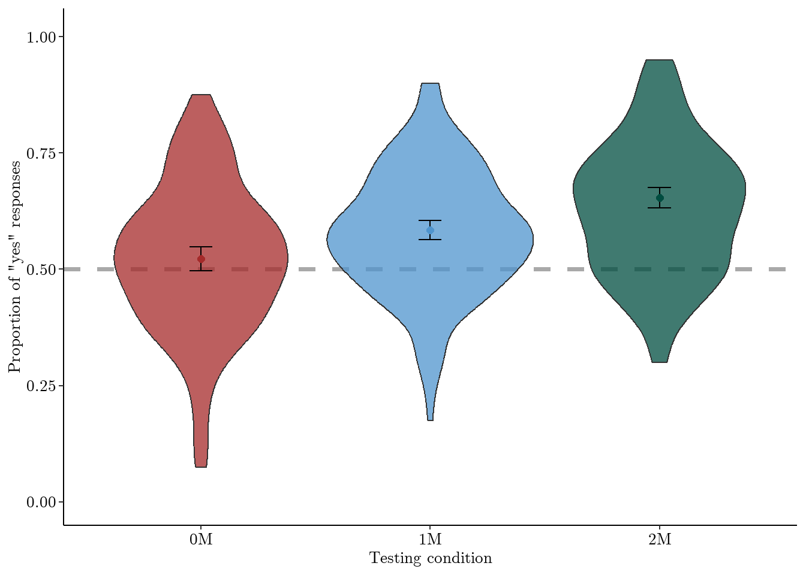
ggplot(data_testing_conditions_BLP, aes(x=condition,y=score,fill=Gender,group=interaction(condition,Gender))) +
scale_fill_manual(values=c(cols2[400],cols2[310])) +
geom_hline(yintercept=0.5, linetype="dashed",
color = "darkgray",lwd=1.25) +
geom_boxplot(alpha = 0.75, width=0.75) +
geom_point(position = position_dodge(width=0.75),size=2) +
labs(x = "Condition", y = 'Proportion of "yes" responses') +
theme(panel.grid.major = element_blank(), panel.grid.minor = element_blank(),
panel.background = element_blank(), axis.line = element_line(colour = "black"),
axis.text = element_text(family = "CMU Serif", size = 20, color = "black"),
text=element_text(family="CMU Serif",size=20),
legend.position=c(0.9,0.1),legend.background=element_rect(fill=NA)) +
ylim(0,1.05) +
coord_cartesian(expand = FALSE) +
scale_x_discrete(labels=c("0M", "1M", "2M"));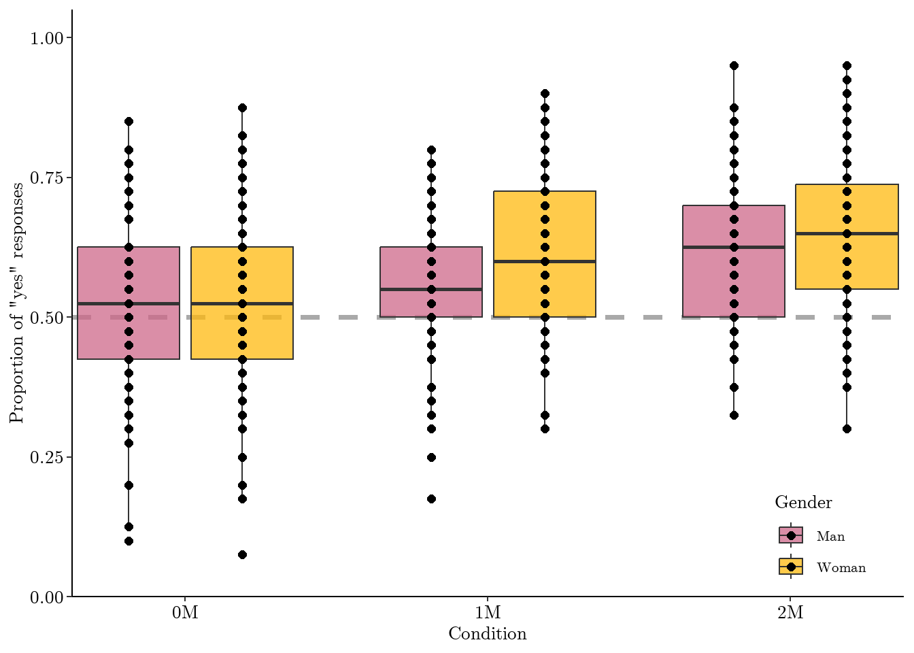
# Women say "yes" more in 1Meffect_Age <- as.data.frame(effect('testing_condition*scale(Age)',
lm_Age, confint=list(alpha=.95)),
xlevels = list(Age = 18:25,
testing_condition=c('0M','1M','2M')));Warning in Analyze.model(focal.predictors, mod, xlevels, default.levels, : the
predictors scale(trialn), scale(Age) are one-column matrices that were
converted to vectorsggplot(effect_Age, aes(x=Age,y=fit)) +
geom_hline(yintercept=0.5, linetype="dashed",
color = "darkgray",lwd=1.25) +
geom_line(aes(color = testing_condition), lwd = 2) +
geom_ribbon(aes(ymin = lower, ymax = upper, fill = testing_condition), alpha = .5) +
scale_color_manual(values=c(cols2[100],cols2[200],"#004D40FF"),
name="Condition",labels=c("0M","1M","2M")) +
scale_fill_manual(values=c(cols2[100],cols2[200],"#004D40FF"),
name="Condition",labels=c("0M","1M","2M")) +
labs(x = "Age", y = 'Proportion of "yes" responses', title = 'Fitted Line - Lme4') +
theme(panel.grid.major = element_blank(), panel.grid.minor = element_blank(),
panel.background = element_blank(), axis.line = element_line(colour = "black"),
axis.text = element_text(family = "CMU Serif", size = 20, color = "black"),
text=element_text(family="CMU Serif",size=20),
legend.position=c(0.1,0.1),legend.background=element_rect(fill=NA));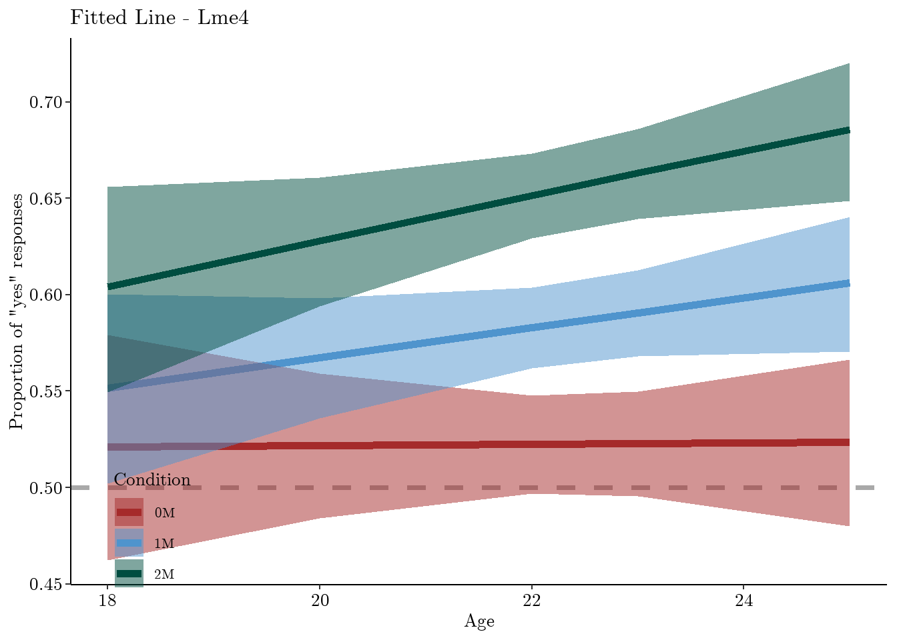
# Older -> bigger morph familiarity effecteffect_RC2 <- as.data.frame(effect('testing_condition*RC2_use_L1vsL2',
lm_RC2, confint=list(alpha=.95)),
xlevels = list(RC2_use_L1vsL2 = -1.9:3.9,
testing_condition=c('0M','1M','2M')))Warning in Analyze.model(focal.predictors, mod, xlevels, default.levels, : the
predictor scale(trialn) is a one-column matrix that was converted to a vectorggplot(effect_RC2, aes(x=RC2_use_L1vsL2,y=fit)) +
geom_hline(yintercept=0.5, linetype="dashed",
color = "darkgray",lwd=1.25) +
geom_line(aes(color = testing_condition), lwd = 2) +
geom_ribbon(aes(ymin = lower, ymax = upper, fill = testing_condition), alpha = .5) +
scale_color_manual(values=c(cols2[100],cols2[200],"#004D40FF"),
name="Condition",labels=c("0M","1M","2M")) +
scale_fill_manual(values=c(cols2[100],cols2[200],"#004D40FF"),
name="Condition",labels=c("0M","1M","2M")) +
labs(x = "RC2: L1 vs L2 Use", y = 'Proportion of "yes" responses', title = 'Fitted Line - Lme4') +
theme(panel.grid.major = element_blank(), panel.grid.minor = element_blank(),
panel.background = element_blank(), axis.line = element_line(colour = "black"),
axis.text = element_text(family = "CMU Serif", size = 20, color = "black"),
text=element_text(family="CMU Serif",size=20),
legend.position=c(0.1,0.9),legend.background=element_rect(fill=NA));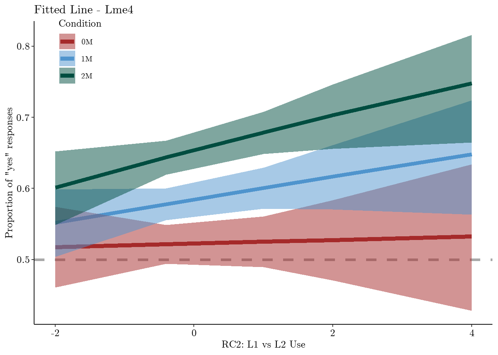
# More L2 use = greater morph fam effect (not overlapping so not 100% sure)effect_RC7 <- as.data.frame(effect('testing_condition*RC7_hist_L2',
lm_RC7, confint=list(alpha=.95)),
xlevels = list(RC7_hist_L2 = -2.1:3.1,
testing_condition=c('0M','1M','2M')));Warning in Analyze.model(focal.predictors, mod, xlevels, default.levels, : the
predictor scale(trialn) is a one-column matrix that was converted to a vectorggplot(effect_RC7, aes(x=RC7_hist_L2,y=fit)) +
geom_hline(yintercept=0.5, linetype="dashed",
color = "darkgray",lwd=1.25) +
geom_line(aes(color = testing_condition), lwd = 2) +
geom_ribbon(aes(ymin = lower, ymax = upper, fill = testing_condition), alpha = .5) +
scale_color_manual(values=c(cols2[100],cols2[200],"#004D40FF"),
name="Condition",labels=c("0M","1M","2M")) +
scale_fill_manual(values=c(cols2[100],cols2[200],"#004D40FF"),
name="Condition",labels=c("0M","1M","2M")) +
labs(x = "RC7: L2 History", y = 'Proportion of "yes" responses', title = 'Fitted Line - Lme4') +
theme(panel.grid.major = element_blank(), panel.grid.minor = element_blank(),
panel.background = element_blank(), axis.line = element_line(colour = "black"),
axis.text = element_text(family = "CMU Serif", size = 20, color = "black"),
text=element_text(family="CMU Serif",size=20),
legend.position=c(0.1,0.9),legend.background=element_rect(fill=NA));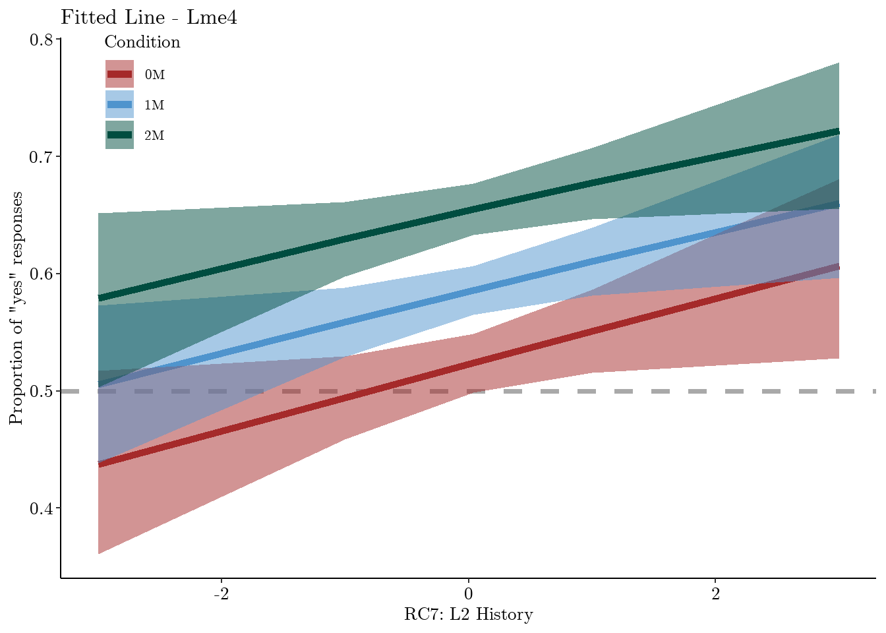
# Earlier bilingual = more "yes" responses overalleffect_multiexp <- as.data.frame(effect('testing_condition*scale(multiexp)',
lm_multiexp, confint=list(alpha=.95)),
xlevels = list(L1_L2_diff = 154:702,
testing_condition=c('0M','1M','2M')))Warning in Analyze.model(focal.predictors, mod, xlevels, default.levels, : the
predictors scale(trialn), scale(multiexp) are one-column matrices that were
converted to vectorsggplot(effect_multiexp, aes(x = multiexp, y = fit)) +
geom_hline(yintercept=0.5, linetype="dashed",
color = "darkgray",lwd=1.25) +
geom_line(aes(color = testing_condition), lwd = 2) +
geom_ribbon(aes(ymin = lower, ymax = upper, fill = testing_condition), alpha = .5) +
scale_color_manual(values=c(cols2[100],cols2[200],"#004D40FF"),
name="Condition",labels=c("0M","1M","2M")) +
scale_fill_manual(values=c(cols2[100],cols2[200],"#004D40FF"),
name="Condition",labels=c("0M","1M","2M")) +
theme(panel.grid.major = element_blank(), panel.grid.minor = element_blank(),
panel.background = element_blank(), axis.line = element_line(colour = "black"),
axis.text = element_text(family = "CMU Serif", size = 20, color = "black"),
text=element_text(family="CMU Serif",size=20),
legend.position=c(0.9,0.9),legend.background=element_rect(fill=NA)) +
labs(x = 'Mulilingual experience', y = 'Proportion of "yes" responses', title = 'Fitted Line - Lme4');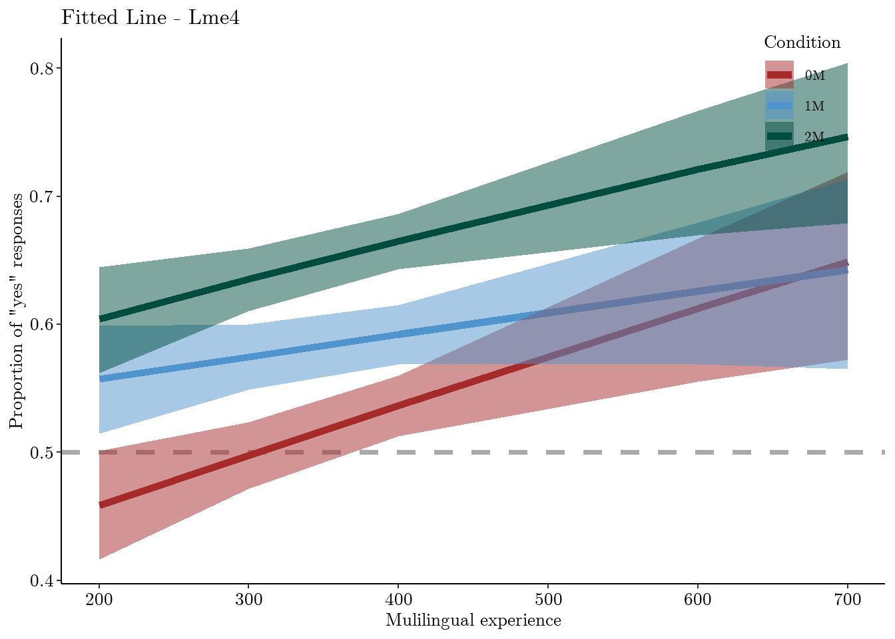
# More multiexp = more "yes" responses overalleffect_L1L2diff <- as.data.frame(effect('testing_condition*scale(L1_L2_diff)',
lm_L1L2diff, confint=list(alpha=.95)),
xlevels = list(L1_L2_diff = 0:210,
testing_condition=c('0M','1M','2M')));Warning in Analyze.model(focal.predictors, mod, xlevels, default.levels, : the
predictors scale(trialn), scale(L1_L2_diff) are one-column matrices that were
converted to vectorsggplot(effect_L1L2diff, aes(x = L1_L2_diff, y = fit)) +
geom_hline(yintercept=0.5, linetype="dashed",
color = "darkgray",lwd=1.25) +
geom_line(aes(color = testing_condition), lwd = 2) +
geom_ribbon(aes(ymin = lower, ymax = upper, fill = testing_condition), alpha = .5) +
scale_color_manual(values=c(cols2[100],cols2[200],"#004D40FF"),
name="Condition",labels=c("0M","1M","2M")) +
scale_fill_manual(values=c(cols2[100],cols2[200],"#004D40FF"),
name="Condition",labels=c("0M","1M","2M")) +
theme(panel.grid.major = element_blank(), panel.grid.minor = element_blank(),
panel.background = element_blank(), axis.line = element_line(colour = "black"),
axis.text = element_text(family = "CMU Serif", size = 20, color = "black"),
text=element_text(family="CMU Serif",size=20),
legend.position=c(0.9,0.9),legend.background=element_rect(fill=NA)) +
labs(x = 'Bilingual balance (L1-L2 difference)', y = 'Proportion of "yes" responses', title = 'Fitted Line - Lme4');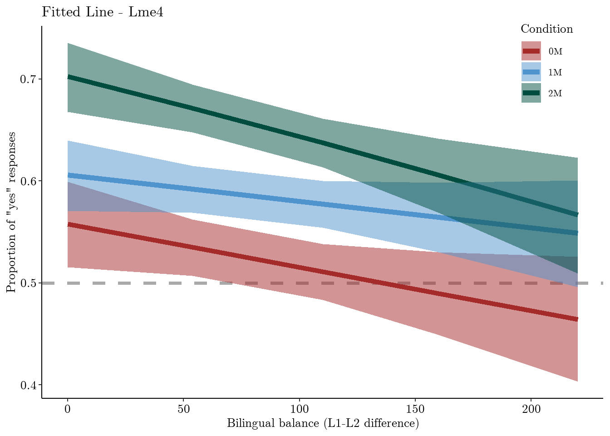
# More balanced bi = more sig morph fam effect & 2M "yes" more different from 1M "yes"effect_cossim <- as.data.frame(effect('testing_condition*cossim',
lm_cossim, confint=list(alpha=.95)),
xlevels = list(L1_L2_diff = 0:1,
testing_condition=c('0M','1M','2M')));
ggplot(effect_cossim, aes(x = cossim, y = fit)) +
geom_hline(yintercept=0.5, linetype="dashed",
color = "darkgray",lwd=1.25) +
geom_line(aes(color = testing_condition), lwd = 2) +
geom_ribbon(aes(ymin = lower, ymax = upper, fill = testing_condition), alpha = .5) +
scale_color_manual(values=c(cols2[100],cols2[200],"#004D40FF"),
name="Condition",labels=c("0M","1M","2M")) +
scale_fill_manual(values=c(cols2[100],cols2[200],"#004D40FF"),
name="Condition",labels=c("0M","1M","2M")) +
theme(panel.grid.major = element_blank(), panel.grid.minor = element_blank(),
panel.background = element_blank(), axis.line = element_line(colour = "black"),
axis.text = element_text(family = "CMU Serif", size = 20, color = "black"),
text=element_text(family="CMU Serif",size=20),
legend.position=c(0.1,0.9),legend.background=element_rect(fill=NA)) +
labs(x = 'Multilingual balance (cosine similarity)', y = 'Proportion of "yes" responses', title = 'Fitted Line - Lme4');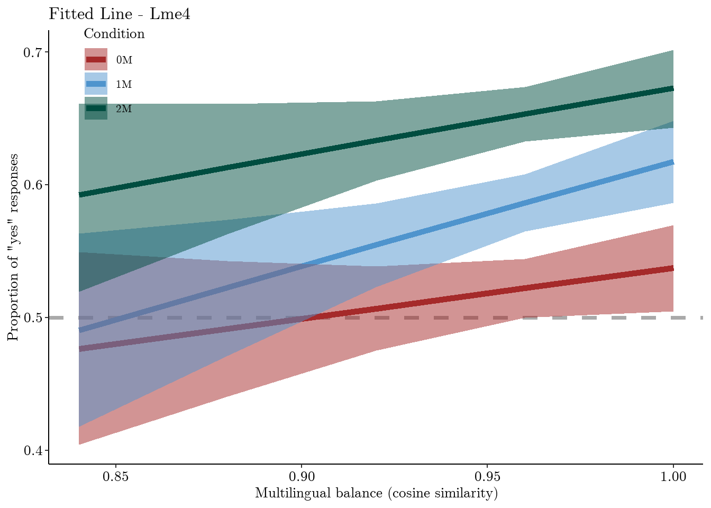
# More balanced multi = more sig morph fam effect & 1M "yes" more different from 0M "yes"ggplot(data_testing_conditions_BLP, aes(x=condition,y=score,fill=script,group=interaction(condition,script))) +
scale_fill_manual(values=c(cols2[400],cols2[310])) +
geom_hline(yintercept=0.5, linetype="dashed",
color = "darkgray",lwd=1.25) +
geom_boxplot(alpha = 0.75, width=0.75) +
geom_point(position = position_dodge(width=0.75),size=2) +
labs(x = "Condition", y = 'Proportion of "yes" responses') +
ylim(0,1.05) +
coord_cartesian(expand = FALSE) +
scale_x_discrete(labels=c("0M", "1M", "2M")) +
theme(panel.grid.major = element_blank(), panel.grid.minor = element_blank(),
panel.background = element_blank(), axis.line = element_line(colour = "black"),
axis.text = element_text(family = "CMU Serif", size = 20, color = "black"),
text=element_text(family="CMU Serif",size=20),
legend.position=c(0.9,0.1),legend.background=element_rect(fill=NA));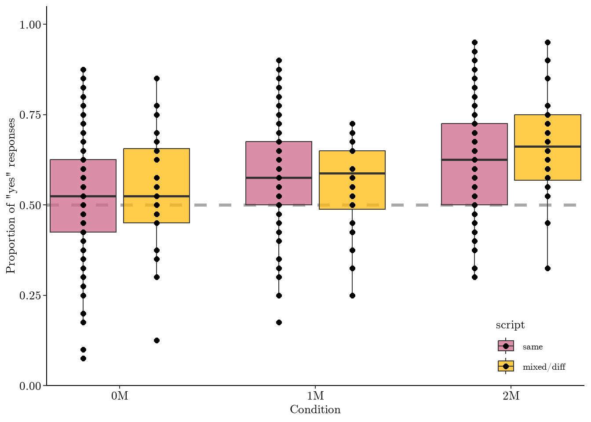
# Very slight 1M boxplot for mixed/diff lower... not really anything, especially
# with small mixed/diff sample sizeBLP_2Mscores <- data_BLP_testing[!duplicated(data_BLP_testing$sbj_ID), ];
data_testing_2M_aggr <- data_testing_2M_aggr[data_testing_2M_aggr$response=="meanYes",];ggplot(data_testing_2M_aggr, aes(x=expected, y=meanValue, fill=expected)) +
geom_hline(yintercept=0.5, linetype="dashed", color="darkgrey",lwd=1.25) +
geom_violin(alpha=0.75,width=1) +
geom_errorbar(aes(x=1,ymin=effect_2M$lower[[1]],ymax=effect_2M$upper[[1]]),
width=.1) + # false alarm
annotate("point",x=1,y=effect_2M$fit[[1]],colour="darkred",size=2) + # false alarm
geom_errorbar(aes(x=2,ymin=effect_2M$lower[[2]],ymax=effect_2M$upper[[2]]),
width=.1) + # hit
annotate("point",x=2,y=effect_2M$fit[[2]],colour="lightblue",size=2) + # hit
scale_fill_manual(values=c(cols2[100],cols2[200])) +
scale_x_discrete(labels=c('Between-language', 'Within-language')) +
labs(x = "String nature", y = 'Proportion of "yes" responses') +
theme(panel.grid.major = element_blank(), panel.grid.minor = element_blank(),
panel.background = element_blank(), axis.line = element_line(colour = "black"),
axis.text = element_text(family = "CMU Serif", size = 20, color = "black"),
text=element_text(family="CMU Serif",size=20),
legend.position="none",legend.background=element_rect(fill=NA));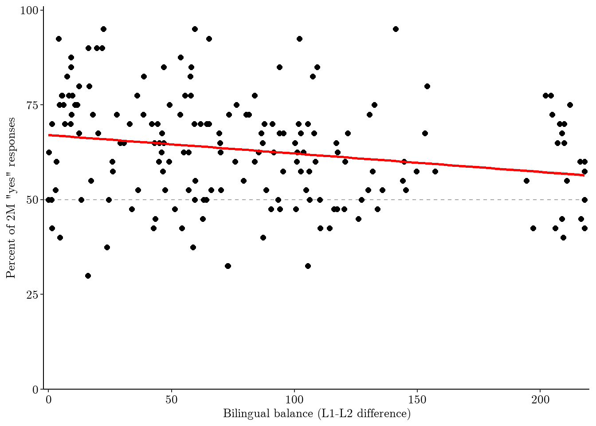
ggplot(data_BLP_testing, aes(x=L1_L2_diff,y=yes_2M)) +
geom_hline(yintercept=50,linetype="dashed",color="darkgrey") +
geom_point(size=2) +
geom_smooth(method="lm",formula=y~x,color="red") +
labs(x = "Bilingual balance (L1-L2 difference)", y = 'Percent of 2M "yes" responses') +
ylim(0,101) +
xlim(min(data_BLP_testing$L1_L2_diff)-2,max(data_BLP_testing$L1_L2_diff)+2) +
coord_cartesian(expand = FALSE) +
theme(panel.grid.major = element_blank(), panel.grid.minor = element_blank(),
panel.background = element_blank(), axis.line = element_line(colour = "black"),
axis.text = element_text(family = "CMU Serif", size = 20, color = "black"),
text=element_text(family="CMU Serif",size=20),
legend.position="inside",legend.position.inside = c(0.85,0.09),
legend.background=element_rect(fill=NA));lm_2M_cossim_nooutlier <- glmer(observed ~ scale(trialn) + expected*scale(cossim) + (1+expected|sbj_ID), data=data_BLP_testing[data_BLP_testing$testing_condition=='2M'& data_BLP_testing$rt>300 & data_BLP_testing$rt<3000&data_BLP_testing$score_2M>0.25,], family='binomial');boundary (singular) fit: see help('isSingular')summary(lm_2M_cossim_nooutlier);Generalized linear mixed model fit by maximum likelihood (Laplace
Approximation) [glmerMod]
Family: binomial ( logit )
Formula: observed ~ scale(trialn) + expected * scale(cossim) + (1 + expected |
sbj_ID)
Data: data_BLP_testing[data_BLP_testing$testing_condition == "2M" &
data_BLP_testing$rt > 300 & data_BLP_testing$rt < 3000 &
data_BLP_testing$score_2M > 0.25, ]
AIC BIC logLik -2*log(L) df.resid
8515.0 8569.5 -4249.5 8499.0 6686
Scaled residuals:
Min 1Q Median 3Q Max
-2.7975 -1.0862 0.5789 0.7471 1.3916
Random effects:
Groups Name Variance Std.Dev. Corr
sbj_ID (Intercept) 0.341894 0.58472
expectedwithin_lang 0.000952 0.03086 -1.00
Number of obs: 6694, groups: sbj_ID, 183
Fixed effects:
Estimate Std. Error z value Pr(>|z|)
(Intercept) 0.64796 0.05745 11.279 < 2e-16 ***
scale(trialn) -0.11238 0.02649 -4.243 2.21e-05 ***
expectedwithin_lang -0.04096 0.05244 -0.781 0.4348
scale(cossim) 0.13033 0.05717 2.280 0.0226 *
expectedwithin_lang:scale(cossim) -0.09561 0.05162 -1.852 0.0640 .
---
Signif. codes: 0 '***' 0.001 '**' 0.01 '*' 0.05 '.' 0.1 ' ' 1
Correlation of Fixed Effects:
(Intr) scl(t) expct_ scl(c)
scale(trln) -0.003
expctdwthn_ -0.492 -0.006
scale(cssm) 0.007 0.002 -0.011
expctdw_:() -0.011 -0.002 0.022 -0.486
optimizer (Nelder_Mead) convergence code: 0 (OK)
boundary (singular) fit: see help('isSingular')# no longer sig when remove participant with lowest 2M score (22.5%)ggplot(data_BLP_testing, aes(x=cossim,y=score_2M)) +
geom_hline(yintercept=0.5,linetype="dashed",color="darkgrey") +
geom_point(size=2) +
geom_smooth(method="lm",formula=y~x,color="red") +
labs(x = "Multilingual balance (cosine similarity)", y = '2M accuracy') +
ylim(0,1.1) +
xlim(min(data_BLP_testing$cossim)-0.01,max(data_BLP_testing$cossim)+0.01) +
coord_cartesian(expand = FALSE) +
theme(panel.grid.major = element_blank(), panel.grid.minor = element_blank(),
panel.background = element_blank(), axis.line = element_line(colour = "black"),
axis.text = element_text(family = "CMU Serif", size = 20, color = "black"),
text=element_text(family="CMU Serif",size=20),
legend.position="inside",legend.position.inside = c(0.85,0.09),
legend.background=element_rect(fill=NA));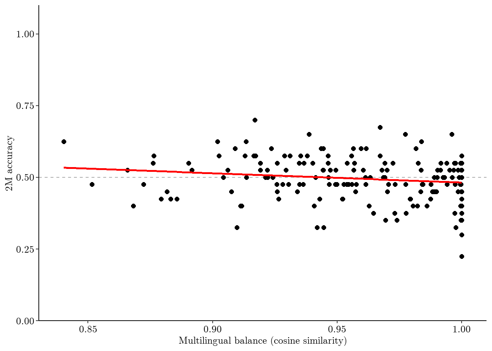
# without outlier
ggplot(data_BLP_testing[data_BLP_testing$score_2M>0.25,], aes(x=cossim,y=score_2M)) +
geom_hline(yintercept=0.5,linetype="dashed",color="darkgrey") +
geom_point(size=2) +
geom_smooth(method="lm",formula=y~x,color="red") +
labs(x = "Multilingual balance (cosine similarity) - no outlier", y = '2M accuracy') +
ylim(0,1.1) +
xlim(min(data_BLP_testing$cossim)-0.01,max(data_BLP_testing$cossim)+0.01) +
coord_cartesian(expand = FALSE) +
theme(panel.grid.major = element_blank(), panel.grid.minor = element_blank(),
panel.background = element_blank(), axis.line = element_line(colour = "black"),
axis.text = element_text(family = "CMU Serif", size = 20, color = "black"),
text=element_text(family="CMU Serif",size=20),
legend.position="inside",legend.position.inside = c(0.85,0.09),
legend.background=element_rect(fill=NA));plot(data_BLP_testing$yes_2M~data_BLP_testing$cossim,pch=19,ylim=c(0,100),
xlab="Multilingual balance (cosine similarity)",ylab='Percent of 2M "yes" responses',
cex.lab=2,cex.axis=1.5);
abline(lm(data_BLP_testing$yes_2M~data_BLP_testing$cossim), col = "red",lwd=2);
abline(h=50,lty=5);ggplot(data_BLP_testing, aes(x=ent,y=score_2M)) +
geom_hline(yintercept=0.5,linetype="dashed",color="darkgrey") +
geom_point(size=2) +
geom_smooth(method="lm",formula=y~x,color="red") +
labs(x = "Multilingual balance (entropy)", y = '2M accuracy') +
ylim(0,1.1) +
xlim(min(data_BLP_testing$ent)-0.1,max(data_BLP_testing$ent)+0.1) +
coord_cartesian(expand = FALSE) +
theme(panel.grid.major = element_blank(), panel.grid.minor = element_blank(),
panel.background = element_blank(), axis.line = element_line(colour = "black"),
axis.text = element_text(family = "CMU Serif", size = 20, color = "black"),
text=element_text(family="CMU Serif",size=20),
legend.position="inside",legend.position.inside = c(0.85,0.09),
legend.background=element_rect(fill=NA));ggplot(data_BLP_testing, aes(x=script,y=score_2M)) +
geom_hline(yintercept=0.5,linetype="dashed",color="darkgrey") +
geom_boxplot(fill="darkgrey") +
labs(x = "Script", y = '2M accuracy') +
scale_x_discrete(labels=c('Same', 'Different')) +
ylim(0,1.1) +
theme(panel.grid.major = element_blank(), panel.grid.minor = element_blank(),
panel.background = element_blank(), axis.line = element_line(colour = "black"),
axis.text = element_text(family = "CMU Serif", size = 20, color = "black"),
text=element_text(family="CMU Serif",size=20),
legend.background=element_rect(fill=NA));t.test(BLP_2Mscores$score_2M[BLP_2Mscores$script=='same'],mu=0.5);
One Sample t-test
data: BLP_2Mscores$score_2M[BLP_2Mscores$script == "same"]
t = -1.7158, df = 155, p-value = 0.08819
alternative hypothesis: true mean is not equal to 0.5
95 percent confidence interval:
0.4772463 0.5015999
sample estimates:
mean of x
0.4894231 t.test(BLP_2Mscores$score_2M[BLP_2Mscores$script=='mixed/diff'],mu=0.5);
One Sample t-test
data: BLP_2Mscores$score_2M[BLP_2Mscores$script == "mixed/diff"]
t = 2.1022, df = 27, p-value = 0.045
alternative hypothesis: true mean is not equal to 0.5
95 percent confidence interval:
0.5006852 0.5564577
sample estimates:
mean of x
0.5285714 data_testing_2M_script_aggr <- data_BLP_testing %>%
mutate(correct01 = case_when(correct == TRUE ~ 1,
correct == FALSE ~ 0),
yesno01 = case_when(observed == 'between_lang' ~ 0,
observed == 'within_lang' ~ 1)) %>%
filter(testing_condition == '2M') %>%
group_by(expected, sbj_ID, script) %>%
dplyr::summarise(meanCorrect = mean(correct01), se = sd(correct01/sqrt(n())),
meanYes = mean(yesno01), se = sd(yesno01/sqrt(n()))) %>%
mutate(meanNo = 1 - meanYes);`summarise()` has regrouped the output.
ℹ Summaries were computed grouped by expected, sbj_ID, and script.
ℹ Output is grouped by expected and sbj_ID.
ℹ Use `summarise(.groups = "drop_last")` to silence this message.
ℹ Use `summarise(.by = c(expected, sbj_ID, script))` for per-operation grouping
(`?dplyr::dplyr_by`) instead.data_testing_2M_script_aggr <- data_testing_2M_script_aggr %>%
pivot_longer(
cols = c(meanYes, meanNo),
names_to = "response",
values_to = "meanValue"
);script_short <- select(data_testing_2M_script_aggr[data_testing_2M_script_aggr$response=="meanYes",],c("sbj_ID","expected","script","meanValue"));
script_averages <- data.frame(
expected=rep(c("between_lang","within_lang"),2),
script=c(rep("same",2),rep("mixed",2)),
mean=c(mean(script_short[script_short$script=="same" & script_short$expected=="between_lang",]$meanValue),mean(script_short[script_short$script=="same" & script_short$expected=="within_lang",]$meanValue),mean(script_short[script_short$script=="mixed/diff" & script_short$expected=="between_lang",]$meanValue),mean(script_short[script_short$script=="mixed/diff" & script_short$expected=="within_lang",]$meanValue)),
se=c(sd(script_short[script_short$script=="same" & script_short$expected=="between_lang",]$meanValue)/sqrt(length(script_short[script_short$script=="same",]$script)/2),sd(script_short[script_short$script=="same" & script_short$expected=="within_lang",]$meanValue)/sqrt(length(script_short[script_short$script=="same",]$script)/2),sd(script_short[script_short$script=="mixed/diff" & script_short$expected=="between_lang",]$meanValue)/sqrt(length(script_short[script_short$script=="mixed/diff",]$script)/2),sd(script_short[script_short$script=="mixed/diff" & script_short$expected=="within_lang",]$meanValue)/sqrt(length(script_short[script_short$script=="mixed/diff",]$script)/2))
);
script_averages$upper <- script_averages$mean+script_averages$se/2;
script_averages$lower <- script_averages$mean-script_averages$se/2;
script2M_plt <- ggplot(data_testing_2M_script_aggr[data_testing_2M_script_aggr$response=="meanYes",], aes(x=script, y=meanValue, fill=expected)) +
geom_hline(yintercept=0.5, linetype="dashed", color="darkgrey",lwd=1.25) +
geom_violin(alpha=0.75,width=1) +
geom_errorbar(aes(x=0.75,ymin=script_averages[script_averages$script=="same" & script_averages$expected=="between_lang",]$lower,ymax=script_averages[script_averages$script=="same" & script_averages$expected=="between_lang",]$upper),width=.1) + # same script, between-language
annotate("point",x=0.75,y=script_averages[script_averages$script=="same"&script_averages$expected=="between_lang",]$mean,colour="darkred",size=4) + # same script, between-language
geom_errorbar(aes(x=1.25,ymin=script_averages[script_averages$script=="same" & script_averages$expected=="within_lang",]$lower,ymax=script_averages[script_averages$script=="same" & script_averages$expected=="within_lang",]$upper),width=.1) + # same script, within-language
annotate("point",x=1.25,y=script_averages[script_averages$script=="same"&script_averages$expected=="within_lang",]$mean,colour="lightblue",size=4) + # same script, within-language
geom_errorbar(aes(x=1.75,ymin=script_averages[script_averages$script=="mixed" & script_averages$expected=="between_lang",]$lower,ymax=script_averages[script_averages$script=="mixed" & script_averages$expected=="between_lang",]$upper),width=.1) + # mixed script, between-language
annotate("point",x=1.75,y=script_averages[script_averages$script=="mixed"&script_averages$expected=="between_lang",]$mean,colour="darkred",size=4) + # mixed script, between-language
geom_errorbar(aes(x=2.25,ymin=script_averages[script_averages$script=="mixed" & script_averages$expected=="within_lang",]$lower,ymax=script_averages[script_averages$script=="mixed" & script_averages$expected=="within_lang",]$upper),width=.1) + # mixed script, within-language
annotate("point",x=2.25,y=script_averages[script_averages$script=="mixed"&script_averages$expected=="within_lang",]$mean,colour="lightblue",size=4) + # mixed script, within-language
#geom_boxplot(position=position_dodge(width=1),width=0.25) +
scale_x_discrete(name="Script",labels=c('Same','Mixed')) +
scale_fill_manual(name="Expected",labels=c('Between-language', 'Within-language'),values=c(cols2[100],cols2[200])) +
labs(x = "String nature", y = 'Prop of "within-language" responses') +
theme(panel.grid.major = element_blank(), panel.grid.minor = element_blank(),
panel.background = element_blank(), axis.line = element_line(colour = "black"),
axis.text = element_text(family = "CMU Serif", size = 30, color = "black"),
text=element_text(family="CMU Serif",size=30),legend.position="inside",
legend.position.inside=c(0.8,0.1),legend.background=element_rect(fill=NA));ggplot(BLP_2Mscores, aes(x=category,y=score_2M)) +
geom_hline(yintercept=0.5,linetype="dashed",color="darkgrey") +
geom_boxplot(fill="darkgrey") +
labs(x = "Multilingual category", y = '2M accuracy') +
scale_x_discrete(labels=c('Monolingual','Bilingual','Trilingual','Quadrilingual')) +
ylim(0,1.1) +
theme(panel.grid.major = element_blank(), panel.grid.minor = element_blank(),
panel.background = element_blank(), axis.line = element_line(colour = "black"),
axis.text = element_text(family = "CMU Serif", size = 20, color = "black"),
text=element_text(family="CMU Serif",size=20),
legend.background=element_rect(fill=NA));t.test(BLP_2Mscores$score_2M[BLP_2Mscores$category=='mono'],mu=0.5);
One Sample t-test
data: BLP_2Mscores$score_2M[BLP_2Mscores$category == "mono"]
t = -1.7773, df = 21, p-value = 0.09001
alternative hypothesis: true mean is not equal to 0.5
95 percent confidence interval:
0.4210863 0.5061864
sample estimates:
mean of x
0.4636364 t.test(BLP_2Mscores$score_2M[BLP_2Mscores$category=='bi'],mu=0.5);
One Sample t-test
data: BLP_2Mscores$score_2M[BLP_2Mscores$category == "bi"]
t = -0.30645, df = 69, p-value = 0.7602
alternative hypothesis: true mean is not equal to 0.5
95 percent confidence interval:
0.4812256 0.5137744
sample estimates:
mean of x
0.4975 t.test(BLP_2Mscores$score_2M[BLP_2Mscores$category=='tri'],mu=0.5);
One Sample t-test
data: BLP_2Mscores$score_2M[BLP_2Mscores$category == "tri"]
t = -0.89264, df = 50, p-value = 0.3763
alternative hypothesis: true mean is not equal to 0.5
95 percent confidence interval:
0.4681360 0.5122561
sample estimates:
mean of x
0.4901961 t.test(BLP_2Mscores$score_2M[BLP_2Mscores$category=='quadri'],mu=0.5);
One Sample t-test
data: BLP_2Mscores$score_2M[BLP_2Mscores$category == "quadri"]
t = 1.2807, df = 40, p-value = 0.2077
alternative hypothesis: true mean is not equal to 0.5
95 percent confidence interval:
0.4911876 0.5393002
sample estimates:
mean of x
0.5152439 t.test(BLP_2Mscores$dprime[BLP_2Mscores$category=='mono'],mu=0);
One Sample t-test
data: BLP_2Mscores$dprime[BLP_2Mscores$category == "mono"]
t = -1.8177, df = 21, p-value = 0.08341
alternative hypothesis: true mean is not equal to 0
95 percent confidence interval:
-0.44558232 0.02994596
sample estimates:
mean of x
-0.2078182 t.test(BLP_2Mscores$dprime[BLP_2Mscores$category=='bi'],mu=0);
One Sample t-test
data: BLP_2Mscores$dprime[BLP_2Mscores$category == "bi"]
t = 0.046364, df = 69, p-value = 0.9632
alternative hypothesis: true mean is not equal to 0
95 percent confidence interval:
-0.08945928 0.09371642
sample estimates:
mean of x
0.002128571 t.test(BLP_2Mscores$dprime[BLP_2Mscores$category=='tri'],mu=0);
One Sample t-test
data: BLP_2Mscores$dprime[BLP_2Mscores$category == "tri"]
t = -0.95555, df = 50, p-value = 0.3439
alternative hypothesis: true mean is not equal to 0
95 percent confidence interval:
-0.17620482 0.06259697
sample estimates:
mean of x
-0.05680392 t.test(BLP_2Mscores$dprime[BLP_2Mscores$category=='quadri'],mu=0);
One Sample t-test
data: BLP_2Mscores$dprime[BLP_2Mscores$category == "quadri"]
t = 0.95181, df = 40, p-value = 0.3469
alternative hypothesis: true mean is not equal to 0
95 percent confidence interval:
-0.07200678 0.20020190
sample estimates:
mean of x
0.06409756 data_testing_2M_category_aggr <- data_BLP_testing %>%
mutate(correct01 = case_when(correct == TRUE ~ 1,
correct == FALSE ~ 0),
yesno01 = case_when(observed == 'between_lang' ~ 0,
observed == 'within_lang' ~ 1)) %>%
filter(testing_condition == '2M') %>%
group_by(expected, sbj_ID, category) %>%
dplyr::summarise(meanCorrect = mean(correct01), se = sd(correct01/sqrt(n())),
meanYes = mean(yesno01), se = sd(yesno01/sqrt(n()))) %>%
mutate(meanNo = 1 - meanYes);`summarise()` has regrouped the output.
ℹ Summaries were computed grouped by expected, sbj_ID, and category.
ℹ Output is grouped by expected and sbj_ID.
ℹ Use `summarise(.groups = "drop_last")` to silence this message.
ℹ Use `summarise(.by = c(expected, sbj_ID, category))` for per-operation
grouping (`?dplyr::dplyr_by`) instead.ggplot(data_testing_2M_category_aggr, aes(x=expected, y=meanCorrect, fill=expected)) +
geom_hline(yintercept=0.5, linetype="dashed", color="darkgrey",lwd=1.25) +
geom_violin(alpha=0.75,width=1) +
geom_errorbar(aes(x=1,ymin=effect_2M$lower[[1]],ymax=effect_2M$upper[[1]]),
width=.1) + # false alarm
annotate("point",x=1,y=effect_2M$fit[[1]],colour="darkred",size=2) + # false alarm
geom_errorbar(aes(x=2,ymin=effect_2M$lower[[2]],ymax=effect_2M$upper[[2]]),
width=.1) + # hit
annotate("point",x=2,y=effect_2M$fit[[2]],colour="lightblue",size=2) + # hit
scale_fill_manual(values=c(cols2[100],cols2[200])) +
scale_x_discrete(labels=c('Between-language', 'Within-language')) +
labs(x = "String nature", y = 'Proportion of "yes" responses') +
theme(panel.grid.major = element_blank(), panel.grid.minor = element_blank(),
panel.background = element_blank(), axis.line = element_line(colour = "black"),
axis.text = element_text(family = "CMU Serif", size = 20, color = "black"),
text=element_text(family="CMU Serif",size=20),
legend.position="none",legend.background=element_rect(fill=NA))+
facet_wrap(~category);ggplot(data_BLP_familiarity, aes(x=RC9_use_L4,y=fam_mean)) +
geom_hline(yintercept=0.50,linetype="dashed",color="darkgrey") +
geom_point(size=2) +
geom_smooth(method="lm",formula=y~x,color="red") +
labs(x = "PC9 (L4 Use)", y = 'Familiarity accuracy') +
ylim(0,1) +
xlim(min(data_BLP_familiarity$RC9_use_L4)-0.1,max(data_BLP_familiarity$RC9_use_L4)+0.1) +
coord_cartesian(expand = FALSE) +
theme(panel.grid.major = element_blank(), panel.grid.minor = element_blank(),
panel.background = element_blank(), axis.line = element_line(colour = "black"),
axis.text = element_text(family = "CMU Serif", size = 20, color = "black"),
text=element_text(family="CMU Serif",size=20),
legend.background=element_rect(fill=NA));BLP_fam <- data_BLP_familiarity[!duplicated(data_BLP_familiarity$sbj_ID), ];ggplot(data_BLP_familiarity, aes(x=ent,y=fam_mean)) +
geom_hline(yintercept=0.50,linetype="dashed",color="darkgrey") +
geom_point(size=2) +
geom_smooth(method="lm",formula=y~x,color="red") +
labs(x = "Multilingual balance (entropy)", y = 'Familiarity accuracy') +
ylim(0,1) +
xlim(min(data_BLP_familiarity$ent)-0.1,max(data_BLP_familiarity$ent)+0.1) +
coord_cartesian(expand = FALSE) +
theme(panel.grid.major = element_blank(), panel.grid.minor = element_blank(),
panel.background = element_blank(), axis.line = element_line(colour = "black"),
axis.text = element_text(family = "CMU Serif", size = 20, color = "black"),
text=element_text(family="CMU Serif",size=20),
legend.background=element_rect(fill=NA));ggplot(data_BLP_familiarity, aes(x=category,y=fam_mean)) +
geom_hline(yintercept=0.5,linetype="dashed",color="darkgrey") +
geom_boxplot(fill="darkgrey") +
labs(x = "Category", y = 'Familiarity accuracy') +
scale_x_discrete(labels=c('Monolingual', 'Bilingual','Trilingual','Quadrilingual')) +
ylim(min(data_BLP_familiarity$fam_mean)-0.05,max(data_BLP_familiarity$fam_mean)+0.05) +
theme(panel.grid.major = element_blank(), panel.grid.minor = element_blank(),
panel.background = element_blank(), axis.line = element_line(colour = "black"),
axis.text = element_text(family = "CMU Serif", size = 20, color = "black"),
text=element_text(family="CMU Serif",size=20),
legend.background=element_rect(fill=NA));t.test(BLP_fam$fam_mean[BLP_fam$category=='mono'],mu=0.5);
One Sample t-test
data: BLP_fam$fam_mean[BLP_fam$category == "mono"]
t = 3.8521, df = 21, p-value = 0.0009247
alternative hypothesis: true mean is not equal to 0.5
95 percent confidence interval:
0.5432253 0.6446535
sample estimates:
mean of x
0.5939394 t.test(BLP_fam$fam_mean[BLP_fam$category=='bi'],mu=0.5);
One Sample t-test
data: BLP_fam$fam_mean[BLP_fam$category == "bi"]
t = 6.6526, df = 69, p-value = 5.636e-09
alternative hypothesis: true mean is not equal to 0.5
95 percent confidence interval:
0.5570102 0.6058470
sample estimates:
mean of x
0.5814286 t.test(BLP_fam$fam_mean[BLP_fam$category=='tri'],mu=0.5);
One Sample t-test
data: BLP_fam$fam_mean[BLP_fam$category == "tri"]
t = 6.3212, df = 50, p-value = 6.917e-08
alternative hypothesis: true mean is not equal to 0.5
95 percent confidence interval:
0.5517261 0.5999079
sample estimates:
mean of x
0.575817 t.test(BLP_fam$fam_mean[BLP_fam$category=='quadri'],mu=0.5);
One Sample t-test
data: BLP_fam$fam_mean[BLP_fam$category == "quadri"]
t = 3.2128, df = 40, p-value = 0.002597
alternative hypothesis: true mean is not equal to 0.5
95 percent confidence interval:
0.5174912 0.5768178
sample estimates:
mean of x
0.5471545 data_BLP_short <- subset(data_BLP, select=c(HistoryL1Score,HistoryL2Score,HistoryL3Score,HistoryL4Score,
UseL1Score,UseL2Score,UseL3Score,UseL4Score,
ProficiencyL1Score,ProficiencyL2Score,ProficiencyL3Score,ProficiencyL4Score,
AttitudeL1Score,AttitudeL2Score,AttitudeL3Score,AttitudeL4Score,
L1Score,L2Score,L3Score,L4Score,
var,ent,use_ent,cossim,use_cossim,multiexp,L1_L2_diff,
RC3_L3,RC1_L4,RC2_use_L1vsL2,RC7_hist_L2,RC9_use_L4));
plot(varclus(as.matrix(data_BLP_short)))